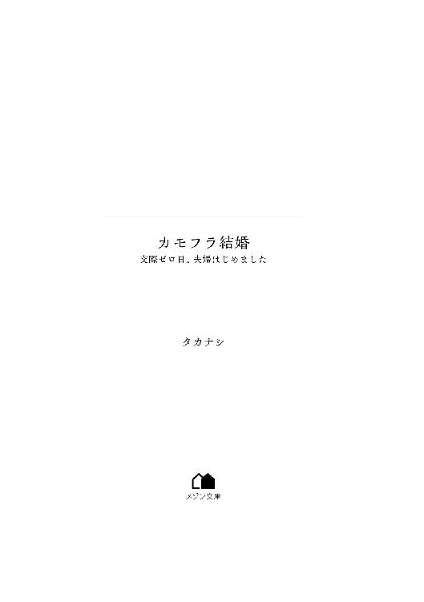
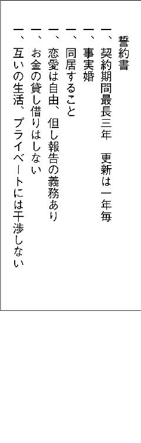
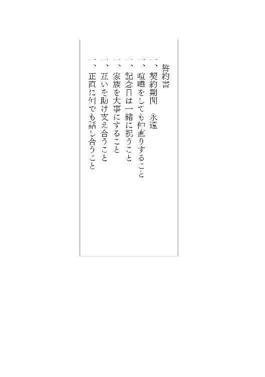

| カモフラ結婚 交際ゼロ日、夫婦はじめました (メゾン文庫) | |
| タカナシ | |
| 一迅社 (2018) | |

取るに足らないと思っても、仕事をむげに断ってはいけない。
その仕事が何をもたらすか、やってみなければ分からないのだから。
――ジュリア・モーガン
ときめき、刺激、不倫――、どれも婚活には、いらない。
恋愛感情や性欲なんて、とっくに忘れてしまった。
私は安らぎが欲しい、癒やしが欲しい。同じようなスタンスで人生を共に歩んでいけるパートナーが欲しい。
東京駅構内の雑踏もざわめきも、もはや気にならなくなる。
待ち人の顔を思い浮かべるが、実は、あまり鮮明ではなかった。ただ、笑ったときのえくぼが可愛らしかったことだけは覚えている。
なんせ、マッチングアプリで出会った西尾くんと会うのは、今日で三回目。
これから新幹線で静岡まで行き、実家の両親に西尾くんを紹介するつもりだ。
展開が早すぎる？ いやいや、こういうことは勢いだから。
もちろん、前回のデートのとき、すでにプロポーズの言葉はいただいている。こうなれば一刻も早く結婚するに越したことはない。
交際期間なんて無駄だ。つきあってみたところで、結婚への温度差があれば意味がない。
最初から、次につきあう人は結婚する人だと決めていた。
その点、西尾くんは性格も良さそうだし気疲れしない。一緒にいて不快でないというのは重要だ。
さらに、マッチングアプリでの相性度はなんと九十五パーセント。これほど相性の良い相手は滅多にいないと思う。
私も、もうじき三十歳。恋愛して別れて、なんてことを繰り返している暇はない。
あとは、結婚に向けて行動あるのみ。
今日の私は、ぱりっとスーツで決めてくるはずの西尾くんの隣に並んでも恥ずかしくないよう、ネイビーのフレアワンピースに下ろし立てのパンプスという出で立ちだ。
ここ数年、髪の長さは扱いやすいミディアムレングス、勝負日に限り、毛先はゆるふわに巻く。それにしても。
待ち合わせの時間を過ぎたというのに、西尾くんは姿を見せない。スマホのトーク画面を何度も確認するが、メッセージに既読すらつかなかった。
ふいに、背筋がぞわりとする。得体の知れない不安に襲われた。
信じたい気持ちが猜疑心を追いかけるも、追いつかないまま......。
ピコン、通知音が鳴った。
『ごめんなさい。やっぱり結婚はできません。さようなら』
ええっ？
ディスプレイを、二度見、三度見、四度見しても、間違いない。嫌な予感は的中してしまった。
人目もはばからず、膝から崩れ落ちる。
もしかして、逃げられた？
冗談じゃない。前回のデートで西尾くんに十万円という大金を貸したままだ。
それも戻らないということだろうか。
ということは。やっぱり。つまり。これって。
結婚詐欺でしょう！
いつかは、そう、いつかは結婚できると思っていた。しかし、片瀬沙也、御年二十九歳、いまだに独身。
まさかこんなにも、普通に恋愛して、普通に結婚することが難しいとは思いもよらなかった。
気がつけば、ＳＮＳのトップ画像は軒並みウェディングドレスや子供の写真になっている。地元の友人たちは特に結婚も早く、すでに三人目を妊娠中の人もいる。
そうは言っても、自分は自分、妥協して結婚なんてあり得ない。一緒にいて心地よい人と巡り会って結婚したい。
「なに、のんきなこと言っているの！ もう三十歳なんだから、お見合いでもなんでもしてさっさと結婚しなさい！」
――まだ二十九歳だから！
二十歳そこそこで私を産み、化粧品のセールスレディを二十年以上続けてきた母は口が達者で容赦がない。責め立てるつもりがないのは分かる、明るく冗談めかして臆病になっている娘の背中を押したいのだろう。
それでも。
イライラしてしまうからしょうがない。その一方では、母を悲しませたくないと、無理して期待に応えようとしてしまう。
出会いのきっかけは、なんだって同じだろうと思う。婚活アプリだろうと、合コンだろうと、恋愛に発展するかどうかは本人たちの問題だ。そこに偏見はない。
だからと言って、出会ったばかりの男性と、二回目のデートで結婚の約束をして、それを信じるなんて、いくら焦っていたとはいえ馬鹿げていたかもしれない。冷静になって思い返せば最初から、いろいろとおかしなところはあったというのに。
アンティークなインテリア、夜景が一望できるカウンター、店内のムードに呑まれてしまった。窓の外、ライトアップされた東京タワーに目を奪われていると、竜宮城のおもてなしかと見まがう料理が運ばれてきた。
とろけるフォアグラ、牛肉のポワレ、口の中は天国になる。美味しい料理に極上のワイン、夢のようだ。
西尾くんが指定してきたビストロで待ち合わせて、食事をしたところまでは良かったが。
「あ、あれ、財布がない......」
いざお会計というときにそんなことを言い出され驚いた。そうは言っても、私だって、財布を忘れて友人に迷惑をかけることはなきにしもあらず。
「今日は、私がごちそうしますよ。次はお願いしますね」
偶然、給料日のあとで余裕もあった。
「恥ずかしいところを見せてしまいました」
結婚するのなら、素の自分を見せられる相手がいい。夫になる人にもありのままを見せてほしい。お互いのダメなところも笑って許し合えるような関係ってすごくいい。
「ありがとう」
そう言って笑った西尾くんの頬にはえくぼ、まさか嘘をつくような人だとは思えなかった。
食事を終え、駅まで送ってもらう道のりで、並んで歩く姿がショーウィンドウのガラスに映る。もうすでに、恋人同士のようだ。
歩く速度も、ぴったりじゃないか。これぞ、気が合う証拠だ。
「総合商社勤めで海外出張が多く、彼女ができてもなかなか会えず、すぐに疎遠になってしまうんです」
西尾くんが気まずそうに言った。
最初のデートでは趣味や休日の過ごし方など、当たり障りのない会話止まりだったけれど。
話題は、いよいよ核心に迫っているような気がした。
「私は新卒で勤めていた会社を退職して、派遣社員をやっています。やはり、給与面では厳しいですね。業種は、建設業です。ＣＡＤオペレーターをやっています」
事務職から、建築系のＣＡＤオペレーターに転職してやっと二年目を迎えた。
仕事は結婚してからも続けたい。ならば、手に職を持つべきだと考えて選んだ仕事だ。ところが、現実はそう甘いものではなかった。
「建設系は大変そうですね。ＣＡＤオペレーターって、どんなお仕事なんですか？」
「ＣＡＤオペレーターは、設計者が描いた設計図を、コンピューターソフトを使って正確な図面に仕上げる仕事です」
自分が携わった設計図をもとに、建築物が出来上がる。その過程を間近で見ていられる。なにより、建築現場のかっこいい建設機械に萌える。
「やりがいがあります」
熱を込めて断言した。
「仕事で生き生きとしている女性は魅力的だな」
その言葉に、西尾くんが自分を肯定してくれたように感じ、気分が良くなった。
仕事には満足しているものの、安定した収入が見込めそうにないという、将来的な不安要素は残るため、環境や利便性より家賃の安さで選んだアパート暮らし。
ところが、そのアパートが老朽化により取り壊されることになってしまった。立ち退きに関する交渉は終えており、あとは自分が引っ越すだけだが、まだ行くあてはない。
今朝、とうとう立ち退き通知が届いてしまったと、軽い気持ちで西尾くんに相談してみたら。
「沙也さんさえ良ければ、僕を頼っていただけませんか？ マンションの部屋は余っています」
思いがけない申し出に、さすがに躊躇してしまう。
「そういうのはちょっと......、婚活中ですし」
同棲だけは、絶対にしないと決めている。
「僕は、真剣です」
「えっ？ それは、もしかして？」
いきなりのプロポーズ？
「ええ、そのつもりです」
――待ってました！
ならば、話が早い。
「でしたら、私の両親に会っていただけますか？」
唐突だとは思ったけれど、過去の恋愛のように、ずるずるつきあって破局、なんてことにはもうなりたくなかった。
これでダメなら、すぐにでも次に行くつもりだ。
息巻く私に、西尾くんはあっさりと「もちろん」と言ってくれた。
心の中でガッツポーズ、のはずが。
「あの......、こんなときにお恥ずかしいですが、財布をどこかに落としてしまったようです。電車に乗るときはあったはずなのになあ。店に行く途中でなくしたのかも......」
申し訳なさそうな顔をされてしまった。
「え、それ大変じゃないですか！」
財布がなかったのは、忘れたのではなく落としたのか、と衝撃を受けたものの、それは一大事と、私たちは交番に向かうことにした。
しかしながら本当にうっかりした人だなあとながめていたら、真面目な顔で西尾くんは言った。
「みっともないので、僕一人で行ってきます」
馬鹿にしたつもりはなかったが、気を悪くしたのかもしれないと、冷や冷やしてしまう。
「私、待っていますね」
そう言って、西尾くんを見送った。
駅前のカフェに入り、カウンターで注文したコーヒーを受け取って窓際の席に着く。
そわそわして少しも落ち着かない。
湖の中から女神が出てきて、
『あなたが落としたのはくたびれた財布ですか、それとも結婚へのプラチナチケットですか？』
と、問われているような気がしてしまった。
身震いしたところで――西尾くんが「お待たせしました」と向かいの席に座った。
「それにしてもまいったなあ」
空笑いがなおいっそう悲壮感を漂わせる。ずいぶん気落ちしているようで心配になった。
「届出はしましたが、現金が戻ってくる可能性は低いようです」
西尾くんが、深いため息のあと遠い目をした。
「現金どころかカードまで......、すっからかんだ」
視線を戻すと、今度はテーブルに肘をついた姿勢で頭を抱え込む。
「実は、親戚に不幸がありまして、明日、実家に戻らねばなりません」
やっと顔を上げたと思ったら、ついには泣きそうな表情になる。
「情けないなあ」
そのときの、眉毛が下がった西尾くんの顔を見て、小学校の下校中、どこまでも後をついてきた、のら犬のことを思い出した。
通学路は工場地帯の近くでダンプカーが行きかっている。そんなところに置いていくなんてひどく心が痛んだ。抱き上げて、公園まで連れていったものの、そこで泣く泣く別れるしかなかった、遠い記憶。
当時は団地住まいで生き物は飼えず、仕方なかった。
あのときの子犬と、弱った表情がそっくりだ。
「私でお役に立てるなら！」
コンビニＡＴＭならまだ間に合うはずだ。
未来の旦那様への先行投資くらいに考えた、とんでもなく間抜けで能天気な私は――。
立ち退き料をあてにして気が大きくなっていたせいだろう、十万円という大金を出会って間もない相手に、ポンと渡す。
「次は、沙也さんのご両親に挨拶させてください」
西尾くんのその言葉をまるっと信じてしまった。
恋愛経験と言えば、西尾くん以外は後にも先にもたった一人、元カレだけ。という具合で、なにもなかったわけではないけれど。
いかんせん、経験値が低すぎる。男性と二人きりになっても、いい雰囲気になりにくい。
単刀直入に言えば、色気がない、それにつきる。
街コンにだって、婚活パーティーにだって誘われれば参加した。飲み仲間にはなれても、恋人にはなれない。それが、私。
だからこそ、西尾くんからのアプローチは千載一遇のチャンスだった。
デート中の会話も、スマホでのやりとりも、結婚の匂いがプンプンする。女性として興味を持たれている久々の好感触、これを逃すわけにはいかない。
毎日のように『元気ですか？』、『おやすみなさい』、他愛のない内容ながらメッセージを送りあっていたせいか、二回目のデートでは、ぐんと心の距離が近づいた......ような気がしていた。
まさか、こんなことになろうとは。
鼻先にぶら下げられた結婚のエサに釣られて、安易にお金を貸すなんて浅はかだった。友人たちにはすでに「結婚しまーす♡」とＳＮＳで報告済みだ。自分史上最多の「いいね！」を記録したというのに今さらどうしたものか。
だいたい、頼まれると断れない、その性格が災いして、これまでだって幾度となく苦渋を味わってきた。会社員時代の私は、デートや合コンに忙しいキラキラ女子のぶんまで残業する社畜女子だった。
「どうしよう、久しぶりのデートなのに......。これじゃ、待ち合わせに間に合わない」
泣きそうになる後輩を見捨てられるはずなどない。
「まかせて」
私はどんと胸を叩いて、残業を買って出た。
「片瀬さん、今日も頼むよ。君にしか頼めない」
人の良さそうな上司に手を合わされては断れない。
「いいですよ」
まさかサービス残業だとは聞いていなかった。
うすうすブラック企業ではないかと気づいてはいたけれど。
私だけにやたらと仕事が回ってくる。残業代なしで毎日深夜まで居残り。
それでも、社会の一員として働くことは当然で常識だと思っていた。
くたくたになって部屋に戻れば、ヒモと化した一日中ぐうたらしている彼氏が腹を空かせて待っている。
「なんか食わせてー」
まず、おかえり、でしょう？
ふざけるな！ こちらはいろんなことを犠牲にしながら遅くまで仕事をしていたのだ、そのうえ食事の用意まで期待されてはたまらない。そもそも、労いの言葉くらいないのだろうか。
元カレとは合コンで出会って、すぐにつきあうようになった。勢いで、強引に、人生初のそんなことになってしまった。だからだろうか、多少は理不尽なことでも我慢するのが恋人なのだろうと疑わなかったが。
それも最初のうちだけだった。
身も心も疲れ果て、そのような余裕もいつしかなくなった。
「次の職が見つかるまで、お願い」
勝手に仕事を辞めて転がり込んでくるような、甘えきった男にこれ以上振り回されるのはごめんだ。
最初からチャラい奴だったけど、サラリーマンの頃はまだ許せた。
ごくつぶしとなってしまえば、いいところなんてひとつもないように思えてしまった。
そのくらい精神は追い詰められていた。恋愛どころではなかった。
流されるままにはじめた同棲も、「出ていけー！」、ＰＭＳでイラついていた五年前のあの日、あっけなく幕を閉じた。
＊
西尾くんが姿をくらましてからおよそ一週間、いよいよ現実を受け止めるしかなくなった。
そう覚悟を決めたところで、追い打ちをかけるかのように。
昨夜、とうとう大家から催促の電話が来てしまった。部屋の明け渡し日は決まったのかと問い詰められ、気圧されるように「今月中には必ず」と返事をした。
さて、行くあてなどないのにどうしたものか。困り果ててはいるものの。
悩みがあるからと仕事は待ってはくれない。いつもと同じ駅から職場までの道のりで、何気なく空を見上げた。
視界いっぱいに。
イワシ雲が一面に広がった、憂鬱を吹き飛ばすような気持ちの良い朝。
しかも今日は、なにもなくとも気分が上がる金曜日だ。
少し冷たくなった空気に身を縮め、仮囲いに沿って歩いていく。その頃にはすっかり昼のお弁当のことしか頭になかった。
ゲートで警備員に挨拶をして敷地内に入ると、すぐに二階建ての仮設事務所が見えた。ここが、私の職場だ。
一階は工事を行う作業員さんたちの休憩所、二階に事務所がある。
また、女性専用棟もあり、男性とは別に休憩所や更衣室が準備されている。
ランチの心配もない。食堂もあるし、仕出しのお弁当屋さんも来てくれる。
仮設の事務所と言っても、内装も普通のオフィスと何ら変わりない。建築現場と聞いて誰もが思い浮かべるイメージよりずっと、綺麗で働きやすい環境だと思う。
オフィスタワー建設地の様子は、まっさらだった着工前とは打って変わり、基礎工事のための大型杭打機が鎮座していた。
その光景に、完成予想図を重ねると、さらに期待は高まる。そこに。
同じく現場を感慨深げに見つめる一人の男性。
作業着とヘルメットを見て、大洋建設の現場監督さんだと分かった。
もともと設計部の仕事を手伝うために派遣された私だけど、今のところ仕事らしい仕事がないようで、現場事務所の庶務を兼任することになった。
現場監督さんたちとも毎日顔を合わせるようになったものの、視界の先にいる彼は中でも存在感が薄く......、名前がすぐに出てこない。
しかし。
いつも疲れて背中を丸めていた彼が、今朝は背筋を伸ばし晴れやかな表情だった。このほうがずっといい、普段の残念な感じがもったいないとさえ思わされる。
このくらい常にしゃきっとしていれば、企業パンフレットの表紙にしてもいいくらい素敵だ。
「おはようございます」
声をかけると、「あっ、どうも、おはようございますっ」と、調子の外れた声で返される。
おぼつかなさに、がっかりしたのはここだけの話。
事務所一階の詰所（休憩所）からは、作業員たちの談笑が聞こえてきた。
「沙也ちゃん、おはようさん」
自分の父親と同じくらいか、それより年上に見える、土木作業員のノリさんに声をかけられた。ノリさんは気さくで話しやすいけれど、エッチなのがよろしくない。
バストサイズや下着の色を聞いてくるのは日常茶飯事で、こちらもすっかり下ネタへの返しに慣れてしまった。
「沙也ちゃんは、おっぱい何カップだっけ？」
「ワンカップ大関～！」
腰に手を当て、ぷはーっと一気飲みのジェスチャーまでつける。はいはい、いつものお約束。
「セクハラですよ、やめてください」
その声に振り返ると、先ほどの、どこか頼りない現場監督さん。
ええと、名前は確か......、ああ、そうだ、藤木さん。
いつの間にか、その藤木さんが私の後ろに立っていた。
近くで見てみると、なかなかすっきり整った顔立ちだ。ただ、ほんのり頬を染めているのはどういうことだろう。恥ずかしいのは、くだらないダジャレでおちゃらける私のほうだ。
加えてやってきたのは、若い女性。それだけで空気がすっと変わった。そこらにいる作業員たちの視線が一気に集中する。
「おはようございます......」
嫌味のない、石鹸の香りが鼻をかすめた。
やっと聞き取れるくらいの、か細い声で挨拶し、逃げるように横をすり抜けていったのは、恥ずかしがり屋の事務員、野々宮多華子ちゃんだ。
ふわふわのボブヘアに、指先はピンクのネイル。ショルダーバッグと北欧の妖精カバミンがプリントされたキャンバス地のトートバッグの二個持ちだ。初々しい学生のような雰囲気を残しつつ働く大人女子感もある。
いろんな意味で、ちょうどいい感じ。
一方こちらは、冷え対策にヒートテックを重ね着し、乾燥気味で加湿器が手放せない。
悲しいかな、行きすぎた感じ。
多華子ちゃんはまだ二十六歳、プライベートまで八方ふさがりな三十路手前の私との間に立ちふさがるのは、越えられない壁。
「お、おはようございます」
階段を上っていく多華子ちゃんの後ろ姿に、遠慮がちに藤木さんが声をかけたが、遅すぎる。本人には届いていないようだった。
藤木さん、見てくれは悪くないのに、足りない、何かが圧倒的に足りない。
存在感の薄い現場監督に同情しながら、私も階段を上った。
二階の事務所では、所長の菅沼さんがふんぞり返って朝刊を読んでいた。
「おはようございます！」
はりきって声を出したのに、「おう」と新聞から顔を上げようともせずに、適当に流される。若干ムッとしたものの、いつものことだ、気にしない。
大手ゼネコン矢島建設の菅沼さんは、現場で一番偉い人。会社で言うところの社長だ。大企業に勤める立派な人なのに、普段はそこら辺にいるおじさんと変わりない。
他のゼネコン社員はもう少し紳士的だけれど、ひときわ独特な雰囲気だ。
「派遣のお姉ちゃん、午後からケータリング屋さん来るから対応よろしくね。分からないことは、幹事の榛名さんに訊いて」
「はーい」
勤務してすでにひと月は経とうというのに、相変わらず名前で呼ばれない。
こちらが「片瀬沙也です」と主張すればするほど、「はいはい、派遣のお姉ちゃん」と、かえってとりあってもらえないのだ。もういい加減、あきらめている。
で、ケータリング屋さん？ すっかり忘れていたが、予定表を見ながら、バーベキュー大会か、ああ、またいじられるのかと、せっかく上がっていた気持ちが沈む。
〝建設小町〟などと愛称をつけられ雇用促進が進められているものの、建築業界において女性はまだ少ない。〝ドボジョ〟も〝トラガール〟もしかり。
現場は圧倒的な男社会だ。お酒が入るとセクハラとまでは言わずとも、からかい発言に勢いがつく。三十路手前の独女なんて格好の餌食となるのは目に見えていた。なんともめんどくさい。
今回の派遣先は、スーパーゼネコン（大手建設会社）を筆頭に構成される、ＪＶ（ジョイントベンチャー）の現場だ。
ＪＶとは、複数のゼネコンが一つの工事を共同で受注し施工する、共同企業体のことを言う。大規模工事は数社の技術力を持ち寄って確実に工事を進めていく方法をとるのが通例だ。
また、工事を受注するのはＪＶだが、施工をするのはサブコンと呼ばれる協力会社だ。サブコンはそれぞれ建築工事の一部、基礎・躯体・設備・電気など専門分野の工事を行う。
つまり、ゼネコンは総合デパートで、サブコンは洋服屋や靴屋のような専門店という感じ。
大きな現場は、元請のゼネコン社員からサブコンの作業員まで、その数は桁外れ。懇親や慰労を目的とした飲み会の回数も必然的に増え、スケールも大きくなる。それにともなう雑用が増えるのも仕方ない。
今日もおそらく、バーベキュー大会の準備に追われることになるはずだ。
ＣＡＤオペレーターとして派遣されたものの、設計部の社員はＣＡＤを使える人が多いため、図面の仕事は予想以上に少なかった。今のところ私の仕事はもっぱら雑務と言っていい。
バーベキュー大会に合わせて、早めに工事を切り上げた作業員たちも心なしか浮かれていた。
「多華子ちゃん、今度デートしようよー」
「こ、困ります。デートなんてできませんっ」
とりわけこの若い土木作業員は、用もないのに事務所にやってきては、しつこく多華子ちゃんに絡んでいた。所長の留守を狙ってやってくるのでなおさら性質が悪い。見かねて口を出せば、「オ・バ・サ・ン」と、反撃されるのは目に見えているので、無視を決め込んでいる。ところが。
「連絡先、交換しよ」
なれなれしく肩に手を乗せられ、多華子ちゃんが泣きそうな顔をしたところで、堪忍袋の緒が切れた。ここは、キャバクラではないのだ。
「よしよし、分かった。多華子ちゃんと仲良くしたければ、まずマネージャーの私を通しなさい。スマホ寄越して。私と連絡先、交換しようよ。なんせ、病んでる三十路女だから。二十四時間、怖ーいメッセージが垂れ流されるのは覚悟しといてよ」
「片瀬さん、マジ、こえぇ」
ちょっと脅しただけで、若い作業員はしっぽを巻いて逃げ出した。ざまあみろ。
「沙也さん、ありがとうございます」
「いえいえ、どういたしまして」
励ますつもりで、多華子ちゃんにキャンディをひとつ渡す。どうか、この程度のセクハラでめげないで。彼らも悪気はないのだ、たぶん。
多華子ちゃんのデスクには、ユニークでセンスのいい付箋やメモ用紙が並んでいて、見ているだけでわくわくしてしまう。
黒猫のテープカッターも、板チョコみたいな電卓も、甘すぎず適度に落ち着いていて、お仕事モードを邪魔しないところがいい。ダラックマのペンケースだけはいくらかテイストが合わずに浮いているが、ゆるい感じが、なんとも癒やされる。
「あんな冗談、上手にかわさないとダメですよね、私、つい真剣に受け取ってしまって」
「多華子ちゃんは、そのままでいいんだよ」
例えば、男性が恋人や結婚相手に選ぶのは、きっと多華子ちゃんのように可愛らしくて守ってあげたくなる女の子だ。私のように、たくましい女は男にまったくモテない。
中・高・大と、女子校で培ったふてぶてしさは筋金入り。また、年頃に異性とのふれあいがなさすぎて、男にまったく慣れていないときた。
自分で言うのもなんだが、女として簡単すぎる。それまで、ドラマや漫画の中での恋愛しか知らなかったところに、リアルな男性から甘い言葉をかけられたりしたら、即刻、有頂天になってしまう。
そんなわけで。
男を見る目がないままに、とうとう三十歳の大台に乗ってしまいそう。
「多華子ちゃんみたいな可愛い女の子は誘われることも多いだろうけど、働かない男や、お金にだらしない男には気をつけて。私はそれで、さんざん痛い目を見たから」
唖然としながらも、「はい、分かりました」と、多華子ちゃんは真面目に返事をしてくれた。
「沙也さんのこと頼りにしています。ぜったい、辞めないでくださいね」
派遣社員は入れ替わりが頻繁にあるからだろう。
懇願するように言われ、思わず苦笑してしまった。
そこは安心してほしい。私には、辞めるに辞められない事情がある。なんだかんだと言って、こうしてのんびり雑談で暇をつぶしていてもお給料はいただけるわけで、文句なんか言ったら罰が当たりそうだ。
この五年間、恋人なんていなかったけれど、一人にもすっかり慣れてしまった。結婚なんて夢を見なければ、平穏な暮らしを送れていたのかもしれない。
「よろしくお願いしまーす」
予定通りの十五時、バーベキューケータリング業者の到着だ。
さっそく会場へ案内すると、挨拶もそこそこに、コンロ・テーブル・椅子を、手早くセッティングしはじめる。
クーラーボックスに飲み物もスタンバイされ、あっという間にバーベキュー大会の準備は整った。スタッフは女性ばかりだが、その手際のよい仕事ぶりにひどく感心させられた。要は、私の出る幕なんかない。
――ケータリング屋さん、かっこいい。
十七時ジャスト、バーベキュー大会がはじまった。
所長の菅沼さんによって、乾杯の音頭がとられる。
じゅうじゅうと肉の焼ける音、賑やかな笑い声、肉もビールもお代わりは笑顔の素敵な女性スタッフにお任せだ。誰もが気分上々、ほぼ野外フェス状態だ。
「多華子ちゃんも、お肉......」
お肉食べてる？ 聞こうとしたとこで、口をつぐむ。
あの多華子ちゃんが、男性とただならぬ空気の中、熱心に会話をしていたからだ。相手は、ええと、ああ、大洋建設の現場監督、藤木さん！
ところが、多華子ちゃんの表情はどこか浮かない。耳を澄ましてみると。
「それです、トイレです、問題はトイレですよね。僕からも綺麗に使うよう注意しておきます。女性のトイレについては、申し訳ありませんが、事務員さんのほうでなんとか......」
なんと、仕事の話！ しかも、トイレ！ 食事中だというのに！
藤木さんは、多華子ちゃんが困っていることにまったく気づいていないようだった。
「沙也ちゃん、ほら、どんどん食べな。いっぱい食って、おっぱいでっかくしな」
またもやノリさんの度が過ぎる冷やかしがはじまった。お酒が入って一段と陽気になっている。
「食べすぎて、ホルスタインになっちゃいますよ。もはや、共喰い？」
わはは、と笑い飛ばそうとしたところで。
「だから、セクハラはほどほどにしてください！」
嫌な予感......、見上げると、やはり、このお方。
渋い顔をした藤木さんが、私とノリさんの間に割り込んできた。
そのタイミングで、多華子ちゃんは「幹事の榛名さんを手伝ってきます」と上手く逃げおおす。
ノリさんはここぞとばかりに藤木さんの首根っこをつかまえて離そうとしなかった。
「知っているよ、所長に命令されたんだろ、俺らの見張りをするようにって。作業員の口の悪さにクレームが来たんだって？ いちいちそれを真に受けて藤木くんは堅いねえ。そんなんだから、彼女もできないんだろ」
図星だったようで、藤木さんは言葉に詰まってしまう。
――彼女、いないんだ。
すかさず、
「私も彼氏募集中ですよ、一緒ですね」
にっこり、ほほ笑んだ。
藤木さんへのフォローのつもりで言ったのに、
「職場でプライベートを晒すのはどうかと思います」
生真面目に返され、呆気に取られてしまった。
――察して！
ノリさんはサービス精神旺盛なだけ、笑って聞き流せばいい相手だ。そんなことも分からないのだろうか、この人は。
もやもやしているうちに当のノリさんは、すでに同業者の輪に戻りご機嫌に盛り上がっていた。
どうやら私たち二人だけが、微妙な空気の中に取り残されてしまったようだ。
いかにもかったるい、そんな感じで隣に立たれていてはこちらだって気まずい。
「お仕事、大変そうですねぇ」
しぶしぶ話を振ってみると。
藤木さんは手にした缶ビールをぐいっと飲み干し、ふうと息を吐いた。
「まったくっすよ。みんなこっちの気も知らないで好き勝手して。日中は現場で、夜は事務処理、毎日これだけ身を粉にして働いているっていうのに、文句が絶えない。いい加減にしろってんだ」
突然、藤木さんのキャラが変わり、動揺してしまう。
私たちは現場に出ているゼネコンの社員を総じて『現場監督』と呼んでいて、有資格者なのか見習いなのかは判断できない。もしかすると、ゼネコンが雇ったアルバイトもいるのかもしれない。
仕事ぶりやその内容から、藤木さんは現場監督としての経験もそれなりにあるように見えるけれど。愚痴の内容はまるで新人監督のようだった。
とりあえず、「どうぞ」、とさらに缶ビールを渡した。
「現場監督さんのお仕事って、施工管理、ですよね？」
一言に施工管理と言っても、その内容は多岐に渡る。工事の計画を立て、工程表を作成し、期間内に竣工できるよう管理しながら、安全にも留意しなければならない。それらの業務を複数の現場監督が分担する。
「そうです。現場は毎日のように違う作業をやるので、業者はどこか、職人は何人か、その日の朝に確認するんですよ。なのに、中には二日酔いでろくに仕事ができなかったり、最悪、無断欠勤する職人もいて......、これで工程通り進まなかったら俺の責任なんすよ。って、すみません、情けないこと言って」
またしてもビールを一気飲み、さらに豪快に息を吐く。
どうやら、かなりのストレスを抱えておられるようだ。周囲に作業員がいなかったので良かったけれど、監督にしては迂闊な発言。
「それでも立派です。藤木さんは真面目だって、職人さんたちも言っています」
藤木さんがいつも朝早くから夜遅くまで仕事をしているらしいことは、作業員たちから聞いている。実のところ、その噂は、「できない君」とダメ現場監督ぶりを皮肉ったものではあったけれど。
「どこも精鋭の社員を送り込んできてるので俺なんかまだまだっす。この年になっても職人からは若手みたいに扱われるし」
そこまで言うと、藤木さんは恥ずかしそうに髪をかき乱した。
「あなたには関係ないことなのに、つい愚痴ってしまった」
「この際、どんどん言って、すっきりしちゃいましょう」
ええい、こうなったら、どんどん飲ましておけ。
缶ビールのプルトップを開けて手渡すと、「どうも」、そう言って、藤木さんは少しだけ表情をゆるませた。
「俺、大洋建設に入社して七年目です。直に三十歳になるんすけど、まだ独身で、それで、ノリさんみたいな職人たちから、だから半人前だってさんざん言われていて。結婚したら一人前なんすかね？ そんなんで、認められるんだったら、すぐにでも結婚したいっすよ」
――私と同じように、結婚したい人がここにも一人。
藤木さんがビールを飲むペースは落ちない。
喉仏が、何度も美味しそうに上下する。
「俺の会社、結婚優遇制度ってのがあって、福利厚生の一環なんすけど、結婚すれば三年間、残業は軽減されるし、週休二日も確約されるんです。それだけでもありがたいっていうか、とにかく、俺だって結婚したいんすよ」
「へえ、そういう素敵な制度があるのなら利用しない手はないですね。さっさと結婚しちゃったほうがいいんじゃないですか？」
結婚優遇制度か......、私も張り合うように缶チューハイに口をつける。
「待遇のいい会社なんですね。どうぞ、食べてください」
飲んでばかりの藤木さんに、焼きそばを差し出した。
すっかり酔ってしまったのか、見たこともない明るさで、「あざっす」と、目いっぱいの笑顔。
「良いか悪いかはともかく、うちの会社、変わったことをやろうとする傾向が」
お返しのように、藤木さんからは、肉と野菜が上品に盛られた紙皿を渡された。
案外、気づかいの人かもしれない。
出会いさえあれば、普通に結婚できそうだけど。
「どなたかいい人いないんですか？ もしや理想が高いとか？」
「理想なんか、ないっす。そもそもこんな激務で出会ってる暇なんかないっすよ。仕事は頑張っているのに、それで半人前とか言われちゃたまんないっす。こっちは誰でもいいんすよ、とにかく三年間だけでも結婚してくれるんなら」
三年間だけ？
制度を利用した期間限定の結婚......。
「他人に期待もしてないし。制度が使えればいいだけっすから」
藤木さんは、制度を使えればいい。
結婚しているという事実さえあればいい。
――ということは。
「本当に誰でもいいんですか？」
「ええ、誰でもいいっす」
「じゃあ、私でも？」
「えっ？」
あんぐりと口を開ける藤木さんを前に、互いの利害が一致していることを、どのように伝えれば理解してもらえるのか考えていた。
「実は事情があって結婚相手を探しています。私と試しに結婚してみませんか？」
ゴクリ、藤木さんの喉が鳴った。
「試しに？」
「いわゆる、契約結婚です」
今や、友情結婚やシェア婚など、恋愛感情抜きの契約結婚を仲介する結婚相談所まであるくらいだ。なんら、問題はない。
上手くいけば、互いの問題は無事に解決するはず、むしろ好都合でしょう？
藤木さんは何度か目をこすると、「契約結婚？」と、不思議そうに聞き返してくる。まるで、夢かなにかと疑っているようだった。
＊
バーベキューが無事終わり、着替えを済ませ事務所を出たところで、偶然、藤木さんと一緒になった。どちらからともなく「話の続きを」と、そんな流れになる。
食事もお酒もじゅうぶんだ、しかも夜も更けてきた。
私たちは駅までの道すがら、手頃なファミレスを見つけた。
その頃には、すっかり酔いは醒めていて、なんだか気恥ずかしくなってしまった。それでも、店に入りこうして向かい合わせに座ってみると、なおさら一緒に暮らせるような気がしてくる。
相変わらず印象が薄い藤木さんだが、直感的に、嫌じゃない、そう思えた。
「二十二時までにはお会計をお願いします」
隣のボックス席で騒いでいる高校生のグループに、店長らしき男性が声をかけていた。
彼らの、「はぁい」、「うぜぇ」、低俗な口ぶりに、腹の底からうんざりする。
「思いのほか人が多くて大事な話をするのには不向きでしたね」
テーブルに身を乗り出して、小声で言うと。
藤木さんも、ぐぐっと顔を寄せてきた。
「いえ、大丈夫でしょう。他人の話なんか、誰も聞いてないですよ、たぶん」
再び、ソファに深く座り直し、ホットカフェラテを一口飲んだ。
心が幾分やわらいだ。
「先ほどの結婚の話ですが、冗談ですよね？」
藤木さんが、頼りなく笑う。
「本気です。ぜひ、結婚してください」
真顔で言うと、いっそう不安げにに見返された。
「でも、まともに話したのも今日がはじめてだし、僕が相手で大丈夫ですか？」
「その辺はなんとかなるんじゃないですかねえ？ だって、契約結婚ですし」
「それに、ご両親がなんとおっしゃるか」
「両親には普通の結婚として報告します。私たちさえ良ければいいんですよ。そもそも契約結婚は、お互いのニーズを叶える最新の形というだけで、結婚は結婚です」
これは、ネットに書いてあったことの受け売りだけど。
まあ別に上手くいかなかったとてかまわない。
とりあえず、結婚してしまえば恥はかかずに済む。その後、別れたとしても問題はない。それどころか、かえってバツイチのほうが生きやすいくらいだ。
今どき、一度も結婚できないほうが世間の目は冷たい。何か理由があるのだろう、性格に難ありかと、余計なことばかり勘ぐられる。
「私と、結婚してください」
捨て身で、しつこく食い下がる。
「そんなこと言われても信用できないと言うか。まさか、変わった宗教の勧誘じゃないですよね？」
「違いますよ！」
なんて失礼な人なんだ。
「うーん、でも......」
煮え切らない態度に焦りつつも俄然闘志は湧いてくる。もう一押しだ。
「ところで、御社の結婚優遇制度の件ですが」
私は再び、身を乗り出した。
「はい、例の、制度ですね」
藤木さんも、ひそひそ声になる。
「あの、隣に行ってもいいですか？ 距離があって話しづらいので」
ファミレスのテーブルはことのほか広くて、内緒話には不向きだった。藤木さんが「どうぞ、どうぞ」と、窓際に寄ってくれたので、通路側に座らせてもらう。
「お互いの条件をすり合わせていくためにも、制度をもう少し詳しく説明していただけませんか？ あまりにも特定の社員にだけ好都合すぎる制度のような気がしますが？」
「はい、では説明します。結婚優遇制度は、残業免除、週休二日の確約となっています。結婚によって社員に社会的責任を担わせ、会社に定着してもらいたいという考えがあるようです。また、結婚を支援し、少子化対策に取り組んでいるという企業のイメージアップ戦略でもありますね。加えて、業界全体に、過酷な労働に対する不満の声があふれているので、これをきっかけに改善していこうという積極的な動きもあるのです」
藤木さんは、そこまで話しきると、緊張が解けたのか安堵のため息をついた。
建設業界と言えば、３Ｋ（「きつい」・「汚い」・「危険」）と若者に敬遠される業界だ。人手不足は深刻化している。休日は少なく、残業が多い、この状況をどうにかしなければ厳しいだろう。
この結婚優遇制度自体にはどこか絵空事のような、現場を知らない上層部の目算の甘さが感じられてしまったが。
それでも変化を求めるのは大事なことだ。
「結婚さえすれば、藤木さんは、今よりずっと仕事が楽になるわけですね」
「そのはずです」
「じゃあ、さっそく、これから婚姻届を提出しましょう」
付録に婚姻届がついた結婚情報雑誌をテーブルに叩きつけるように置いた。ここへ来る途中のコンビニで購入してきたものだ。
私が強硬手段に出たことで、藤木さんがぎょっとして体をのけぞらす。
「待ってください。籍は、入れなくてけっこうです。会社の制度は、事実婚でも認められますので。ただし、同居が条件です。住民票の提出を求められます」
同居が条件と聞き、私にはうってつけだと、ほくそ笑んでしまった。
アパート立ち退きが押し迫っている、住む場所を確保するのが目下の課題だ。
「でしたら、すぐにでも。来週末までには藤木さんのところへ引っ越します」
「そんな、急に。だって、狭いですよ？」
「お気づかいなく」
さっと、手のひらを前に出した。藤木さんは、「えっ、でも」と、まだ優柔不断な態度。
ここは、勢いよく畳みかけるしかない。
なんとしてでも西尾くんの二の舞になるのだけは避けたかった。
藤木さんに考える隙を与えないよう、強引に話を続ける。
「ああ、そういえば。友人に報告しなくちゃ。一緒に写真、いいですか？」
「報告？ 写真？」
ますます警戒する藤木さんの前に、スマホを掲げる。
「フレームアウトしてます」
藤木さんをにらみつけ、「もっと寄ってください」と、強めに言った。
それでも。
ディスプレイに映る私たちはどこかぎこちなく、夫婦どころか恋人にもとうてい見えない。
「良かったら、肩に腕を回してもらってもいいですか？ すみません」
「ええっ？」
「もうちょっと、抱き寄せる感じで」
「こうですか？」
藤木さんのほうもなんとかのってきたけれど。
男女が肩を寄せ合っているのに、少しも親密感がない。どうやってもよそよそしい。
私はまるで、身柄を拘束された被疑者のようだった。
ああそうか、深夜に近づき表情に疲れが出てきたせいだ。この程度、修正してごまかせばいいか。
「申し訳ありません、あとちょっと、顔を近づけていただいて......」
思いのほか強い力で肩をつかまれ、ぐらり、体が揺れる。
はずみで、頬と頬が、触れた。
その瞬間、手が震えて画面をタップする。シャッター音が鳴り、心が、うわあ、と叫び声をあげてしまった。
お互い素早く離れたけれど、やけに心臓がうるさい。きっと異性とのふれあいが久々だったせいだ。静まれ、静まれ。
藤木さんが、「ごめん」と、掠れた声で言った。そこに。
突然、笑い声が頭上から降ってきたから驚いた。隣の席にいた高校生の悪ガキたちに、「イタイ」、「ダセぇ」、と恥ずかしい言葉を浴びせかけられてしまった。
いい大人がみっともない。私たちは気まずくなって、顔をうつむけ、ただじっと彼らが横を通り過ぎ店を出ていくのを待っていた。
次第に彼らの声が遠くなっていく。
嵐が過ぎ去ったところで、気を取り直す。
まずは、結婚！ ひるむわけにはいかなかった。バッグからチラシを取り出し、テーブルに皺を伸ばしながら広げた。
「フィットネスクラブ？」
藤木さんは見出しを読み上げるが、それは関係ないと、裏返して白紙のほうにする。ボールペンで「誓約書」と走り書きした。
「結婚のルール、決めておきましょう」
「はあ......」
藤木さんはやる気ゼロ。
「契約期間は三年で？」
「一年ごとに見直したほうが......、条件が変わるかもしれない」
仕方なしといった感じで、話し合いに応じはじめる。
「なるほど。お互い、本当の結婚相手が見つかる可能性もありますものね」
そこで、意図せず顔を見合わせた。藤木さんの瞳に光が宿る。
「それに越したことはないので、自由に恋愛してもいいことにしておいたほうがよさそうですね。ただし会社にばれないようにしないとまずい。対応が必要でしょうから、お互い相手があらわれたら報告は必須で」
さすが現場監督だ、ひとたび計画を立てるとなるとめっぽう本気になるようだ。
「あと、お金の貸し借りはぜったいなしで！」
これだけは譲れない、もう失敗はしたくない。
「金銭のことは大事ですね。それから、基本、ルームシェアのつもりで、プライバシーは侵害しないというのを前提に」
「ですね。こういうのって、できるだけお互いに干渉しないことが上手くいく秘訣ですものね」
内容をまとめてチラシの裏に綴っていく。
そこで突如として、赤ちゃんの泣き声が店内に響き渡った。深夜近い、この時間帯に、だ。
店員に案内されてやってきたのは、そろって金髪にピアスの若い夫婦と、女性の胸に抱かれた乳児。泣き叫ぶ子をあやすこともなく、二人はソファにどかんと腰を下ろしふんぞり返った。
どうしても気になって、ちらちらと様子をうかがってしまう。思うところはあるが、しかし。
ああいうカタチの結婚だってある。
夜中に乳児を連れ歩くのは問題があるにしても、少子化には貢献している。社会的に是か非か微妙だ。
そこで重要な問題に気づく。
「あ、そうだ！ 性生活どうします？」
「へっ？」
言ったあとで、さすがに大胆すぎたかと少しばかり後悔してしまったけれど。
一番大事なことだからと、思い直す。
「そ、それって、するか、しないかを決めるってことですか？」
藤木さんが恐る恐るという感じで聞いてきた。
そう言われてみると......。
「それを今決めるのって確かに変な感じですね、お互い大人だし、流れってことで」
「な、流れっ？」
普通に結婚した夫婦でもセックスレスになるのだから、決めたとしても無意味な気がした。
そもそも、しないでしょう、するわけないでしょう。
私たち、それ目的の関係じゃないのだ。
この項目は......いらない。
「だいたい、こんな感じでいいですか？」
私が、チラシの裏の誓約書を見せると。
藤木さんは顔を赤くしながら「悪くはないと思います」と言った。

ビルのテナントとして入っていたイタリアンのファミレスを出ると、自然と隣に並んで駅を目指した。
交差点を曲がって黎明橋を渡っていたら、海沿いのせいか、風が強く吹きつけ体が冷えて寒気立つ。
「......ですか？」
気もそぞろな私は、問いかけにも「はあ」と、曖昧に返事をするだけだった。
藤木さんとのツーショット写真を「結婚しましたー！」とＳＮＳへ投稿したのに、友人たちからの「いいね！」もメッセージもまだなくて、そのことが気がかりだったせいだ。まさか偽装だとバレてはいないだろうが。
「結婚相手を探しているってどういう意味ですか！」
耳元で出し抜けに大声を出されたものだから、びくりとしてしまった。
「聞こえていなかったみたいなので」
不服そうに藤木さんは言った。
「この結婚での、あなたのメリットが明確になっていないので、教えてください」
厳しい口調で問いただされ、身構えてしまう。
「困ったことに、結婚相手に逃げられまして......」
「はあっ？」
不快感丸出しな返事に、だから言えなかったのだ、と肩をすくめた。
「そのうえ、アパートの立ち退きが迫っており」
「立ち退き？」
藤木さんの表情が一段と険しくなった。
「はい。両親や友人にはすでに結婚すると報告済みで、今さら逃げられたなんて言えなくて。万策尽きたところ、丁度良い具合に藤木さんも結婚したそうだったので」
ごまかし笑いをするも通用しないようで。
藤木さんはいかにもあきれたという表情。
「結婚したそうって......。つまり、僕は身代わりなんですね。あなたは、ずいぶんいい加減な人だな」
「身代わりなんかじゃありません。契約結婚にふさわしい相手は、藤木さんしかいません。こんなに条件が合う人なんて、滅多にいないじゃないですか」
「それも、物は言いようですね......」
結婚なんてすべて、お互いの条件次第でしょう？
打算のない結婚なんて、最初から存在しない。
「何か、問題ありますか？ 私たち、ウィンウィンの関係だと思います」
できるだけ普通のトーンで言った。
だって、契約だ、事務的に対処するつもりでいた。
だからこそ、西尾くんのときと同じように、結婚できないと言われれば受け入れるしかない。
粛々と、返事を待っていたら。
「いえ、ありません。あなたのことまだなにも知らないし、事実、あやしいとしか思えません。だけど、よく考えれば、最初から相手なんて誰でも良かったんです。言っておきますけれど、お金目当てでしたら無駄ですよ。貯金はたいしてありませんし、給料も期待するような額じゃない」
藤木さんは、「それでも良かったら......」と、一呼吸置く。そして。
「僕と、契約結婚しましょう」
たぶん、それはプロポーズの言葉だった。
＊
結婚の契約を交わし、その一週間後には、私はすでに藤木さんのマンションに転がり込んでいた。
シーズンオフなうえキャンセルが出たと、破格の値段で運んでくれる引っ越し業者が見つかったおかげだ。
ともあれ、前もって間取りくらいは聞いておくべきだった。
けれど、アパートを引き払ってしまった今となってはどうしようもない。
「ワンルームマンションなら最初からそのように言ってくださいよ」
恨みがましく言うと、
「言いました、狭いですって、言いました」
藤木さんは不愉快そうに顔をしかめた。
「それに、ワンルームではありません。サービスルームがもう一部屋あります。そちらの部屋を使ってください。僕は一番奥の部屋で生活していますから」
玄関を入って正面のドア、その先にまず八畳のダイニングキッチン、ひと続きに十二畳の洋室がある。洋室は寝室兼リビングのようだ、ベッドとローテーブルが置いてあった。窓も大きく、ベランダは広めだ。
玄関ホールに戻り、その左手にはトイレとバスルーム、右手が四・五畳のサービスルームだ。
さっそく、サービスルームとやらを拝見すると、綺麗に片づいているせいか、思いのほか広く感じられた。
見回すと、室内はどこも清潔で、壁や床は傷ひとつない。
築浅なのだろう、建物自体の外観も綺麗だ。
古いアパートに暮らしていた私は、オートロックや防犯カメラというごく標準的なマンションセキュリティの存在さえ忘れていた。
久しぶりの安心感。
「じゃあ、僕は走ってきますので、あとはよろしくお願いします」
「走ってくる？」
「はい、ジョギングです」
全身黒に派手な差し色が入った、おしゃれランニングウェアに身を包む藤木さんは、作業着より一・五倍はイケてる。背も高く、細身の筋肉質、スタイルだってなかなかだ。
ヘルメットの下で気づかなかったさらさらの髪質も意外だった。
どうして、この人、結婚できないの？
出会いがないと言っていたけれど、理由はそれだけ？
それはさておき。
引っ越し作業は手伝ってくれないわけだ、と男手を期待していただけにがっかりしてしまう。
プライベートは干渉しないルールなので、仕方なく作り笑顔で「いってらっしゃい」と見送った。
藤木さんの部屋はすっきりとしていて、ベッドとテーブル以外無駄なものはひとつもない。あまりにも生活感がなさすぎて、うすら寒くなってしまう。
ただ疲れて帰ってきて、寝るだけの暮らしなのがうかがえた。私が思うに部屋はもっと、安らげる場所でなければならない。
そんな中、一ヶ所だけ、異質な空気を放つ場所があった。
窓の側に置かれた木製スツールの上には、ミニサボテンが並んでいた。なんというか、藤木さんらしくない、可愛らしいインテリアだ。
これはいい、心がほわっとあたたかくなる。こういうの、もっと増やしていこう。
窓から西日が差し込みはじめた頃だ、やっとインターホンが鳴った。
「どうも、引越しセンターです。遅くなって申し訳ありません。何件か回っていたもので」
申し訳なさそうに、引っ越し業者が頭を下げる。
料金もずいぶん値切ったことだし、クレームをつけるつもりはない。だけど。
到着を待ちわびて、もうお腹がぺこぺこだ。
「そこの部屋に全部突っ込んじゃってください」
「全部ですか？」
「はい」
とにかくさっさと終わらせたかった。
――パスタ、カレー、ハンバーグ、晩ごはん何にしようかなあ？
これから作るのもめんどうだし、今夜はコンビニで済ませるか。
藤木さんはどうするのだろう？ 同居初日だ、一緒に引っ越しそばくらいは食べたほうがいいだろうか。
キッチンには調理器具がそろっており、自炊していることがうかがえた。
ひょっとしたら、料理男子なのかもしれない。見たことのない調味料がずらりと並ぶ。ステンレス製のフライパンはピカピカに磨かれていた。
またしても、どうして、この人は結婚できないのだろうと、疑念を抱く。
まさか。
とんでもない趣味を隠し持っていたりしないよね？
そこで、引っ越し業者から声がかかった。
「終わりました。ご確認お願いします」
部屋をのぞいてみると――なんということだ。
「これ、全部でしたっけ？」
「はい、全部です」
四・五帖の部屋には段ボール箱がうずたかく積み上げられ、わずかなスペースが残るのみだった。
――床がほとんど見えない！
これほど荷物があったとは把握していなかった。
今まで暮らしていたアパートは、古かったものの２ＤＫの間取りでゆとりがあった。それをいいことに、もとより物を捨てられない私は、ありとあらゆるものを大事にしまっていた。それをそのまま段ボールに詰めて持ってきてしまったせいだ。
急いでいたので、手当たり次第詰め込んでしまい、どこになにが入っているのかもよく分からない。
ここに来る前に少しは選別しておくべきだった。
これでは、今夜、寝る場所が、ない。
なかなか帰らない藤木さんを待てず、食事も済ませ、お風呂も先にいただいた。
ＳＮＳには友人たちからの「結婚おめでとう！」のメッセージが続々と届いている。藤木さんのことを「ダーリン、イケメン」と褒めるものもあり、お世辞だとしても嬉しくなった。
やっと、皆と同じスタートラインに立てたような気分だ。
そうしているうちに眠たくなってきた。
勝手に十二畳の洋室へと布団を運び込んだうえ、スマホを片手にごろんと寝転がり、我が物顔でくつろいでいたせいだろう。
いつの間にか帰ってきていた藤木さんに、
「本気ですか？」
露骨に嫌そうな顔をされてしまった。
ジョギングから戻った藤木さんはそのままバスルームへ直行していたようで、気配がなくて気づかなかった。
本気もなにも、私の部屋は荷物でいっぱいだ、こうするほかない。
それに、どうせ同じマンションで眠るのだ。部屋が別だろうと、隣に布団を敷こうと大差ないような気がする。
「私の部屋、布団を敷くスペースがなくなって。しばらくお邪魔します」
藤木さんは、「どういうことですか！」と、怒ってサービスルームへ向かい、
「なんですか、あの、尋常じゃない数の段ボール箱は！」
すぐさま、怒ったままで戻ってきた。
「だから言ったでしょう、スペースがないって」
そんな私の言葉を無視して、無理やりに藤木さんが布団を引きずった。
「ぎゃっ！ なにするんですか」
布団から振り落とされまいと、必死にしがみつく。
「位置をずらして、僕のベッドから離しているんです」
――なんなの、人をバイキンみたいに！
遠ざけられたことにショックを受けながらも、冷静になろうと努める。
「藤木さん、北はどっちですか？」
「北は足元のほうですが、それがなにか？」
「じゃあ、枕はこっち」
「それじゃあ北枕ですよ。縁起が悪い」
「いいえ、風水的には北枕は大吉です」
私は藤木さんの枕もついでに北向きに変えてあげた。すると。
じろり、無言のままにらみつけられる。
藤木さんはすぐに自分の枕をつかみ、叩きつけるように元の位置に戻した。
――すごく、感じ悪い！
「なんか、すでに、イライラする」
ひとり言にしては大きめの声が聞こえてきた。
藤木さんは部屋の隅っこのサボテンの前にしゃがみ込む。
しばらくすると、なにやらブツブツと念仏のようなものが聞こえてきた。
「何をやっているんですか？」
後ろからのぞいてみると......。
ぎくりとしたような表情で藤木さんが振り返る。
「......これ、僕の日課で。植物に話しかけると元気に育つとネットにあったので、できる限りそうするようにしています。深い意味はありません」
嘘だ。私の悪口を言っていたくせに。
「気持ち悪いですよね、あなたの前ではやらないようにしますから」
ぐしゃぐしゃと髪をかき乱しながら、藤木さんは言った。
綺麗な髪質なのに、雑に扱ってもったいない。
「別にいいですよ、そのくらい」
サボテンと会話するなんて、メンヘラ気味なのかと心配しつつ、結婚できない理由を垣間見た気がした。
「ところで、私は、片瀬沙也です。よかったら、名前で呼んでください」
あなたと呼ばれるのはどうも慣れない。
「分かりました、片瀬さんですね。僕は、藤木柊平です」
「職場への報告はどのように？」
私の質問に、藤木さんは少し考えてから返答する。
「結婚優遇制度については、本社に書類さえ送れば問題ないので、職場では今までどおりに。変に冷やかされても働きにくいですし。結婚することで、デメリットが増えるのだけは、ごめんです。この部屋を一歩出たら他人、そのくらいの気持ちでお願いします」
――非常に、めんどくさい人。
「分かりました。これまでどおりただの同僚で」
私たちが結婚したなんて知れたら、ノリさんのセクハラ発言が加速するのは目に見えている。確かに、現場では隠しておいたほうが無難かもしれない。
藤木さんはそれでなくともストレスフルでピリピリしているし。
「明日も早いので、僕は先に寝ます。どうぞあとはご自由に」
そんなこと言われても、煌々とした明かりの中で寝かせるのも申し訳なく思い、「私も休みます」と言って、いったん起き上がる。明かりを消すためだ。
「右の角です」
藤木さんらしい気配りのある一言だ。迷うことなく部屋の照明を落とす。
カーテン越しにうっすらと街灯の明かりが差し込むだけの視界は心細かった。そこで図らずも。
ベッドの角に足をぶつけ、よろめいてしまう。
「ぐはっ」
布団をかぶった藤木さんの体に両手をついたら、うめき声が聞こえてきた。
倒れそうになったところをなんとか耐えたが、全体重をかけてしまった、重かったに違いない。
「ごめんなさい！」
慌てて体を起こす。
「大丈夫です」
ふう、と小さなため息のあとで、
「......おやすみなさい」
そっけなく言われてしまった。
「おやすみなさい」
気づかったり、合わせたり、結局、我慢が生じてしまう。
他人と暮らすとは、こういうことだ。
自分の布団と藤木さんのベッドとの微妙な距離感がそれをあらわしていた。
それはそうと。
久しぶりだ、人の気配を感じながら目を閉じるのは......。
布団の中で丸まりながら、こんなことで眠れるのだろうか、と不安になったものの。
体を横たえただけで、とろんと闇に落ちていくのが分かった。体はじゅうぶんに、疲れていたようだ。
そのまま、朝まで目覚めることはなかった。
＊
シリンダーに鍵が差し込まれ回された音だ。
ガチャリ、そこで、しっかりと目が覚めた。
ベッドに藤木さんの姿はもうない。時刻は午前六時、こんなに早くから毎朝出勤していたとは知らなかった。
それにしても油断していた、気を抜きすぎた。すっぴんだけならいざ知らず、寝顔まで見られたかもしれないと思うとさすがに恥ずかしくなってきた。
もちろん、今さらそんなことを言ったところでしょうがない。そこで、思考とは無関係にお腹が鳴るのだった。
――お腹空いた......。何か、食べるものあったかな。
ふと、部屋の端に寄せられたローテーブルに目がとまる。白いおにぎりが見えたせいだ。
『良かったら食べてください』
手書きのメモと一緒に、控えめに海苔が巻かれたおにぎりが二つ。
藤木さんが、にぎってくれたのだろうか。いつの間に？
しばらくぶりの、誰かがにぎったおにぎりに、目覚めたら準備してある朝食に、あたたかな気持ちになった。
親切なのか、無関心なのかよく分からない。
藤木柊平は、変わった人だ。
けれども、嫌じゃない。
窓辺のサボテンをながめ、思わず笑みがこぼれた。赤やピンクの花を頭につけて、品よく鉢に収まっている姿が愛らしかったから。
「おはよう。あなたのご主人様、昨夜、私の悪口言ってたでしょう？」
それらしく語りかけてみたものの、そんな自分を客観視すると背筋がぞくぞくしてきた。
非常に、気持ち悪い。
こんなことを毎日やっているなんて、笑える。
どうやら結婚というものは、お互いの恥ずかしいところを見せ合わねばならないようだ。
ともすると、そこさえ乗り越えれば、なんとかなるのかも。
そうだ、私、結婚したんだ――。
世間でいう、新婚さん。少しくすぐったい。
浮かれている自分が一番恥ずかしいか、と照れながらおにぎりを頬ばった。
まだ慣れないせいだ、マンションから駅までの道のりで少し迷い、遅刻ギリギリだった。
職場に着くと、さっそく気になるのは、現場で働く夫――、藤木さんの姿だ。
ついつい、大洋建設のロゴが入ったヘルメットを探してしまう。
――お、いたいた。
今朝は気がゆるんでいるのか、何度もあくびをしている。現場監督がそんなことで大丈夫だろうか。
あとで缶コーヒーでも差し入れしよう。
結婚したら、あの、めんどくさくて頼りない現場監督を、応援したいような気持ちになった。
それに、普段は隠れているけれど、作業着の下は意外と筋肉質だったり、ヘルメットの中のさらさらした髪を、自分だけが知っているのだと思うと妙にドキドキしてしまう。
――なに、この感情？
恋愛日照りが続いて脳が誤作動しているだけだ。
ドキドキや、きゅんが、そこらへんに転がっているわけがない。
邪念を打ち消すように頭を振ったところで、
「ねえ、派遣のお姉ちゃん」
所長の菅沼さんに声をかけられる。
「このあと打ち合わせだから、お茶淹れてもらっていい？」
事務員の多華子ちゃんは、有給をとって休みだった。
「分かりました。これが終わったらすぐに戻ります」
手にしたビニール袋を振りながら言った。
詰所のゴミ集めをしている途中だったからだ。
今日は多華子ちゃんのぶんまで仕事を頑張ろう、さらに気合いを入れる。
「えーと、片瀬さん、施工図にも興味あるの？」
「えっ？ は、はいっ」
「設計のほうにもっと仕事させろって言っとくから、頑張って」
その日、はじめて所長に名前を呼ばれ、やっと認められたようで嬉しくなった。
ＣＡＤオペレーターに興味を持つようになったきっかけは、人生に疲れたときに立ち寄った、葛西臨海水族園だった。
水槽の中を優雅に泳ぐ魚や、愛らしいペンギンにではなく、私は建築物の造形美に癒やされてしまった。
エントランスはガラスのドーム、その奥には水が張られ、まるで周囲の海と一体化したような美しさ。時おり、水面からは霧の噴水が吹き上がる。それがまた、爽快だった。
館内に入ると、すぐさまエスカレーターで下っていく。暗い海底に潜っていくかの演出に心を奪われ、ひたすら世界観に浸ることができた。
帰り際、日暮れの青と赤のグラデーションが、ライトアップされた神秘的なドームと重なって心に染み入った。一枚の絵画のように、今も脳裏に焼き付いている。
――いったい誰が設計した水族館だろう？
帰りの電車の中でさっそくグーグル先生に訊いてみた。
設計したのは日本を代表する建築家の一人、谷口吉生氏だ。
谷口氏の作品はとにかくディティールが美しい。また、水とガラスの調和が印象的だ。
最高傑作と言われる、豊田市美術館はその象徴かもしれない。
また、ガラス使いが絢爛な商業ビル、ギンザシックスも谷口氏による設計だ。ファサード（正面）には「のれん」をイメージした、世界中のそうそうたるブランド名が掲げてある。
平凡な会社員だった私が、これほど建築物に没頭するとは思わなかった。
自分も「ものづくり」の仕事に、少しでも携わることができたら......。
ここから、私の挑戦がはじまった。
会社勤めをしながらスクールに通い、ＣＡＤオペレーターの技能資格を取って派遣会社に登録した。
今の現場は三つ目の派遣先だ。本来なら、正社員を目指したいところだが、製図ができるだけではなかなか厳しい。できることなら、設計に携われるくらいの専門的な知識を得て、さらなるステップアップを目指したいところだ。
母親は、そんなことよりまず結婚をしろと言うだろうけれど、私は自分らしい生き方がしたい。
結婚したとしても好きな仕事を続けていく、そういう生き方がしたい。
＊
「うわっ！ すみません！」
真っ赤な顔をした藤木さんによって、自宅マンションの、脱衣所のドアが勢いよく閉められた。
何が起こったのか分からず、鏡の前の自分を冷静に見つめてみる。そこでやっと気づいた。
――もろ下着姿だった！
いいや、下着をつけていただけマシだと思おう。
ほんの一瞬だ、しっかり見られたわけではない。
うっかり、一人暮らし同様にお風呂タイムを満喫してしまったのがまずかった。
埃っぽい職場のせいで帰るとまずシャワーを浴びたい、藤木さんもそうなのだろう。
のぞかれたわけではない、これは、事故だ。その証拠に、藤木さんは即座に目をそらしてくれた。
気にしない、気にしない、心の中で唱えながらリビングに戻ると。
藤木さんが床に正座をし、一心不乱にサボテンへと話しかけているではないか。
「違う、誤解だ、絶対にやってない、罠だ、陰謀だ......」
常軌を逸したその様子に、動揺しすぎでしょうと引いてしまった。
馬鹿馬鹿しい。あんな、色気もなにもないブラとショーツ程度で。
「お風呂、先にいただきました」
努めて明るく言ってみたものの、それがかえって空々しくなる。
もう少しボリュームのある胸だったなら、せめて可愛いブラだったなら、私だって堂々とできたはずだ。
今日に限って、上下ともベージュ、なんたる不運。
いよいよ身の置き場がなくなって、こそこそと、部屋の隅に移動した。
待て、待て、色気があればあったで、それどころではなかったかもしれない。
とにかく、このままでは気まずい。何か話題はないだろうかと考えを巡らせたのに。
「先ほどは失礼しました」
わざわざ、下着の惨事を蒸し返してしまった。
「こちらこそ、申し訳ありません」
藤木さんの上ずった声に、私まで緊張してしまう。
ますます重苦しい空気、どうしたものか。
「僕のミスです。これからはノックします。いいえ、鍵をつけます。そのほうが安心です」
背中を向けられたままで言われてしまう。
藤木さんだってあんなもの初めて見たわけでもないだろうに反応しすぎだ。
こんなことくらい笑い話にしてしまえばいい。
「そうたいしたものでもないのに、ご配慮いただきありがとうございます」
ふざけて、ぺこり、お辞儀をする。
「たいしことなくたって、自分を卑下するのはよくない」
重厚感たっぷりな声で返されてしまった。
たいしたことないって、そこは、否定してほしかったけれど。
「卑下しているわけではありません。真実を述べたのみです」
「たいしたものでなくても、たやすく男に見せてはいけません」
「えっ？」
藤木さんといえど、大人の男だった。
こちらもそれ相応の気づかいが必要だというのに。
まるっきり典型的な草食系男子、さらには、絶食系男子の可能性さえあると思って油断していた。
「大丈夫です。藤木さんを信用していますから」
何を根拠にそんなことを思うのか自分でもよく分からなかったけれど。違っていたとしても、まあ、釘を刺したことにはなるのかも。
「いや、だから、信用していても、ダメですって」
「え、ああ、はい？」
すると。
「もう、いいです」
藤木さんの背中が、もぞもぞと動いた。
「ところで片瀬さん、これ、なんですか？」
相変わらず視線はサボテンのままで、藤木さんは私が持参したフラットベンチを指さした。
ものすごく不自然に、腕だけが後方へと向けられる。
「筋トレ用です。ジムに通うより手軽で経済的なので」
腹筋や背筋を鍛えるつもりで購入したが、まだ未使用だったので引っ張り出してきた。だけど今のところ、ただの椅子がわり。
「見れば分かります」
「エアロバイクもありますよ、出しましょうか？」
藤木さんも興味があるのかと思った。
「やめてください。邪魔ですよね、ただでさえ狭いのに。マットだって広げっ放しだし」
ピンクのヨガマットのことだ。
仰向けに横たわり、腰をくるっとひねるポーズ。くびれをつくるためには、毎日欠かせない。そうか、片づけないといけないのか......。
くるくるとマットを丸めて片づけながら、煩わしいなあと思わず不平がこぼれそうになるのをぐっと我慢する。
だいたい、家賃だって三分の一は負担している。だとしたら、私の部屋でもあるわけで、言われっぱなしなのも気に食わない。それでも。
「今朝はごちそうさまでした。おにぎり、美味しかったです」
できることなら、お互い気持ちよく暮らしたい。
だからこそ、いい加減こっちを見ろっていうの、そう念じたのが届いたのだろうか。
「引っ越し初日で、なんの準備もなさそうだったので。これからは自分でお願いします」
やっと私を振り返った藤木さんは、少しばかり赤らんだ顔をしていた。そんな三十路男の純情をどう扱っていいものか困り果ててしまう。
加えて。
「もちろん、今後はおかまいなく」
顔を赤くするのなら、どう考えても下着姿を見られた私のほうだと思うのだ。
「僕も、お風呂、行ってきます」
「はい、いってらっしゃい」
愛想笑いを浮かべてみたけれど。
内心は――、なんて、融通の利かないやっかいな人だ、これに尽きた。
――先が思いやられるなあ。
それでも。今朝のおにぎりを思い浮かべると。
ひとつは梅干し、もうひとつはこんぶ。ほどよくふんわりとにぎられたそれは、藤木さんが何事にも丁寧に取り組んでいるのだと分かるに十分な出来栄えだった。
昨夜の、下着事件のこともある。だらしない女だと、これ以上思われたくなかった。
いつもより早起きして、二度と寝顔は見せまいと思ったのに、目覚めるとすでに藤木さんは出勤したあとだった。
――まったく、気配のない人だ！
そそくさと支度を済ませ仕事へ向かう。
早起きした朝は、得した気分だ。通勤電車もラッシュの混雑を避けられた。それだけでも心にゆとりができる。
――今日も一日、頑張ろう。
ご機嫌で現場に着くと、「片瀬さん、ちょっと」と、どこからともなくあらわれた藤木さんに呼び止められた。
不思議そうな顔で、「今日は、珍しく早いですね」なんて、嫌味ともとれる余計な一言。
「私だって、たまには早起きくらいします！」
私の怒りは見事にスルーされ、「声が大きい」と、逆に藤木さんからたしなめられてしまう。
「実は、さっき、本社からのメールに気づいたところで......」
周囲を気にしながら、藤木さんが小声で言った。
本社の事務処理が終われば、いよいよ『結婚優遇制度』が利用できる。
「今日から、残業が免除されます。さらに現場監督が補充されることになりました」
これでやっと、藤木さんのストレスも軽減されるだろう。ならば、いっそ。
「明日は、私が朝ごはんの準備をしましょうか？」
次こそは藤木さんより先に起きてみせると意気込んだ。ところが。
良い提案だと思ったのに、藤木さんには響かなかったようだ。それどころか、かえって迷惑そうにされてしまう。
「お互いの生活に干渉しない約束でしたよね？」
怖い顔で、返されてしまった。
「そ、そうでしたね。了解です」
もちろん、そんなことは分かっている。
誓約書に『互いの生活、プライベートには干渉しない』と記したのは、この私だ。
だけど、藤木さんはおにぎりをにぎってくれたじゃない。
美味しかったし、嬉しかった。
だからお返しがしたかっただけなのに。
「職場ではこれまでどおり、僕たちが一緒に暮らしていると悟られないよう気をつけてください。そう伝えたかっただけです」
気をつけろって言うけれど、話しかけてきたのは、藤木さんのほうだ。
「それから、片瀬さん、部屋をあまり散らかさないでください」
「分かっていますよ」
「だといいですが」
肩を回しながら去っていく藤木さんの後ろ姿を、苦々しい思いでにらみつけた。
＊
「藤木くん、新婚さんだって？ それで毎日眠たそうにしていたわけだ？」
朝礼後、さっそくノリさんにからかわれる藤木さんを横目に、少しばかりいい気味だと思った。それにこればかりは、しばらく辛抱してもらうほかない。
「やっと一人前、と言いたいところだが、君より小笠原くんのほうが、どうも見込みがありそうだなあ。まあ、頑張りな」
他人のふりで、そのまま事務所へ戻ろうと階段に足をかけたが、どうにも気になる展開だ。
「小笠原さんは、僕の先輩ですから」
にやつくノリさんに、藤木さんの表情は不機嫌にゆがめられる。
同情の余地はあるものの......。
――ノリさんの意見は、まさに、その通りなのよね。
「大洋建設の小笠原です。ＪＶの現場を任されてはりきっています。よろしくお願いします」
先ほど朝礼で挨拶をした小笠原さんは、快活で昂然としていて、誰が見ても期待の現場監督だった。
ヘルメットをかぶっていても、はっきりとした顔立ちが見て取れる。数名の女子事務員たちが色めきだったのは言うまでもない。
そんな彼が、藤木さんの仕事をバックアップするための増員だと紹介されたものだから、二人はこれみよがしに比較されることとなった。
「小笠原くんは段取りできそうだなあ」
またも、作業員から冷やかしの声、藤木さんに聞こえるようにわざと言っているようだ。
「クソっ」
藤木さんはヘルメットを脱ぐと、イライラしながら髪をかきむしる。さらさらヘアがまた乱れた。
それにしても、やっかいなことになった。
なぜなら。
小笠原さんがもとより素敵な人だということを、私は知っている。
残念ながら、藤木さんじゃ相手にならない。
私に気づいて、「やあ」と、小笠原さんが手をあげた。
「片瀬さん、だよね？ 久しぶり、元気だった？」
爽やかすぎる笑顔は、相変わらずだ。
「なんとか、元気にやっています」
こんな偶然があるなんて。
小笠原さんは、同棲までした元カレの友人だ。
合コンで、正面に座った人。第一印象は、元カレよりも、いいなと思った人――。
＊
あの日、外は雨だった。
あんな天気でなければ、アイツとも変なことにならなかったのかもしれない。
友人がセッティングした合コンは、良くも悪くも印象的だった。
まず、店がカジュアルすぎる。安いチェーン店の居酒屋だ。男性陣は一人としてスーツを着ていない。そろいもそろって微妙な普段着。
はりきっておしゃれしたのが滑稽に思え、少し落ち込んでいると。
「ダラックマの背中のファスナー、下ろしたくならない？」
正面に座った小笠原さんが、ハイボール片手にそのようなことを聞いてきた。
突然、クマのキャラクターの話を振られ戸惑ってしまう。
「ファスナー？」
背中のファスナーのことなんかまったく知らない。ダラックマにそこまで注目して生きてこなかったせいだ。
「知らない？ あれ、着ぐるみだよ。裏地は水玉模様になってんだよね。中身はおっさんって説があるらしいよ」
そんなのどうでもいい！ とも言えず、苦笑してしまう。
「おかしいな。女子にはダラックマの話をしろと、妹に教わったんだけど。ちっとも食いつかないね？」
小笠原さんが首をかしげた。
「うちの妹、収集癖があるんだ。すっかり家じゅうダラックマに浸食されてしまって、いい加減うんざり」
うんざりというわりには、やさしい笑顔だった。きっと妹のことが可愛くてしょうがないのだろう。
「ゴキゲントリは知ってる？」
「ダラックマ縛り、そろそろやめてください」
あきれて言うと、ものすごくおかしそうに肩を揺らしながら笑われた。
小笠原さんはそれからも、「どんどん食べて」とか、「次、何飲む？」と、ひっきりなしに声をかけてくれる。しまいには。
「俺ら、ダサいうえに、面白い話もできなくてごめんね」
申し訳なさそうに言われてしまった。
――私服はアウトだけど......普通にいい人だ。
徹底した気づかいぶりに、
「そんな、こちらこそ......」
上から目線で品定めしていた自分が、急に恥ずかしくなる。
モテない女どうしが、テーブルの下では、ＳＮＳのグループトークを使い、外見がどうだ、年収がどうだ、こっそりやりとりしているのだからアホらしい。
「割り切って楽しんでよ、せっかくだし」
飲み放題のメニューを渡され、大人の対応だなあと感心してしまった。
「レモンサワーがおすすめ」
よくよく見ると、小笠原さんはかなりのイケメンで、トーク画面でも女子は全員『小笠原さんはアリ』と判定していた。
うん、いいかも。
すごく、いいかも。
まず目の前のこの人を知ることからはじめよう、そう心に決めて店を出たとき。
「小笠原のこと、狙ってる？ あいつ、彼女いるよ」
そこで声をかけてきたのが、同棲までした元カレだ。
見るからに軽率そうでまったく好みではなかったけれど。
「そんなんじゃありません」
「俺、君のことタイプなんだよね」
あまりにもストレートな告白に面食らってしまった。
だとしても、だ。
逃げようと思えばできたのに、そうしなかったのはどうしてだろう。
「二人で抜けようか？」
無理やり腕を引かれ、冷たい雨が降る夜の街を走らされてしまった。
びしょ濡れにされたあとで、「雨宿りしよう」と言われた。
元カレとは、それがはじまりだった。
＊
昔は、雰囲気と好奇心だけで、恋愛ができてしまった。
若気の至りというやつだ。
小笠原さんとの再会は、あの時のほろ苦い感情を呼び覚ました。
「ダラックマの中身おじさん説、覚えてる？」
「覚えていますよ」
「あれね、実は脱いでもさらにダラックマが出てくるっていう、マトリョーシカ説もあるんだって」
「私、食いつきませんから」
思わず笑ってしまった。
誰かが言っていた。
恋に落ちるかどうかはタイミングだと。
同じ相手でも状況が違えば結果は変わる......？
そこで。
背中に突き刺さるような視線を感じ、振り返った。
私たちのやりとりを、藤木さんが怪しむように見つめているではないか。
『妻が浮気します、僕の目の前で』、そんなテロップが流れていたりして......つい想像してしまった。
枕元のスマホが鳴った。
布団にもぐったまま、手探りで引き寄せ、画面をタップすると。こちらはまだ半分夢の中だというのに、けたたましい声が頭に響いた。
「沙也なの？ おつきあいしている人を紹介する話どうなったのよ？ 結婚はするの、しないの、どっちなの？」
休日の早朝から電話をしてくる母親を心底恨めしく思いながら、
「結婚しました。もう一緒に暮らしています」
ぼんやりする頭で答えた。
「なんですって！」
耳元で叫ばれ、「わっ！」と、悲鳴をあげる。
「うわあっ！」
連鎖して、藤木さんまでベッドから飛び起きた。
「なんなの？ 男の人の声が聞こえたけれど、今、そこにいるの？」
ええと、まあ、うーん、言葉を濁しても、母の追及から逃れることはとっくに不可能だと悟った。
「沙也、何やってるの！」
興奮する母のかなきり声に、いったんスマホを遠ざけた。
落ち着いたところで、早口に言う。
「紹介するから、もう少し待って。とても素敵な人よ、乞うご期待！」
母の返事を待たずして、通話終了ボタンを押した。
「素敵な人って、それ、ハードル上げてませんか？」
まだ眠たそうな顔で、藤木さんが言った。私だってきっと、同じようにうつろな顔をしているはずだ。
「大丈夫です、たぶん......、おはようございます」
「おはようございます」
目覚めてすぐに、朝の挨拶をするなんてのも、新鮮だ。
まあ、そんなのんきなこと言っていられるのも今のうちかもしれない。
いよいよ、決戦の火ぶたが切られることとなりそうだ。
結婚生活がスタートして一週間が経った。二人で迎えるはじめての休日。
と言ってもいつもと同じように、自分のペースで食事をとり、週末なので洗濯や掃除をする。ただし、相手の作業と重ならないように気づかいながら。
途中で、食器を洗うのも洗濯機を回すのも、一緒のほうが断然に効率が良さそうだと気づいたけれど。
話しかけるなオーラを出している藤木さんに、訴えることは難しい。
そうしているうちに。
外は小雨がぱらつきはじめた。
慌ててベランダへ飛び出し、洗濯物を取り込んだ。
「ああっ！」
室内に戻ると、藤木さんが私の手元から素早く抜き取る。
それが男物のパンツだったので、さすがにおたおたしてしまう。急いでいて、逐一確認していなかったせいだ。
「すみません、勝手に、藤木さんのまで」
「いえ、ありがとうございます」
私としたことがパンツに目が釘付けだ。
最近は男性用の下着も凝っているなと、つい感心してしまった。
「立体的になっているんですね」
うっかり口走ってしまったあとで、後悔しても遅かった。
「あ、はい。窮屈感がなく、快適です」
淡々とした口調で真面目に回答されてしまった。
ふうん、快適なのか。細く見えるが、意外と藤木さんは筋肉質だ。普通の下着じゃ、窮屈なのか。
思わず着用している姿を想像してしまった。
――なんで反芻しちゃってるの、私！
そんな自分がおぞましくて、冷や汗が流れた。
気まずさをごまかすように、雨脚が強くなった窓の外に目をやった。
「今日は、ジョギング、無理そうですね」
「たまにはゆっくりします。片瀬さんといろいろ打ち合わせもしたいので」
藤木さんのいつもの調子に、ほっとする。
そうだ、私たちには口裏を合わせねばならない問題が山ほどあった。
「お茶、淹れましょうか」
それまではペットボトルばかりだったのに、毎日現場でお茶を淹れるようになり、家でもそれが習慣になった。
緑茶、玄米茶、ほうじ茶と、どこでも手に入るものばかりだけれど。
仕事の合間には刺激のある煎茶、夜寝る前はカフェインの少ないほうじ茶など、用途に合わせられるところが良い。
電気ケトルに水を注ぎ、電源を入れた。
しばらくするとお湯が沸き上がってくる音がする。耳に心地よく、聞き入ってしまった。
こんな、心が凪のようになる時間が意外と好きだ。ところが。
藤木さんは、またなにやらイラついていらっしゃる。
――この人とは、つくづく波長が合わないなあ。
「これ、まだ増える予定はありますか？」
窓際に並べた観葉植物、モンステラとパキラに顎をしゃくられた。
「ありますね、もう少し増やしても......」
言い終わらぬうちに、にらまれてしまう。
「本気ですか？ 冗談はやめてください」
その言い方！
迷惑だったら最初からそのように言えばいいじゃない、とこちらまで気分が悪くなる。
サボテンだけじゃ味気ないと思い、わざわざ購入したというのに。
「気に入らないのなら処分します」
「そこまでする必要はありませんが、これ以上、物を増やすのはよしてください」
険悪なムードの中、「はい、分かりました」とふてくされながら、私は自分の湯呑と藤木さんのマグカップに緑茶を注ぐ。これではまるで倦怠期の夫婦みたいじゃないか。
ままごとのような小さなテーブルをはさんで、向き合って座る。藤木さんは「ありがとうございます」、そう言って、お茶を一口飲む。
――どう？
ここのところお茶を淹れるのだけは自信がある。
茶葉の量、お湯の温度、そして、絶妙な蒸らし加減......美味しいはずだ、全身全霊をかけて淹れたのだから、というのは言いすぎだけど。
じいっと、藤木さんを凝視した。
北欧風な模様の入ったマグカップが、どうやっても目に入る。
およそ男性が好むとは思えない可愛らしいデザインに、なにかしら女性の意志が入り込んでいると妙に勘が働いた。
どうでもいいけれど、どうでもよくない。
結婚しているのに、夫の女性関係に目を瞑るわけにはいかない。
誓約書にも恋愛については報告するよう記している。
「藤木さん、おつきあいしている女性いませんよね？」
「えっ？ いませんよ、いたら契約結婚なんてしません」
「ですよねえ」
気になったのはマグカップだけだ。他にはどこも、女性の痕跡は見当たらない。
「可愛らしいマグカップだったので、女性ものかと」
自分ばかり責められるのが気に入らないので、仕返しとばかりにツッコんでみる。
「これは、前の現場で、事務員さんにいただいたものです」
「その人、若い女性？ 独身？」
さらに追及すると。
「え、たぶん、僕より若い......？ 独身だったかな？ それが？」
はっきりしない答えが返ってくる。
「藤木さん、いろいろ、無駄にしていますね」
がっかりして言うと、むっとした顔をされてしまった。でも、せっかくの出会いも、まずまずのスペックも、めんどうな性格で鈍感すぎる藤木さんには無意味だ。
そこは、しっかり私が活用させていただこう。
「さっそくですが、藤木さん、私の両親に会っていただけませんか？」
思いきって切り出してみた。どうせいつかは、そうせねばならない。
両親に結婚する相手を紹介すると言っておいて、ずるずると引き延ばしてきたのだから。
「そのつもりです。ご挨拶するのは当然かと。しかし、逃げ出したと言う結婚相手とはそのままでいいのですか？」
「いいもなにもどうしようもありません。結婚詐欺だったのかも。貸したお金も戻ってきませんし」
瞬時に、藤木さんの顔色が変わった。言わないほうが良かったのだろうか。
「結婚詐欺？ 信じられないな、そんな大事なことを黙っていたなんて。警察には被害届を出しましたか？ 一度言おうと思っていましたが、片瀬さんは少し思慮が足りないのではないですか？」
また、お説教だ。
「本当に騙される人っているんですね」
藤木さんはあきれ顔だった。
――言わなければよかった。
騙されたくて騙される人間などいない。
話が上手すぎるにしろ、まさか、自分が騙されるとは思いもしない。
もちろん、私にだって否はあるだろう。だからって、そこまで言われる筋合いはない。
アタマにはきたけれど。
「信用するに決まっているじゃないですか、本気で好きだったんですから」
きわめて冷静に返したつもりだ。
「そういうところが、短絡的だと言っているんです」
なのに、薄笑いまで浮かべられてしまっては、平常心でいられなくなる。
「誓約書にある通り、私のプライベートにまで干渉しないでください」
落ち着いて、と自分に言い聞かせた。
このままでは、気持ちのコントロールが利かなくなりそうだ。
「とにかく、僕は片瀬さんの夫を演じますから、それでいいですね？」
私の言い分なんてどうでもいいような口ぶりに、じわじわと我慢の限界は近づいていた。
「それと、小笠原さんと知り合いのようでしたけれど。彼は会社の人間なので、配慮をお願いします」
「わ、分かっています。小笠原さんとは、以前に......」
「それ以上話していただかなくてけっこうです。興味がありません」
ぴしゃりと、はねつけられるように言われてしまった。そんな言い方ないでしょう。
「藤木さんと上手くやっていく自信がありません。心が折れそうです」
思わず口をついて出た。
「片瀬さんの心まで、僕には関係ありませんから。これは、契約結婚です。感情論を持ち込まれても困ります」
「勘違いしないでください。恋愛感情でものを言っているんじゃありません。そもそも、藤木さんのこと、好きとかじゃないし」
はっきり言ってやったら、少しすっきりした。
ドヤ顔で、見返すと。
藤木さんの目が一段と鋭くなった。
「もちろん、好きになっていただく必要はありません。僕だって、片瀬さんはまったくタイプじゃない」
はあああっ？
タイプじゃないって、失礼すぎる。
「よ、良かった、私の理想も、藤木さんとは真逆なんで」
「だったら、お互い、問題ないですね。じゃあ、出かけてきます」
藤木さんは立ち上がると、すぐさまウィンドブレーカーをはおった。
出かける？ どこに？ 私たち、問題ありありでしょう？
「雨、けっこう激しく降っていますよ」
「平気です」
心配したところで、とりつくしまもない。
そっぽを向いたまま、藤木さんは部屋を出ていった。なんて、頑固なんだ。
悔しくて、閉じられたドアから視線が外せなくなる。
寒々しくなった部屋で一人になると、みるみる気持ちが沈んでいった。
力が抜けてしまい、サボテンや観葉植物が並ぶ、ほっこりゾーンの前にぺたりと座り込んだ。
「あなたたちのご主人様ひどすぎない？」
サボテンに愚痴ってもどうしようもないのだけれど。隣のモンステラの葉までも、しょげているように垂れていて、つられて泣きそうになった。
＊
現場には数機の大型タワークレーンが建ち、躯体工事に入っていく。いよいよ建物の美しい骨組みがあらわれはじめた。
移りゆく景観にますます夢が膨らむ。それにともない、作業員の数はさらに増えた。現場事務所は、いっそう雑然としはじめる。
藤木さんとは、事務所で顔を合わせたものの、いつもどおり挨拶を交わすのみ。
わだかまりを残しつつも、それでも日常と向き合うしかない。
――モヤモヤするなあ。
気分転換に事務所の外に出た。
「建設現場の男ってむさくるしいわー」
その声に振り返ると、小笠原さんがにやにやしながら立っていた。
作業着とヘルメット姿になっても漂うイケメン臭、小笠原さんが言うところの、そのむさくるしい男たちのなかでひときわ爽やかさが際立っていた。
ゼネコンは身だしなみにうるさいと聞いたけれどそのせいだろうか。ところで。
「勝手に心の声をアテレコしないで」
「違った？ ごめん、ごめん」
相変わらず気安くて、心の距離を簡単に縮められてしまう。そういうところを、以前も素敵だと思った。
「片瀬さんと現場で会うとは思わなかったなあ」
「私も......、そう言えば、あの人、元気にしていますか？」
今さら元カレのことなど聞いてどうするつもりだとは思ったけれど、共通の話題と言えばそれしかない。
どうせ避けては通れない、だったら、先に終わらせてすっきりしたい。
「多分ね。お互い忙しくて頻繁に連絡はとっていないけど」
「そうですか。忙しくしているのなら、今は真面目に働いているんでしょうね」
「結婚して、子供も二人目が生まれるらしいし、さすがに働かなきゃまずいよね」
「結婚？」
さすがに、驚いた。
あれから五年も経っているわけだから、そういうことも全く予想していなかったわけではないけれど。
「もしかして、知らなかった？ 余計なことだったかな」
「いいえ、そんなことありません。ああ、今は幸せなんですね。それなら、良かった」
複雑な心境ではあるが、もう昔のことだ。それに。
私だって一応、結婚しているのだから、立場的には同等だ。
「次は、片瀬さんが幸せになる番だ」
屈託のない笑顔から思わず視線をそらした。
まっすぐで気持ちのいい小笠原さんを騙しているようで心苦しくなったせいだ。そのような気持ちになるのはどうしてだろう。
結婚していることを隠しているから？ 打算的な契約結婚だから？
「ＣＡＤオペレーターなんだってね？ 仕事には慣れた？」
「はい、すっかり。小笠原さんこそ、休みも少ないし、大変でしょう？ 現場監督だなんて知りませんでした。あの頃は、普通のサラリーマンだと思っていて」
藤木さんを毎日見ているせいか、つい、知ったふうなことを言ってしまった。
「いわゆるデスクワークを羨ましいと思うこともあるけれど、俺は現場が好きだからね。休みが少ないのは当たり前。この仕事は形として残るだろう？ 大きな仕事に携われば携わるほど、それが誇りに思えるんだ」
清々しいほどに言い切る小笠原さんが、まぶしく感じられた。
藤木さんをスタンダードだと考えていた自分が恥ずかしい。小笠原さんは前向きだ。
堂々と胸を張って仕事をしている人に同情するなんて、失礼すぎる。
藤木さんには、小笠原さんの爪の垢を煎じて飲ませたい。
藤木さんは、激務から逃げだしたくて、私と結婚したのだ。そうなると、さらに頼りなく思えてしまった。
けれども、そんな藤木さんの事情を利用してしまった私はどうだと言うのだろう。もっと狡いに違いない。
そこで、現場から人の争う声がした。
「揉めているみたいだ、行ってくる」
小笠原さんが機敏に駆け出した。
気になって、私も後を追いかける。
ここでは、トラブルによって怒声が飛び交うことも珍しくはない。すっかり慣れていたはずが、責め立てられているのが藤木さんだったので、さすがに身が引き締まる。
見るからに気性の荒そうな鉄筋工の職人が再び怒鳴りだした。
「段取りどうなってんの、監督さん！」
「分かっています。すぐに、なんとかします」
怖気づいているかと心配したら、なんの、にらみ返していらっしゃる。
藤木さんの態度が高圧的なせいで、作業員たちはさらに険悪なムードになってしまった。
――監督がケンカ売ってどうするのよ。
こちらのほうがハラハラとしてしまう。
「藤木くん、搬入かぶったんだって？ 搬入路と資材置き場は前もって確認してあるから、なんとかなるよ。さっそく荷下ろしはじめられるように手配しよう」
小笠原さんにかばわれたところで、藤木さんは変わらず苦虫を噛みつぶしたようにしていた。
「みなさん、すみません。工程の遅れについては調整させてください」
小笠原さんが潔く頭を下げる姿に、仕方ないといった感じで周囲が納得しはじめる。
その場はなんとかおさまったものの、藤木さんに対する不満は各所から聞こえてくる。
作業員たちからの信頼が失われてしまわないかと、自分のことのように内心穏やかじゃなかった。
午後は仕事が立て込んでほぼ事務所にこもりっきりだった。現場から戻らない藤木さんの様子を知るすべもない。
図面の修正作業がなんとか終わり、やっと一息ついた、その時。
「沙也さん、お疲れさま。大丈夫ですか？ いつもよりため息が多かったみたい」
事務員の多華子ちゃんに言われ、両手で顔を覆った。たぶん、それは違う。ため息は、藤木さんのせいだ。昨日のこともあるけれど、あんな場面を見たあとでは、どうしても考えてしまう。
「ごめん、仕事のことじゃないの」
心配をかけまいと言ったのに、
「もしかして、彼氏ですか？」
はからずも、妙な期待をさせることになってしまった。
女子は恋バナが大好きだ。
にこにこしながら語り出すのを待たれては、後に引けなくなる。
「ええと、彼氏ではない......そんなんじゃないよ、でもね」
いったん前置きする。
藤木さんは、夫、だ。結婚していることを言えないのは後ろめたいが仕方ない。
「変わった人なの。私のやることなすこと、気に入らないみたいで」
現場の作業員たちと同じく、私まで藤木さんへの不満をこぼしてしまった。
多華子ちゃんはなおさら目を輝かせる。
プライベートな話だけど、少しくらいならいいか。
「悪い人ではないと思うけれど、真面目すぎるのよね、融通が利かないっていうか......」
「でもそれって、沙也さんにありのままを見せているってことですよね？」
「えっ？」
その言葉に、思いがけず胸の内がざわついた。
「自然体でいられる関係って羨ましいなあ」
それは、私がなによりも望んでいた関係だった。
求めていたのは、素の自分を認めてくれる相手。
そうは言っても、いろいろと誤解があるようだ。かと言って、訂正するわけにもいかないし。
これ以上ツッコまれてバレるようなことになればなおさら大変だ。
「多華子ちゃんは、どうなの？」
話をすりかえるための切り返しに、思いがけず多華子ちゃんが頬を染める。
「気になる人はいます。でも、それだけです」
ぼそぼそと小声になられ、耳をそばだてるしかない。
――気になる人......？
「どんな人？」
「まだ、よく分からないけれど、頑張ってるねって声をかけてくれます」
ますます気になってしまうではないか。
多華子ちゃんのはにかむ姿が可愛すぎて、「告っちゃえばぁ？」と、私のほうが盛り上がってしまった。
「楽しそうでいいですね」
背後から聞こえてきたその声に、血の気が引いた。
ゆるみきった表情のまま固まってしまう。
いつからそこにいたのだろう、矢島建設現場監督の榛名さんが、入り口に立っていた。絶対零度のクールビューティー、年齢は私と変わらないくらいだろうが、ろくに会話をしたことがないのではっきりとは分からない。
声をかけようにも日中は現場、事務所に戻ってもほとんど無言で仕事をこなす彼女とは言葉を交わす機会がなかった。
正直言うと、苦手。できることなら、あまりかかわりたくない。
彼女は、スーパーゼネコンの総合職だ。一般職の多華子ちゃんや派遣社員の私とは立場が違いすぎる。
「所長は？」
「現場の見回りなので、すぐに戻ると思います。良かったら、一緒にお茶でもどうですか？」
現場所長が定期的に現場を見回るのも仕事のひとつだ。
「靴を脱ぐのがめんどうだから、遠慮しておきます」
事務所内は、汚れないよう土足厳禁となっている。ところが、榛名さんは足首までしっかり固定された重厚なブーツタイプの黒い安全靴を履いていて、いつも入り口で脱ぎ履きにてこずっていた。
藤木さんは見た目スニーカーの、もっと履きやすそうな安全靴だったはずだ。
「現場を、探してくるわ」
彼女が事務所から姿を消すと、即座に多華子ちゃんはデスクに突っ伏した。
「ああ、やっちゃった。榛名さんに、仕事できないうえに、遊んでばかりだって思われましたよね」
埃まみれになって働く現場監督の彼女からすれば、冷暖房完備の事務所でほどほどにやっている仕事なんて遊びに見えてしまうかもしれない。だけど。
私だって自分の仕事に誇りを持っている。
それなのに。
自分へのご褒美にと一万円もかけたネイルを見ながら、ショートカットで化粧も汗で剥げ落ちたような榛名さんは、そのままでじゅうぶん美しかった、としみじみ思ってしまった。
ＣＡＤオペレーターは、設計士の設計図をもとにＣＡＤのソフトを使って図面を起こす。その図面をもとに建築物が造られる。とても重要でやりがいのある仕事だ。
ＣＡＤの技術が上がればきっと頼りにしてもらえるはずだ。また、設計や製図の知識が増えれば、もっと実践で役に立つ。腕前を上げることによって、仕事の幅が広がる。
のんびりなんかしていられない、私も頑張ろう。
マンションに戻り、さっそく参考書を広げる。食事やお風呂の時間をのぞいてほぼ勉強だ。
いったんスイッチが入ったら、眠る直前まで資格試験の問題と格闘することになってしまった。
そのせいだろう。
夢の中に、平面図や立体図が次から次へと浮かび上がっては消えていく。それをつかもうと、必死に腕を突き出した。
急いでトレースしなくては！
時間が、足りない！
わあああっ！
うなされて、目が覚めた。スマホを確認するも、まだ夜中だ。
何気なく見上げると、そこに。
闇の中、薄っすらと浮かび上がる藤木さんの顔が見えたものだから、ゾッとして震え上がった。
彼の手元にはミニサボテン。なにをやっているのだろう。
「藤木さん、どうしたんですか？」
この状況下で、声をかけずにはいられなかった。
昨夜のケンカのあと、まともに会話もしていない。
こういうとき、どうすればいいのだろう。
仲直りというやつが、必要だろうか？
「すみません、起こしました？ すぐに寝ます」
藤木さんは大急ぎで、ベッドに戻って布団にもぐり込んだ。
相手に期待はできなさそうだ。
こちらから、歩み寄るしかないだろう。
「あのー、目が冴えてしまいました。少し、話しませんか？」
目を閉じたところで、昼間に現場で見たシーンはどうせ消えない。
――藤木さん、あのあと仕事は大丈夫だったのかな？
試験問題もぐるぐると頭を巡っていて、このままじゃ寝つけないような気がするし。
藤木さんはのそりと、
「いいですよ」
再び布団から顔を出した。
「藤木さんは恋バナないんですか？ 私ばっかり暴露してフェアじゃないですよね」
だからと言って、仕事の話をするのもどうかと思った。
ケンカのテンションをいつまでも引きずるのもよくないだろう。
できることなら、気分が変わるような楽しい話題にしたい。
「まいったな。そういう話か......」
暗闇に目が慣れてきたのだろう、藤木さんが頭を抱えるのが見えた。
「もったいぶらないほうがいいですよ。かえって期待しちゃうから」
私がからかうと、大げさにため息をつかれる。
「分かりました、話せばいいんでしょう。女性と交際したのは学生時代に一度だけ。あとはなにもありません。これでいいですか？」
軽い気持ちで質問したのに、非常に興味をかき立てられた。
「その人とはどうして別れることに？」
恋人がいたとしてもおかしくはない、じゅうぶんに大人の男性だ。なのに、まったくイメージが湧かない。
ますます、どんなおつきあいだったのか、気になってしまう。
「いつの間にか、相手に別の恋人がいただけの話です」
さも当たり前のように言われ、唖然とした。
「本当に藤木さんはその女性と、おつきあいしていたんですか？ 一方的な思い込みじゃなくて？」
そんなドラマ的展開、まさか藤木さんの口から聞かされるとは思いもしない。作り話じゃないかと疑ってしまった。
「し、失礼だな！ じゃあ、逆に聞きますよ、つきあってもいない男と、そういう関係になるもんなんですか？」
「そういう関係？」
もしや、あのことだろうか。
「だから、その、体の関係です」
やはり、予想通りだった。
そこまで詳細な話になるとは思わず少しばかりたじろぐ。藤木さんにもいたんだ、そういう関係を結んだ相手が！
「あ、ああ、それだけでつきあっているかどうかは。例えば、セフレ、などもありますし」
「えっ......、そ、そうか。僕は、セ......、いや、そうだったのか」
藤木さんが、がくりと肩を落とした。
「だから、例えばですって」
学生時代に一度だけ、それからなにもないなんて、藤木さんらしいと言うからしくないと言うか。
――いわゆる、セカンド童貞。
男性としての魅力がないとは言わないが、リアルな恋愛をしているイメージが湧かない。
今もまるで、弟と一緒に暮らしているような感じ。だからこそ、抵抗なく、こうして同じ部屋で眠ることもできる。
例えば、添い寝したとしてもなにも起こらなさそう。
「確かに、つきあっていたとは言えないのかもしれません」
「でも、相手の人のこと好きだったんでしょう？ 気持ちは伝えたんですか？」
「言わなくても分かると思っていたんです」
「そんなわけないでしょう！ あきれた、それじゃ結婚どころか恋人すらできませんよ」
うっ、と藤木さんが言葉を詰まらせる。
これまでさんざん言われてきたので、お返しのつもりだった。
「それでも片瀬さんよりマシですよね？ そもそも結婚詐欺以外にちゃんとした恋愛をしたことはあるんですか？」
さらなる反撃にあい、さらに闘争心に火がついてしまった。
「もちろん、あります！ ど、同棲だってしたことありますよ。相手は、小笠原さんの友人です」
藤木さんが相手だと、どうも抑えが利かなくなるようだ。
「その人と結婚すれば良かったじゃないですか」
それを言う？
私だって、そうなればいいと思っていた。
サプライズなプロポーズの言葉を、待っていた。
「だって、働かなくなっちゃったんですもん。そんなヒモ同然の人と、結婚できっこないでしょう」
「つまり、そんな男にばかり引っかかるから、結婚できないんでしょう？」
正論を振りかざされ、悔しくなってしまったせいだ。とうとう、すべてを吐き出してしまった。
「藤木さんになにが分かるっていうんですか。だいたい、本気で人を好きになったことあるんですか？ それに、仕事だって真剣にやってます？ 制度を使って逃れたいだけみたい」
やってしまった......。
仲直りするはずが、これでは逆効果だ。
どうしていつも、言い合いになってしまうのだろう。
これで藤木さんが怒ったとしても仕方ない。
「激務がツライのは、その通りです。だけど、それだけじゃありません。ライフワークバランスが重要なんです。自分だけが我慢すれば済む話じゃない。今は女性の現場監督だっているし、もっと働きやすい環境づくりが大事だと思うからこそ、率先して結婚優遇制度を利用したいと思っています。仕事だって真剣です。好きで選んだ職業です。子供の頃からの夢でした。３Ｋ、４Ｋと敬遠される業種ですが、日本の建築技術は、世界に誇れる素晴らしいものなんです。それを未来につなげていく、その夢の途中に僕は今......」
そこで藤木さんは、「うわっ」と、叫び声をあげる。
私まで「ひっ」と、変な悲鳴をあげてしまった。
「すみません、熱くなってしまった」
藤木さんは、両手で髪をわさわさとかき乱している。
「いえ、なんというか、藤木さんの考えがよく分かりました」
――藤木さんも、仕事が好きなんだなあ。
職場では覇気がなさそうに見えたのに、案外と、仕事に対して情熱的なのには驚いた。そういうひたむきさはすごいくいい。
――恋愛するにはイマイチだけど......。
むしろ、人としては尊敬に値する。
私と藤木さん、実は仕事人間、夫婦というより、まるで、盟友。だけど、そんな結婚があってもいいのかもしれない。
ちくはぐだった私たちの関係性が少しだけ親密になった気がして、嬉しくなってきた。
今度こそは仲良くやっていけそうだと思ったところで。
「だけど、恋愛や結婚は、なにがいいのかさっぱり分からない。仕事で疲れて家に戻っても、他人がいると気をつかって安らげない。なおかつ、部屋が散らかっていたりするとうんざりするし」
――最悪......。
もしかして、さっきサボテンに語っていたのだって、またしても私の愚痴だったのでは？
「こっちも、家に帰ってまであれやこれやと注意されてたまんないですよ。少しぐらい部屋が散らかっていたって死ぬわけでもあるまいし」
「そういう考えだから、結婚できないんですよ。注意される前に、行動すればいいじゃないですか」
「偉そうに言わないでください。私がいなかったら、藤木さんだって一生結婚なんてできないんだから！」
そこで。
はたと気づき、私たちは慌てて口を押さえた。思いがけず、気が合った瞬間だ。
興奮して大声になってしまったが、もう深夜二時すぎだった。
「言いすぎました、申し訳ありません」
藤木さんが反省の色を浮かべる。素直に謝られると、それはそれで調子が狂う。
「いえ、私のほうこそ」
ヒートアップしすぎだ......、大人げない。
「契約にあるように、僕も口出ししすぎないよう努力します。だから、片瀬さんも」
「はい、藤木さんの迷惑にならないようにします」
テーブルの上に置きっぱなしの参考書や問題集を気にしながらも、そろそろと布団に入る。明日できることは今日やらない、それが私のモットー。すると。
ベッドから、藤木さんのため息が聞こえた。
「片瀬さんは、サボテンみたいだな。ついしゃべりすぎてしまう」
「サボテン？」
頭に花を咲かせたサボテンが私だなんて、納得がいかない。
「藤木さん、それ以上失礼なこと言わないで、さっさと寝てください」
「分かりました、おやすみなさい」
結婚は、もしや、合わせ鏡ではないだろうか。
藤木さんがイライラすると、私もイライラしてしまう。
だけど。
藤木さんが笑ってくれたら......、私も笑顔に、とそんな気がする。
「おやすみなさい」
藤木さんも私と同じで、人生が思ったように上手くいかずもがいている人。
つまり、似た者同士。
焦らずに、ゆっくりと進んでいけばいい。こうやって譲歩していけばなんとかなるはずだ。
きっと、今度こそは大丈夫。
だって、これは、契約結婚だもの。
必要以上に心を揺さぶられることはない。
これまで同様、淡々と日々を繰り返す、それで大丈夫。
やがて、藤木さんの寝息が聞こえ始める。
私も、そっと目を閉じた。
＊
「片瀬さん、鳴っていますよ」
せめてあと五分、寝かせてくれたら良かったのに。
布団の中から腕だけを出して、闇雲にスマホを探していると。指先に、あたたかな感触。
「ここです」
藤木さんが私の手をとって、わざわざスマホをにぎらせてくれた。気恥ずかしくて、布団から顔も出さずに、「ありがとうございます」とお礼を述べる。
女性に気安く触れるのはどうかと思うのだけれど。
無意識なのだろうなあ、この人。
だんだん、性質みたいなものが見えてきた。
やはり藤木さんは、失礼なだけでなく、根っからの、鈍感だ。
昨夜言っていたとおり、私のことも「サボテン」くらいにしか思っていないのかも。
そこはともかく、着信履歴を見れば、予想通り母からの電話だった。
「じゃあ、僕は行きます」
そっと、布団の隙間からのぞき見る。
藤木さんが、ショルダーバッグを斜めがけにし、玄関へ向かおうとしていた。
今日は土曜日だ。結婚すれば週休二日になるはずなのに、出勤するなんておかしい。素早くパジャマの上にカーディガンを羽織り、あとを追いかけた。
「藤木さん、土曜日ですよ、お休みでは？」
「昨日トラブったせいで工事が遅れていて、休むわけにはいきません」
結局なんだかんだと、休めないなんて理不尽だ。けれども。
責任感は人並みにあるんだ、と、そこは感心しておく。
「いってらっしゃい」
せめて、気持ちよく現場に出られますように。
家族を思いやるように声をかけると。
「はい、いってきます」
前触れなく、笑顔を向けられる。
――笑うと、案外、可愛いかも。
きっといつも気難しい顔をしているせいだろう。
知れば知るほど興味深い人だ。日課だというサボテンに語りかける奇妙な姿を思い浮かべ、つい、にやついてしまった。
あまりにも、愉快すぎる。すると。
再びスマホの着信音が鳴りだした。いよいよ覚悟を決めて電話に出る。
「もしもし？ 沙也？ 明日、お父さんと東京に行くから。ちゃんと、お相手の人連れていらっしゃい。お父さんもうカンカンよ」
母の一方的な物言いに、腹立たしくなった。
「勝手にそんなこと決められても、こっちにだって都合が......」
「とにかく、明日、行くからね！」
そこで、乱暴に通話は切られてしまった。
お手上げだ。
藤木さんは私の両親に挨拶すると言ってくれたけれど、明日だなんて急すぎる。
慎重に事を運ぶつもりだったのに、大失敗だ。母親以上に、へそを曲げている父親がどう出るのかがさらに心配だ。
そうは言ってもここまで来て引き返すことはできない。
「家は生活の宝石箱でなくてはならない」
近代建築の巨匠ル・コルビュジエの名言を口にした。
ベランダの窓を開け放ち、サボテンやモンステラたちにたっぷりの太陽と風を与える。藤木さんも昨夜言っていた、環境は大事だと。
私は着替えを済ませ食事をとると、洗濯と部屋の掃除をはじめた。
いつもよりやる気になったのは、自分以外の誰かにも心地よさを感じてもらいたいと思えたからだ。その相手は、もちろん藤木さん。
結婚とは、運命共同体だ。
藤木さんが元気になると、私も盛り上がってくる。だったら。
藤木さんが望むように、安らげる部屋にしなくてはならない。
ああ、そうか、と母の姿を思い出した。
朝目覚めると、台所から漂ってくる味噌汁の匂い。いつも具材はわかめと豆腐のワンパターン。
弟がけだるそうに二階から下りてくる。食卓で新聞を広げる父。丁寧にごはんがよそわれた茶碗が、父から順に並べられる。我が家の、一日のはじまりだった。
母だって働いていた。それなのに、当たり前だと思っていた、あの風景。
手の込んだ料理はなかったけれど、できあいのものはほとんどない。料理は手作りにこだわっていたようだ。
自分よりずいぶん年上で古い考えの父に、母は色んな部分で譲歩していたような気がする。だとしても。
あの頃の、朝食の中に、自分らしさと家族への思いが詰まった、母の生き方が見えた。
私が母に反発してばかりだったのは、それが我が家の形だと認められなかったせいだろう。
父は、いつも母の姿を探していた。母がいなければ自分の下着すらどこにあるのか分からない人だから。母は、そんな父に、文句ひとつ言ったことがない。
自分の両親を見て、私は主婦に向いていないと思っていた。
結婚は、自由を奪うものだ、女は、家庭に縛られて損ばかりだと考えていた。
だからこそ、結婚におけるメリットやデメリットばかりにとらわれていたのかもしれない。
結婚は、もっとシンプルでもいいはずだ。
母はただ、父と出会って恋をして、結婚に至っただけ。
マイペースだけどひたむきな母らしい生き方だと思う。
当日。いざとなると浮足立っていたのは藤木さんのほうだった。地下鉄で日本橋駅に到着するまでの間、何度ため息をついたか分からない。
「大丈夫ですよ、取って食われりゃしませんよ」
いよいよ、私の両親に藤木さんを紹介することになった。
「分かっていますよ。だけど、第一印象はやはり大事なので」
これまで普段着か作業着姿しか見たことがなかったので、スーツを着た藤木さんは新鮮だった。それに、意外と着こなしている。
「いつもと違って、素敵ですよ」
褒めたつもりだったけれど、
「いつもはダメだということですよね」
素直に受け取ってはもらえなかった。
いつもだってダメじゃない、そこそこイケてる。
「せめて、もう少し前もって連絡してもらえれば......」
藤木さんは急に立ち止まると、通り沿い、ビルのガラスを鏡がわりにネクタイを直しはじめる。
もどかしそうに、何度もネクタイの歪みを正していた。
すっかり、心のゆとりを欠いている。
私だって、一応おしゃれをしてきた。ヘアスタイルや化粧に、日頃よりずっと気合いを入れたというのに、気づいてないどころか、今朝から一度も、ろくに目さえ合わない。
そういうところが本当に、いただけないなあと思ってしまう。
結婚詐欺師の西尾くんも、同棲までした元カレも、女性を褒めることだけには長けていた。
綺麗だとか、可愛いなんて言葉までは要求しないが、雰囲気が違うくらいは感づいてほしいものだ。
藤木さんは、見た目は決して悪くないのだから、女心をもっと学べばモテるのではないかと思うけれど。そのような機会はなかったのだろうか。
「藤木さん、女友達くらいはいます？」
「いきなり脈絡がない質問だな。女友達なんかいません。中、高は男子校だったし、大学の学部も理系で女子は少なかったので。なおかつ、どちらかと言えば女性は苦手です」
でしょうねえ、と納得する。
「そんなんで、私と結婚しちゃったんですね」
「まあ、この結婚は、とりあえず三年間だけ我慢すればいいので」
「......我慢？」
頭をかきながら苦笑する藤木さんに、わずかに苛立ちを覚えたものの。
ここはひとつ、深呼吸して落ち着くことにした。
私たちは、偽の夫婦だ。
人前で、本物の夫婦のように演じるだけで、実際は他人。
多少の我慢の上に成り立っているのも当然だ。
――分かっていても、もやっとするのよね。
嘘をついていることへの後ろめたさだろうか。
けれども今は、金城鉄壁の我が両親を攻略することが先決だ。
邪念を払い、ぎゅっと拳に力を入れ、気合いを込めた。
トラストタワーの入り口からエリュシオンホテルのエントランスを目指す。豪華なシャンデリアに感嘆しながら、エレベーターで二十八階まで上った。
ロビーでは先に到着していた母がソファから立ち上がって「沙也！」と大げさに手を振っていた。ああ、恥ずかしいと、目をそらしたくなる。
その隣では仏頂面の父が、すでに重苦しい空気に包まれていた。
「はじめまして、藤木柊平です」
藤木さんは、緊張した面持ちだった。
「はじめまして。沙也の母です。ほら、お父さん、挨拶して」
母に促されても、父は「どうも」と軽く会釈するだけだ。
あきらかに不機嫌そう。
どんよりした雰囲気のままロビーラウンジへと移動したが、そんななか母だけが異様に上機嫌だった。
「藤木さん、年齢は？ まあ、そう、沙也と同学年？ ゼネコンに勤務されているの？ あら、立派ねえ」
胸の前で両手をにぎりしめ、母のほうが恋する乙女のようだ。
それに比べて、父の態度は頑なだった。
「建築業界は離婚率が高いからな」
ぼそりとそんなことを言う。
「なんなの、そのデータ、どこ調べ？」
私が噛みついたところで、父は気にもとめない。
少しばかりはあったはずの、実は契約結婚だという罪悪感は消え去っていた。この父にまともな話など最初から通用しないと思い知る。
「それはそうと、お式は？ いつ、どこでやるの？」
マイペースな母が詰め寄り、藤木さんは反射的に体をのけぞらせた。
「ああ、ええと、その件ですが......」
しどろもどろになる藤木さんの言葉を遮り、私が言った。
「結婚式も新婚旅行もありません。籍も入れずに事実婚です」
予想はしていたものの、両親の驚愕した様子といったらただ事じゃなかった。
「沙也、なに言っているの？ 冗談よね？」
「そんなの結婚とは言わん！ 同棲と変わらないじゃないか！」
そこで藤木さんが毅然とした態度で父に立ち向かう。
「お義父さん、そんなことはありません。事実婚は法的な婚姻とほぼ同じ権利が認められます」
「それは内縁関係と認められればの話だ。俺は認めていない。それから、お義父さんと呼ぶな」
論外だとばかりに一蹴される。
「失礼しました」
言われっぱなしの藤木さんに同情し、怒りが込み上げてきた。
「私たちがそれでいいって言っているんだから、かまわないでしょう」
「話にならん、母さん帰るぞ」
激昂して立ち上がろうとする父に、母は平然と言った。
「お父さん、待ってください。お紅茶、いただいてないから」
母が上品にティーカップを口元へと運ぶのを、しばらく皆でじっと見つめた。
ごくり。
母の喉元を紅茶が過ぎていく。
ことん。
花柄の美しいソーサーの上にカップが置かれた。
同時に、頭の中でゴングが鳴る。
「お父さんがどう思おうと勝手だけど、私は藤木さんと結婚しました、報告は以上です」
「分かった、うちには娘はいない、そう思おう」
父はふてくされたように、あさってのほうを向く。
「そうね、最初からいなかったのよ、お父さんの思いどおりになるような可愛い娘なんて」
私も同じようにふんとよそを見た。
「仕事も続かない、三十歳を前にフリーターみたいな生活、挙句、適当な男のところに転がり込むようなみっともない娘なんかいなくて良かった」
「みっともないですって!?」
「みっともないだろう？」
私と父は同時に立ち上がり、真っこうから向き合った。
「二人とも、落ち着いてください」
藤木さんが、両手を下に向けて押さえるようなジェスチャーをする。
「お義父さん」
父が過敏に反応して、藤木さんをにらみつけた。
「いえ、片瀬さ......、沙也さんのお父さん」
藤木さんは軽く咳ばらいをした。
「沙也さんなりの考えがあってのことです。沙也さんは仕事ぶりも真面目だし、何より自立した女性です。仕事で疲れて帰ってからも、スキルアップのために夜遅くまで勉強をするような努力家です。僕はそんな彼女の生き方を尊重し、フォローしていきたい。籍を入れるかどうかは僕たちに委ねてください」
テーブルに額がついてしまいそうなほど深く、藤木さんは頭を下げた。
その姿に、不本意にも胸が熱くなってしまった。
こんな情けないことをさせるために、結婚したわけではないのに。
やっと父も冷静になったのだろう、
「許したわけじゃない」
再び腰を下ろすと静かに言った。そして。
「ここのお紅茶美味しいわ」
母がにっこりとほほ笑んだ。
＊
肩を並べ、ビルの谷間を抜けるように遊歩道を行く。
「頑固な父で、ごめんなさい」
藤木さんに対する横柄な父の態度が許せなかった。
申し訳なくて、顔がまともに見られない。
だけど、それだけじゃない、まさか「自立した女性」だなんて言われるとは思わず、単純に恥ずかしかった。
藤木さんがその場しのぎで言ったことでも、こちらとしては照れくさい。
「僕の父のほうがもっとひどい」
藤木さんが、力なくほほ笑んだ。
「そうなんですか？」
「残念ながら、そうです。とは言っても、今は、ほとんど連絡もとっていないし。僕の家族のことは気にしないでください」
私は藤木さんのことを、なにも知らない。
藤木さんのご両親はどんな人なのだろう。その人たちに、どうやって育てられて、どんな子供時代を過ごしたのだろう。
「藤木さんのお父さん、ご職業は？」
「父は、大工です」
どうして、家族と連絡をとっていないのだろう。
――訊いても、いいの？
結婚したのに、知らないことばかりだ。
私は、知りたいのだろうか、藤木さんのことを。
「藤木さんのご両親にも、ご挨拶......」
「本当に、沙也さんが気にすることじゃないから」
強めの拒絶に、なにも言えなくなる。
見え隠れするのは、たぶん、藤木さんの繊細な部分。
安易に触れてはいけないと分かっている......それでも気になってしまうのはさっきの言葉が嬉しかったからかもしれない。
「まぶしいな」
その声につられ視線を上げると。目の前に続くさくら通りは、すっかりイルミネーションで彩られていた。
「ああ......」
耀う、青白い光、金色の光、まぶしくて......、それから、切ない。
若い頃は憧れた。クリスマスにイルミネーションを見て、おしゃれなレストランでディナーを食べる。
結局、そんなデートは一度もしたことない。
待ち合わせをすっぽかされて、一人とぼとぼ帰った冬の夜。
この季節になると思い出されて、悲しくなってしまう。それなのに。
「こういう光景は、一人で見るより、二人で見るほうが、ずっといいですね」
突如として、そんなことを言われ、返答に困ってしまう。
戸惑っていると、藤木さんが「深い意味はありません」、気まずそうに髪をかき回した。
まったく、驚かされる。そんなロマンチックキャラじゃないはずなのに、どうしたんだろう。
「わ、分かります。感動体験を共有したいってことですよね？」
これぞ、イルミネーションマジックだ、たぶん。
「まあ、そうです」
藤木さんがわけ知り顔になる。
「バカみたいだと思ってました。クリスマスだハロウィンだと、浮かれて騒いで、他人に迷惑かけて。それでもこうやって無駄な電力を使っているんだから、せめて楽しまなきゃもったいない。沙也さん......、いえ、片瀬さんも、一人で見るより二人のほうが、さらにエネルギーを有効活用しているような気になりませんか？」
――ロマンチックのかけらもなかった！
あきれてしまい「どうですかねえ」としか言えない。
「本音を言えば、明かりをすべて消して、星空が見たいところですが」
「それは、同感です」
星空なんてずっと見ていない。夜空を見上げることすらしたことない。
そんな心の余裕がなかったせいだ。
仕事が終われば一目散に家に帰る。毎日が、その繰り返し。
「今日の沙也さん、いや、片瀬さん、雰囲気が違いますよね」
「えっ？ あの、沙也でいいですよ？」
両親の前で沙也と呼ばれどきりとしたものの、まあ、夫婦なんだから普通だろう。
「ああ、はい。沙也さんも、こうして見ると、女性だったんだなあって。女性はいいですね、化粧や服で見た目を変えられて」
「それ失礼です。こういうときは、似合ってるとか、素敵だって言うものなんです。藤木さんは、本当に、そういうとこ良くないですよ。改めたほうがいいですね」
藤木さんが「改めろと言われても」と、ムッとした顔をする。
「素敵かどうかは各自の主観なので言及しませんが、一般的に似合ってなくもないと思われます」
どこまでも、ややこしい人だった。
疲れがどっと押し寄せて、もうなにもかも、どうだってよくなる。
「イルミネーションは苦手です。嫌な記憶が思い出されるからです。もうすぐ誕生日なんです。子供の頃はクリスマスと近いせいで、いっしょくたにされてプレゼントはひとつだけ。大人になっても、誕生日を忘れられることのほうが多かった。そもそもクリスマスだって、あれ、カップル前提のイベントでしょう？ 一人で過ごす誕生日やクリスマスがどれだけ地獄か分かります？」
どうせ、藤木さんだっていつも一人に違いない。
女心が分からない人だから仕方ない――少しばかり意地悪な気持ちになってしまった。
藤木さんは自嘲気味に笑うと、
「お腹も空いてきたし、食事に行きませんか？ ご馳走しますよ」
そんなことを言ってきた。
「な、なんでっ？」
「誕生日なんでしょう？ 僕からのお祝いです」
視線と視線がぶつかって、不覚にも、心臓がドキリとする。
――まさか藤木さんが、私の誕生日を気にしてくれるなんて。
いいや、そうじゃない、と冷静に否定した。
相手は藤木さんだ、勘違いしてはいけない。単なる、思いつきに違いない。
分かっていても、鼓動は速くなる一方だ。こういう状況に、慣れてなさすぎる。
どうにかして心を鎮めねばと、誓約書をそらんじる。
――契約期間最長三年......。
契約結婚に、ときめきなんて、はなからいらない。
緊張しながら、藤木さんの横顔を盗み見る。
藤木さんが、肩を縮めポケットに手を突っ込んだ。そのあと、ちらりとこちらを見て「冷えませんか？」と訊ねてきた。
私が首を横に振ると、「そうですか」とたいして気にかけることもなく前を向く。
意図せずに、ほんのり甘い吐息が漏れた。
シャンパンの気泡のような光を見上げ、切ない記憶が藤木さんによって上書きされてしまったことに自分自身が一番驚いていた。
「本当に、これで良かったんですか？」
「いえ、これが良かったんです」
小さなテーブルの上に卓上コンロ、存在感のある土鍋。
白菜、春菊、ねぎ、しいたけ、豆腐、魚、肉......、適当にほうり込んだ寄せ鍋だ。
帰り道スーパーに寄って見切り品を買ってきた。材料費は割り勘、藤木さんに誕生日を祝ってもらう道理はないから。それでも。
レストランのディナーよりずっと安くついたうえ、それなりに豪華だ。
「鍋って一人じゃ楽しめないでしょう？ カップルで鍋パなんてのも一度やってみたくて......」
言ってしまったあとで、はっと、口をつぐむ。
私たち、カップルなんかじゃ、ない！
なに言っているの、私！
「この土鍋、ずっと使っていなかったけど、やっと日の目を見られて良かったです」
藤木さんは特に気にした様子もなく、たゆたう湯気の向こうで穏やかな表情をしていた。
「沙也さんも飲みますよね？」
藤木さんから、お猪口を渡される。鍋には日本酒でしょうと、わざわざ熱燗にしてくれた。
たった一口で、すっかり気分は良くなって、飲み屋の女将気分で私からも「どうぞ、一杯」なんて、お酌をしてみる。
燗をつけたせいか少し辛口に感じたけれど、美味しい。体がほんわかあたたまるのを感じた。
「そろそろ、いいかな」
器には野菜や肉がバランスよくよそわれていく。
「はい、どうぞ」
それが私の目の前に差し出された。
「えっ？ 私？」
「鍋の準備をしていただいたので、給仕と片づけは僕が」
「ありがとうございます」
比べるのも失礼だけど......。同棲していた元カレは、料理はもちろん、後片づけでさえ手伝ってはくれなかった。ただ、食べるだけ、感想も何もなくて。
それが普通だと思っていた。
私の父も食事のときは似たようなものだったから。
それに引きかえ藤木さんは、掃除も洗濯もお手の物だし家の中でもよく働く。
「もしかして、藤木さんのお父さんも、お料理されるんですか？」
深い意味はなかった。ただ、藤木さんの育った家庭環境が影響しているのかと思っただけだ。
そこからの、長いような短いような沈黙に、触れてはいけないことだったとさすがに分かる。
「......父のことは、話したくありません」
思いつめたような表情をされては、それ以上の追及などできるはずもなく。
ただ静かに、箸を進めるしかなかった。すると。
「うーん、具材の切り方が雑じゃないでしょうか？ 細やかさが足りない......、こういうところに性格が出ますよね」
んっ？
――今、さりげにディスられた？
「大きさがバラバラだから、火の通り方もまちまちだし。ほら、ここ、白菜の芯の部分がまだかたい」
さっそく、はじまった。これが藤木さんの平常運転だ。
つくづく小うるさいなあと、辟易してしまう。
食べられれば問題ない、それが私の料理だ。
「冷めちゃいますよ！ いただきますっ！」
ムスっとする私に、藤木さんも空気を読んだのか、「美味しい。味は問題ありません」と媚びるように言った。
「今さらお世辞なんて言っても遅いですよ」
「いや、本当です。誰かに作っていただく料理は、お世辞抜きで美味しい」
鍋であたたまったのか、藤木さんの顔が赤らむ。
「会話しながら食べるから、美味しいんですよ、ごはんって」
「いえ、食事中にべらべらしゃべるのは行儀が悪いと思います」
同時に、箸が止まる。
――気が、合わない......。
「沙也さん、現場でもスマホしながら弁当を食べてますよね。はしたないですよ」
「いつもじゃないですよ！」
「へえ」
藤木さんからは疑いの視線が注がれる。
――けっこうな粘着質！
すべてをまともに受け取っていたら身が持たない。
私は「もう一杯、どうですか？」と、藤木さんに日本酒をすすめた。
藤木さんはお酒が好きで、いける口だ。とりあえず飲ませておけばどうにかなる。
「ダメだ、もう酔ってしまった」
「私も、酔ったみたいです」
目の前の鈍感で失礼な男性が、「自立した女性です」と言ってくれたことは、忘れてしまおう。
「本当だ、沙也さん、顔が真っ赤だ」
藤木さんが楽しそうに笑う。酔っているせいだろうか、ひどくリラックスしているようだ。
私もつられて笑ってしまう。
「そ、そうですか？」
顔が熱いのは、日本酒のせいだ、きっと、そうだ。
なかなか寝付けずに、何度も寝返りを打つ。
藤木さんが私のために頭を下げてくれた姿や、料理をよそってくれた場面を思い出していた。
はじめて「沙也さん」と呼ばれたことや、誕生日を気にしてくれたこと、一日の出来事が次々と浮かび上がってくる。
ときめきではない、ドキドキでもない。
この気持ちは、なんだろう。
日本酒でほろ酔いだったはずなのに、シャワーを浴びたせいか頭はすっかりクリアになった。
どうしたことか、やたらと藤木さんのことが気になってしまう。
同じ部屋で眠っていることを、今さら意識してしまう。
目を閉じていても聴覚は研ぎ澄まされ、敏感に反応してしまうから困ってしまう。そこで。
布の擦れる音と気配に、藤木さんがベッドを抜け出したと気づいてしまった。
静かにゆっくり、私の足元のほうへ移動する。そこで動作が停止した。じっと見られているような視線を感じる。
――藤木さんが見ているのは......、私の足だ！
どうして、足？ とゾッとしたけれど。
もうじき三十歳だ、このくらいで動じるなと自分に言い聞かせる。
そうは言っても、心臓は爆発寸前だった。
緊張してふくらはぎがぴくりと痙攣する。
こうなってしまっては、最悪の展開を予測するしかない。
男女が同じ部屋に眠っているのだ、なにがあってもおかしくないと思え。
誓約書には記さなかったけれど、もしも......の可能性は常にあったはずだ。
――覚悟は、それなりに、ありますよ。
もちろん合意の上ではじまるのだろうけれど。
だからって、「はい、どうぞ」とはいかない。
そもそもまともにできるのだろうか。
西尾くんとはなにもなかった。
同棲していた元カレなんかは、もう五年以上前の話だ。
いや、ちょっと、待って。
藤木さんだってずいぶんしていないはず。
受け身でいても大丈夫？
大人の女として、それは失礼かもしれない。
だとしても、手順はどうだっけ？
そうじゃない、違う、なにをその気になっているの！
――落ち着け、相手は、藤木さんだ！
ああもう、黙ってないでなんとか言って。
じれったさに耐えられず、そっと顔をのぞかした。
いつものことだが、私の足はだらしなく布団からはみ出している。ふくらはぎからつま先まで、すでに冷たくなっていた。
視線を感じながら、微動だにすらできない。
藤木さんの腕が私の足へと伸びてくる、ちょうどその瞬間を目にしてしまった。奥歯を噛みしめ、体が震えそうになるのを耐えた。ひたすら声を押し殺す。
――イタタ！
ふくらはぎに走る激痛。足が、つってしまった。目じりには涙、懸命に耐えていたが。
結局、体のどこにも触れられることはなく。
私の冷えた足は、ぬくもりの中にすっぽりとおさまるのだ。
どうやら、単に布団を整えてくれただけのようだった。
――なんて、まぎらわしい！
まったく、なにに翻弄されているのだろう、恥ずかしいったらない。
布団の中で静かにふくらはぎをさする。まだ痛みは続いていた。
藤木さんはキッチンに立つと、コップに水を注ぎ、勢いよく飲み干した。喉が渇いて目覚めたのかもしれない。
人の気も知らないで、と恨めしい気持ちになる。
暴れる心臓と覚醒した脳を鎮めようとしたけれど、どうにもならず途方に暮れた。
このままでは、眠れそうにない。
そこで何を思ったのか、
「藤木さん......」
声をかけてしまった。
薄明りの中、ゆっくりとこちらを振り返るのが分かる。
「すみません、また、起こしてしまいました？」
声をひそめて藤木さんが言った。
「眠れません」
――あなたのせいです。
「はあ」
「一緒に、寝てもらえませんか？」
とんでもないことを口走っていると自覚はあった。
まだ酔っていたのだろうか。まともではない。
「えっ？」
「あの、だから、ただの添い寝です。誤解しないで、それ以上の意味はありません」
言っていることが無茶すぎる。
「なんで？」
「寒いから」
心が、寒いからだ。
もう、こんな気持ちにはならないと思っていたのに。
一人は、寂しい。
「なるほど。分かりました」
なんと、了承してもらえた。
寒いからと言われて、それだけで納得してしまうなんて、藤木さんだってずいぶん軽率。
「じゃあ、こちらへ、どうぞ」
私は布団を少しだけめくり、藤木さんを呼んだ。
「......お邪魔します」
大きな体を縮めながら、もぐり込んでくる。触れるか触れないかの距離を保ちながら、じわりと。こんなのどうやっても、心臓が高鳴ってしまう。
「冷たっ」
藤木さんの冷えた足が、私の足の指先触れた。
「すみません！」
布団から抜け出そうとする藤木さんの腕を引っ張った。
「ま、待って。大丈夫です、このままで」
「は、はい」
私たちは、天井を見上げ、直立不動のようにピンと伸びた姿勢で、一組の布団におさまった。
お互い遠慮がちに端に寄ったけれど、どうやっても片側の、肩から腕、さらに手の甲の辺りまでが、触れてしまう。
「窮屈ですよね？」
なんだか申し訳なくなってしまった。
こんなの、寂しさの埋め合わせにつきあわせているだけだ。
「いえ、大丈夫です」
藤木さんは鈍感だから、そんなことにも気づかないのだろう。
「今日は、ありがとうございました。その、父からかばって、自立してるなんて、上手いこと言ってくれて」
「ああ、その件でしたら、もう忘れてください。それに、あれは本心です。沙也さんが、前向きなのは知っています。向こう見ずで騙されやすいところは注意すべきですが」
結婚詐欺の話だ。すっかり忘れていたのにここで持ち出すとは。
「今の私には、恋愛やときめきは必要ありませんから心配無用です。仕事一筋で頑張ります。やっと夢への第一歩を踏み出したばかりなんです。他のことにうつつを抜かしてる場合じゃないんです」
「そうですか......、うん、そのほうがいい」
藤木さんが、静かに言った。
私たちは、「おやすみなさい」と言い合って、仰向けのまま身動きひとつせずに目を閉じた。
触れあっている部分が、あたたかい。
全神経が、そこに集中している。
これでは、ますます夜が長くなる。
心臓はまた激しく波打ちだし、この距離だと気づかれてしまいそうだった。
たまらず、触れていないほうの手で胸を押さえつけた。
もう眠ってしまったのだろうか。
視線だけを動かし様子をうかがう。
藤木さんの洗い立ての髪は、いつにも増してさらさらだ。さわってみたい、とよこしまな思いにかられてしまう。
――ぜんぶ、あなたのせいです。
一人だと割り切れていたら、寂しい気持ちになんてならなかっただろう。
中途半端にやさしくされたところで、藤木さんのことだ、どうせ期待できない。
とっくに分かっていたはずだ、それなのに。
嫌いになれないのは、どうしてだろう。
持て余した感情を処理しきれず、いっそう眠れなくなってしまった。
＊
建築中のビルは、二階部分が立ち上がったところだ。組み終わった鉄筋には型枠が取付けられていた。
前日から藤木さんは天気予報をしきりに気にしていたが、見事、晴天だ。
今日はコンクリートの打設が行われる。朝礼が終わると慌ただしく、一斉作業がはじまった。まさに時間との勝負だ。
事務所前の通路から外を見やると、コンクリートポンプ車の後方へ、到着したばかりのミキサー車が誘導されるところだった。
藤木さんも緊張した面持ちだ。検査や確認はもちろん、実際の作業にもほぼつきっきりだから現場監督は大変だ。
打設が終われば、養生期間に入る。コンクリートが硬化するのを待つ間作業はできない。
いつもなら、その合間にも藤木さんは事務処理に追われるのだが、今回は制度を利用して休養したいと言っていた。
今度こそゆっくり休めるといいけれど。
昨夜は眠れそうにないと思っていたのに、気づいたら朝までぐっすりだった。
あんなに熟睡してしまうなんて、警戒心なさすぎだとは思う。それでも。
久しぶりの人肌は心地よくて、ずいぶんと癒やされてしまった。
藤木さんのほうはどうだろう。狭い布団の中で、じゅうぶんに眠れただろうか？
先週も結局、残業して土曜出勤して、日曜日は私の両親と対決までさせてしまった。
さすがに疲れているかもしれないと気になり、こっそり現場をのぞいてみたが、藤木さんの姿はない。
いつもなら事務所で仮眠をとっているはずの昼休みも見かけなかった。
事務所へ戻ろうと階段に足をかけたとき、偶然、藤木さんを見かけた。裏手のほうへと向かっていたので、慌てて後を追った。しかし。
「ふじ......」
声をかけられず、立ち止まる。
現場ではなかなか見せない藤木さんのやわらかな表情。
その笑顔の先に、箒を持った多華子ちゃんがいた。
あの二人、前からあんな感じだっただろうか。
藤木さんの登場に、多華子ちゃんのほうも楽しげな様子だ。そのうち。
人目を忍ぶようにひそひそと会話がはじまってしまい、ますます入り込めなくなる。
藤木さんに対し、「やられた」、そんな思いが湧き上がった。
女性は苦手だと言っていたくせに。
胸にちくりとなにかが刺さった。
男性はなにかしらそんなところがある。
多華子ちゃんのような可愛い女の子は特別なのだ。
とりあえず、知らないふりをしておこう。
私たちは帰ってからゆっくり話ができる。
引き返そうとしたところで。
腰をかがめた藤木さんと多華子ちゃんがさらに顔を近づけあった。
――えっ、嘘でしょう？
ただならぬ様子に、目が離せなくなってしまう。
――職場で、なにをするつもり？
素早く陰にかくれて、こっそりと顔を出す。
頭の中では、天使と悪魔がせめぎあっていた。
『どんな理由があろうと、ノゾキ禁止』
天使がやさしく諭すように忠告する。
そこで、悪魔があざ笑うように言った。
『浮気する夫が悪いのさ』
――それだ、藤木さんは私の夫だから！
天使の忠告より、悪魔の誘惑が勝った。
そこからは、二人の様子を食い入るようにながめてしまう。
熱心に会話を続けているが、声が小さすぎて内容が聞き取れない。
顔を寄せ合っているのは、他人に聞かれてはまずい話をしているせいだ。
私の心臓は早鐘を打つ。得も言われぬ不安に胸を突かれたせいだ。
これ以上ここにいては見つかる可能性がある。
そろそろと後ずさりしながら、ひたすら嫌な予感と戦っていた。
多華子ちゃんが、「気になる人はいます」と言っていたのを思い出した。まさか、そんなことはないだろう、しかし。早朝に二人仲良くトイレ掃除をしていた場面が頭の中に浮かんだ。
人見知りな多華子ちゃんが、誰かと気安く会話をしているなんてことは珍しいけれど、藤木さんと一緒にいるところはよく見かけた。それだけで、心を許しているのだと分かる。
だからと言って、何もかも色恋に結び付けるのは早計すぎる。
藤木さんの気持ちはどうだろう。
私たち、夫婦といっても自由に恋愛をしていい関係だ。
結婚とは別問題。
最初から、決めていたことなのに。
さっきからずっと、胸の辺りが、もやもや、ちくちくする。
これは、やっかいな感情を抱えてしまった。
ボイスチェンジャーとモザイクで身元を隠し、『夫が浮気しそうです、相手は職場の同僚です』と、テレビのお悩み相談に出演する自分を思い浮かべ、なんとも微妙な気持ちになるのだった。
「一緒に、寝てもらえませんか？」
耳を疑った。
沙也さんの言動には常に驚かされっぱなしだ。
それも個性だろうと理解はしているつもりだが、対応が毎回大変だ。
「眠れません」
子供じゃあるまいし、とあきれたが。
普段の様子からは考えられない、頼りない声。
実のところ、眠れなかったのはこちらも同じだ。
その日はじめて、沙也さんを一人の女性として意識してしまったせいだ。制服かスウェット姿しか見たことがなかったのに、清楚なワンピースをまとった沙也さんは別人のようだった。
肩より長めの髪はまとめられ、白いうなじが見えていた。さらに緊張してしまいそうで、できるだけ見ないようにしていた。
――全部、彼女のせいだ。
めんどくさい恋愛感情は持ち込まずに済むからこそ、契約結婚を選んだというのに。
ここにきて、心が惑わされるとは思わなかった。
女性から、しかも沙也さんから、「添い寝」を頼まれるとは。
そのうえそれを、受け入れてしまうなんて。
まったく、どうかしている。
なんとか理性を保って、おかしなことにはならなかったけれど。
なにが、どうなっているんだ。
どうして俺が、あの生殺しの状態を耐えなければならない？
こんなはずじゃなかった。
結婚をすることで、暮らしにゆとりが生まれるはずだった。
余暇にスポーツで汗を流し、部屋でくつろぐ、そんな有意義な時間を過ごす予定だった。
なにひとつ叶っていないどころか、振り回されている。
結婚優遇制度は思った以上に機能しないし、結婚相手の沙也さんはマイペースすぎる。
部屋が寒いのは家主の責任なのか？ 「添い寝」してまであたためてやる義務はあったのか？
違うだろう、理由はそれだけじゃない。
単純に、期待してしまった。
もしかして、好意を持たれているのではないのかと。ところが。
『今の私には、恋愛やときめきは必要ありません』
またしても、俺の勘違いだった。
沙也さんは、〝仕事一筋〟らしい。
なんて、まぎらわしい人なんだ。
「おやすみなさい」
眠れるはずがない。
触れあっているほうの半身に意識が集中してしまう。
鼓動が激しくなり、隣の沙也さんに今にも気づかれてしまいそうだった。
一晩中なんて針のむしろだ――無理やり瞼を閉じたら。
意外にも、そこから朝まで目は覚めなかった。
飲んでいたせいかもしれない。
そればかりか。
人肌は心地よかった。
彼女からは、いい匂いが、した。
＊
人肌に心地よさを感じたのは......、はるか遠い、学生時代の記憶の中にも、あった。
学内で堂々と腕を組んで歩くカップルなんて珍しくともなんともない。いつもなら気にもとめない光景だ。
「おい、あれ、藤木の彼女じゃなかった？」
ただし、その一方が自分の恋人だったのなら話は別だ。
「いつ、別れたんだよ？」
友人の質問に、そんなの俺だって知りたい、と茫然とした。
二週間前には、間違いなく自分の部屋で、それもベッドの上で一緒だったはずなのに。その相手が、今は別の男の腕にぶら下がるようにして目の前を横切っていった。
それまで、知らずに生きてきた。
恋愛は、たいていどちらかの心変わりで終わる。そして必ずしも、終わりの号令がかかるとは限らない。
彼女との最後の会話は、サボテンだった。
あの日、サボテンを枯らした、確か、そう嘆いていたはずだ。
中・高と思春期の六年間を男子校で過ごした俺は、大学で久しぶりに周囲に女子がいるという環境にわずかながら舞い上がっていた。
とは言っても工学部建築学科、女子の絶対数は少ない。
ロングヘアに大きな黒目がちの瞳、身なりもしぐさも可愛らしい彼女に「一緒に学食行かない？」と声をかけられ、断る男はいないと思う。
若い男女が親しくなるのにたいして時間はいらない。
お互いの部屋を行き来するくらいだ、特別な関係だと疑わなかった。
彼女はミニサボテンをインテリアとして窓辺に並べていた。
「サボテンが枯れた？」
砂漠のような乾燥地帯に生育するサボテンが、枯れるなんてにわかに信じがたい。どうやったらそんなことになるのだと呆気にとられた。
「サボテンだって潤いが必要なんだよ。藤木くんはなにも分かってない」
その通り、なにも分かっていなかった。
いつの間にか彼女が自分の隣からいなくなるなんてこと、想像もしていなかった。
恋愛に、構造計算はおろか、どんな数式も役には立たない。どうやって正解を導き出せばいいのか謎だ。
探究心はふんだんにあって、恋愛指南書を手にしたものの。
女性の心理を理解しろ、やさしくしろ、気分良くさせろ、そんなことしか書かれていない。どれも、合理的でないことばかりを強いられているようで、すっかり嫌になった。
そのあとも、交際までには発展しなかったが、似たようなことは何度かあった。
新卒で就職した中堅ゼネコンでは、最初から現場事務所に配属された。本社の営業や設計の同期とはまったく違う過酷な勤務体制に不満はあったけれど、親の反対を押し切って決めた進路で弱音を吐くこともできなかった。
そんななか、現場事務の女性が淹れてくれるコーヒーが、唯一のよりどころだった。
「藤木くん、お疲れさま」
毎日、笑顔とともにデスクに置かれるマグカップが、ある日、別のものに変わっていた。
「あれ？ これ、僕のじゃありません」
彼女は申し訳なさそうな顔をして、
「ごめんなさい。洗っているときに割ってしまいました。似たようなデザインがなくて、こんなものになって......気に入りませんか？ 本当に、すみません」
謝るばかり、
「いいえ、そんな。でも、わざわざ買って？ お金、お支払いします」
代金を受け取ってはくれない。
「お気持ちだけで。私のミスなので」
「でしたら、他になにか代わりのものを......、ええと」
「映画......、観たい映画があります。一緒に、どうですか？」
恥ずかしそうにぼそぼそと彼女は言った。
なのにその勇気を、俺は無駄にしてしまった。
自分から誘うきっかけをつかめずにいたくせに、仕事が忙しいことを言い訳にしていた。もう一度、彼女から声がかかるかもしれないと期待したけれど、二度目はなかった。
彼女はいつの間にか、別の社員に笑顔でコーヒーを淹れていた。
そのまま工期が終わり、会えなくなってしまった。
現場のない、比較的ゆっくりとした時期だったせいだろう。
通りすがり、駅前の花屋の店先でミニサボテンに目がとまった。
なんとなく買って帰ってしまったのは、色んなことに疲れていたからだ。
サボテンの棘は、自己防衛のあらわれに違いない――、弱っていた自分を投影してしまった。
そこから、サボテンの奥深さを知ることになる。
サボテンは日当たりの良い場所が好きだ。湿気をとことん嫌う。
自分だってそうだ、家の中でじめじめしているより、晴れた太陽の下を走りたい。
サボテンは乾燥に強いが、生育の盛んな春頃や秋頃はたくさんの水分を必要とする。表面の土が乾いたら、たっぷり水やりしなければならない。
人生だってそうだ、成長期に潤いがなければその後も生き生きとしない。
今の、俺のように。
サボテンは多肉植物の仲間だ。他の多肉植物との違いは棘があるかどうか。
蕾の形によって分類されるが、その数は膨大だ。いかにもサボテンらしい風体のギムノカリキウム、大きめの花を咲かせるノトカクタスなどは人気がある。
赤や黄色やピンクの花を咲かせたサボテンは、意外にも華やかだった。見た目の凡庸さとは相まって、棘を持ちながら花を咲かせるなんて、なかなか心憎い。
ますます興味が惹かれ、部屋にサボテンが増え始めた。今や気軽に百円ショップでも買えるから、なおさら手に入れやすい。植物は、手をかければかけるほど、愛着が湧くもの。
しまいには、自分に足りないものは、サボテンだったのではないかとさえ思えてくる。
もし、サボテンにするのと同じように興味深くいろんなことを見ていたら、なにもかもが違ったのかもしれない。
サボテンから人生を教わるとは思いもしなかった。
＊
コンクリート打設は工事のなかでも一大イベントで、神経を張り詰め余計に疲れるのは毎度のことだった。そして、この先も幾度となくこれが繰り返されるのだからとんでもないと思う。
今日の作業は、当初の計画と多少のずれはあったものの、ほぼ段取り通りに進み、とりあえず一安心したところだ。
「藤木くん、一杯やっていこうよ」
同僚の小笠原さんから誘われる。
一杯って、もう夜の十時すぎだ。タフだなあと感心してしまった。
行きつけの居酒屋ではなく、深夜まで開いているチェーン店で飲むことになった。仕事関係の飲み事は、正直苦手だ。一次会だけでは帰してもらえず、スナックやキャバクラまで強制連行されるからだ。
しかも、配属されたばかりの、一個上の先輩、小笠原さんがどういう飲み方をするのかもよく分からない。早く帰れることを願うのみだ。
「奥さんに連絡した？ 新婚さんなんだろ？」
自分たちはそういう間柄ではないけれど、
『小笠原さんと飲んでいて、遅くなります』
怪しまれてはまずいと思い、沙也さんにメッセージを送ってみた。すると。
『分かりました。無理しないでください』
思いがけず、立ちどころに返事が届き驚いてしまった。
「寝ないで待っていたんだねえ。けなげだなあ」
小笠原さんがスマホの画面をのぞき込んできたので、慌てて上着のポケットにしまった。
「どうでしょう」
たぶん、深夜番組を見ながらゴロゴロしていただけだと思う。
職場と違って、普段の沙也さんは割とだらしない。使った食器もすぐには洗わないし、洗濯物を干すときだって皺も伸ばさず大雑把だ。
そのうえとんでもなく寝相が悪いのには驚いた。風邪をひかないかと心配で、毎朝、布団をかけ直しているのは俺だ。
働いている沙也さんは、いつも綺麗にしていて、埃っぽい作業着で話しかけるのさえ遠慮してしまうような女性だった。
今のイメージは、どちらかと言うと正反対、女子力だってあきれるほど低い。決して素材は悪くないのにもったいない。ありとあらゆることが粗雑で自分が抱いていた女性像とかけ離れすぎていた。
沙也さんの部屋にと用意したサービスルームは、いまだに段ボールで埋め尽くされている。まったく片づけようという気がなさそうだ。それどころか、さらにスーパーのビニール袋に詰め込まれたスナック菓子や、紙袋に入ったままの衣類が増えていた。
こっそりのぞいたものだから、そのことについては指摘できないのが苦しいところだ。
すでに苛立ちのピークは過ぎ、あきらめの境地だった。
それどころか、いつの間にか、沙也さんが自分の生活の中心にいる。
とにもかくにも、仕事から帰れば、部屋に女性がくつろいでいるのだ。
無関心でいろというほうが、無理な話だ。
毎晩、隣で寝息を立てられて、まったくなにも感じないわけではない。
俺だって、一応、生身の男だ。しかし。
押し倒す勇気なんかもちろんないし、だからと言って、その気にさせるまでのプロセスがすでに煩わしい。
どうにかなったとしても、先のことを考えるとなおさらめんどうだった。
仕事で疲れているせいか、眠ってしまえば朝までぐっすりだ。いつの間にか、そんな暮らしにも慣れてしまった。
現実に、男女の関係にならずとも。
沙也さんとの日々はそれなりに楽しくもあった。
時おり、俺の真似をして、サボテンと会話しているのは特に愉快だ。
仕事の愚痴や、ドラマの感想、ダイエットの成果報告、総じてどうでもいい話。俺がトイレや洗面室にこもっているときを見計らって話しかけているようたが、丸聞こえだ。
この前だって、聞かれているとも知らずに話しかけていた。
「藤木さんのほうがサボテンだと思う。近づくと、ちくちくするんだもん」
ちくちく......？
「こっちは仲良くしようとしているのに、そっけない態度、どう思う？」
そんなつもりはなかったけれど、無意識に距離をとっていたのかもしれない。
そうでもしないと、同居生活が成り立たないからだ。
他にも、神経質だ、口うるさい、鈍感など、人のことを平気でこき下ろす悪口ばかりではあったけど。
「でも、やさしいところがあるよね」
最後には、そんなふうに、しめくくってくれる。
自分は特別やさしい人間というわけではない。そもそもこういう感覚は、およそ受け取る側の問題だ。
だとしたら。
やさしいのは、きっと、沙也さんだ。
沙也さんは、様々な場面で自分に大事なことを気づかせてくれる。
例えば、人生が平凡な日常の積み重ねでも、誰かと一緒だと彩が生まれるということ。
例えば、疲れて帰る部屋に明かりがついているときの、幸福感。
結婚は勢いだと聞いていたけれど、やはりそうだと思う。
沙也さんと出会わなければ、自分なんかが、結婚なんてできなかっただろう。
「......で、藤木くん？」
小笠原さんの声と居酒屋の騒がしさが、出し抜けに、頭に飛び込んできた。
「新婚生活ってどうよ？ 独身の俺が結婚したくなるようなエピソード聞かせてくれよ」
まだ生ビール一杯目だ。それでこの話題かと、気が重くなった。
小笠原さんは他人との距離を詰めるのが得意なのだろうが、自分をさらけ出すのが苦手な俺は及び腰になる。
「ほらほら、ノロケろって」
ジョッキには四分の一ほどビールが残っているのに、勝手に二杯目を注文されてしまう。すっかり小笠原さんのペースに巻き込まれてしまった。
「日常生活の中に他人がいる、ただそれだけです」
ぽかんとされてしまい、さすがにこれはやばいと焦ってしまう。
「あ、だから、一緒にいて楽ってことです」
納得してくれたようで、「いいねえ」と、小笠原さんが頷いた。
「小笠原さんこそ、彼女いるんでしょう？」
小笠原さんは男前だし、俺と違って女性関係にも余裕がありそうだ。仕事のほうも、すっかり作業員たちと打ち解け信頼を得ている。これでは、ますます小笠原さんとの差が開いてしまう。
「残念ながら、今はいないんだ。だけどさ、いいなって思っている女の子はいるよ。じっくりいこうと思ってる」
意外だった。小笠原さんみたいな男でも、恋愛に慎重だとは。
「どんな女性なんですか？」
「藤木くんも知っている娘だよ。ひたむきに頑張っているところがいいんだよね。これ以上はまだ秘密」
――俺の知っている娘？ ひたむき？
不思議と、沙也さんの顔を思い浮かべてしまった。
沙也さんは「小笠原さんは元カレの友人です」、そう言っていた。
二人は昔からの知り合いだ。何かあったとしてもおかしくないし、自分が口出しすることではないけれど。
いや、何かあれば報告があるはずだ。そういう条件で結婚しているのだから。
「藤木くんが結婚したって聞いて、実は見直した。一見、そんなタイプに見えないけど、やるときはやるんだなって。なんだかんだ言って、結婚は男にとって責任重大だろ。そこをクリアしてプロポーズしたんだろうなって」
「やめてくださいよ」
後ろめたくなり、さらにビールをあおった。
小笠原さんの思うような男でないことが忌々しく思える。
自分は、何の責任も負わずに結婚してしまった。
男として、ひどく卑怯な気がする。
これまでだって、やっかいなことは遠ざけてきてしまった。
この年になっても、少しも成長していないじゃないか。
契約結婚だなんて、まるで、結婚ごっこだ。
仕事も恋愛もまともにできない俺は、本来ならすでに、人生、詰んでる。
小笠原さんに認めてもらえるような男では決してない。
「事務所にいる片瀬さんだけど、実は、昔からの知り合いなんだよね」
「あ、ああ」
「彼女、つきあっている人とかいないのかな？」
「えっ？」
「あ、藤木くんに聞いても知らないか」
沙也さんを気にするような発言に、冷や汗が流れた。
やはり、そうなのか。だがしかし。
本当に、二人がつきあうことになったら――。
自分はどうする？
引き下がるべきなのか？
イルミネーションの光に照らされ、頼りない表情。
鍋をはさんで向かいあったときの、ご機嫌ななめな表情。
沙也さんの、何気ない一瞬が次々と思い出された。
下着姿を見られても平然としていたり、寒いからと添い寝を要求したり、自分のことをまったく男と意識していないような相手だ。
どうにもならないと、分かっているのに。
「小笠原さん、次の土曜は休ませてもらうので、よろしくお願いします」
「おう、まかせとけ。藤木くん、幸せになりなよ。俺さ、かかわった人全員が幸せになればいいって思ってる。そのほうが気分いいじゃん？ 単純だろう？」
「いえ、そんなことないっす」
――すみません、小笠原さん。
自分は、気のいい小笠原さんを出し抜こうと考えている。
今回だけは勘弁してほしい。
小笠原さんが相手だとはいえ、後には引けない。
見過ごせない思いに気づいてしまい、いても立ってもいられなくなってしまった。
＊
沙也さんは、前の現場で一緒だった他人行儀な派遣さんとは違って、自分からどんどん作業員たちとかかわっていくようなアグレッシブな人だ。
男性ばかりの現場で、雑用やセクハラの多さに耐えられず辞めていく女性社員が多い中、たくましいと思わざるを得ない。
お茶出しや掃除はもちろん、下ネタにも対応できる。ＣＡＤオペレーターの仕事をただこなすだけでは飽き足らず、設計のことまでも勉強している頑張り屋だ。ただし。
なんでも一人で抱えがちなのが気になる。
あの日だって、一歩間違えれば怪我をしていたかもしれなかった。
沙也さんは、部屋の高い位置にある蛍光灯を替えようと、椅子に上っていた。両手を天井へと伸ばし、足元はとても不安定で、危なっかしくとても見ていられなかった。
「そんなこと、僕がやりますよ」
蛍光灯を受けとろうと、手を伸ばすと。
「大丈夫です。もうできました」
ムキになって言い返してきた。まったく素直じゃない。
あきれてため息をついたところで。
「きゃっ」
「危ない！」
椅子の座面から片足を滑らして落ちそうになり、慌てて俺が受け止めた。
ほら、言ったそばから、と心の中でぼやく。
腕の中に抱きとめてみるとなおさら、こんな体で無理するなあと思ってしまった。男の自分とは比較にもならない、柔らかな感触に弱々しさを感じる。
「ごめんなさい......、あの......」
さすがに反省したのか、沙也さんはしおらしい態度に――、
「藤木さん、早く、下ろしてください」
ではなく、抱きかかえられたままの状態に戸惑っていたようだ。
腕の中で身をよじられて、落っことしそうになる。
「すみません、でも、じっとして」
おとなしくなった沙也さんを、そっと床に下ろした。
体を離したあとも、ぬくもりや匂いがまとわりついているようで、どうも調子が狂ってしまった。
「これからは、僕がやりますから」
若干口調が厳しくなってしまったのは、動揺を悟られたくなかったからだ。
このくらいで、いい大人がうろたえてどうする。
沙也さんは、というと、なぜか仏頂面だった。
「お願いします。でも、できますよ、私だってこのくらい」
いじけた子供のようにくるりと背を向けられ、意地っ張りだな、とあきれてしまった。そんなに肩肘を張らず、甘えればいいものを。
男は、頼られるのが嫌じゃない。そこらへん、分かっていないのだろうか。だけど。
そんな素のままの沙也さんが少し可愛く思えてしまい、正直、困ってしまった。
咄嗟に、こんな気持ちは絶対に知られてはいけない、そう思った。
誓約書があるからこそ、成り立っている関係だ。
真の意味で、沙也さんが自分を選ぶはずがない。
変な気を起こしたら、この関係はきっと壊れてしまう。
だったら、気持ちなんて邪魔なだけだ、なんて。
およそ、思春期程度の恋愛観。
意地っ張りで素直じゃないのは、自分のほうだった。
現場では周囲に気づかれないよう、沙也さんとの接触は最低限にしていた。それなのに、自然と目は彼女の姿を追っていたようだ。
それに気づいたノリさんに、痛いところをつかれてしまった。
「藤木くん、新婚さんなのに大丈夫？ 沙也ちゃんの尻ばっか見てるだろ？ 浮気すんなよ？」
「そんなところ、見ていませんよ！」
「だったらいいけど。ほら、見なよ。沙也ちゃんは小笠原くんとデキてんじゃないの？ 邪魔しないほうがいいよな？」
二人はもとから知り合いだ、顔を合わせれば、会話があったところでおかしくもなんともない。なのに。
沙也さんと小笠原さんが楽しそうに笑いあうのを見て、学生時代のほろ苦い感情が蘇った。結婚詐欺師やヒモ男とは違い、小笠原さんが相手ならば沙也さんにふさわしいかもしれないと、弱気になる。
「噂話もセクハラの対象になりますから気をつけてください」
「冗談だってば。相変わらずだな、藤木くんは」
「分かっていますよ、コミュニケーションなんでしょう？ だけど、ほどほどにしてください」
ノリさんが「ほお」と感心したような声をあげる。
「ちょっとは話が分かるようになって一人前に近づいてきたかな。家族ができると違うのかねえ？ ここのところ段取りも上手くいっているみたいだしな。頼りにしているよ、監督さん」
からかわれているのだとは分かっていても、そんなことで気を良くしてしまうのだから、俺はまだまだ半人前だ。
どんな現場も家族みたいなもの、仕事は一人でやるものじゃない、チームワークが大事だ。にもかかわらず、今まで俺は、自分一人が頑張っているつもりでいた。
とんでもないうぬぼれだ。
「藤木くん、こっちお願いしまーす」
別の作業員から声をかけられ、「はい！」と返事をし、ただちに向かった。
午前中は、材料の搬入や墨出で終わっていく。新人の頃は分からないことばかりだったが、日に日にできることは増え、ずいぶんそれらしくなってきたと自負している。それもこれも、見習いの頃から、様々な職人たちが可愛がって育ててくれたおかげだ。
一つの目標に向かって、各自ができることをやっていく、それをまとめあげるのが現場監督の仕事。大きな現場になればなるほど責任は重いが、それに比例するように完成後の達成感も大きい。
午後三時、休憩しようと事務所に戻ったところ、事務員の野々宮多華子さん一人しかいなかった。所長は、おそらく現場の見回りだろう。沙也さんの姿がないのは珍しい。
「お疲れ様です」
野々宮さんがお茶を淹れてくれようとしたので、「けっこうです」と断った。
現場では当たり前だろうけれど、本社に戻れば女性社員にお茶くみなんて到底させられない。
それこそ、セクハラ、パワハラ問題だ。
「藤木さん、指輪のサイズ分かりました？」
「あ、いえ、実はまだです」
聞かれるだろうとは思っていた。言い出したのは自分のほうだ。それでもこんな話はやはり照れくさい。
先日、野々宮さんに「女性はどういうことで喜ぶのか？」と、相談したのだ。
沙也さんの誕生日がもうすぐやってくる。会社に提出する書類を見て知っていた。
話の流れで、先日、お祝いにと食事に誘ったけれど、断られてしまった。
「急がないとダメですよ。結婚指輪がないなんて、信じられません」
野々宮さんからアクセサリーがいいのではないかと提案され、うっかり指輪さえ渡したことがないと口を滑らせてしまった。とはいえ、この関係性で指輪なんか渡したらドン引きされるに決まっている。
「藤木さん、結婚してから雰囲気がやわらかくなって、話しやすくなりました」
野々宮さんがくすくす笑いながら言う。
「そうですか？ 今までが余程ひどかったんだな」
思い当たる節はある、自分を良く見せようとつい固くなってしまう。
女性が相手だとなおさらだ。
沙也さんと暮らすようになり、少しは免疫がついてきたようだ。
「そんなことありません。いつも現場の整理整頓や清掃に余念がなくて、細やかなところに気がつく藤木さんは、最初から立派な現場監督でしたよ」
施工しやすい環境を作ることが自分たちの仕事だ。それが安全管理にもつながっていく。当然だとは分かっていても、認めてもらえることはやはり嬉しい。
「あ、沙也さん！」
野々宮さんの視線をたどっていくと、沙也さんが気難しい顔をして立っていた。
「どうしたんですか？ 何かありました？」
気になって声をかけたら、あからさまに目をそらされてしまった。
「なんでもありません」
――いやいや、おかしいだろう？
絶対に何かあると思わされる、露骨すぎる態度だ。
「また、作業員が変なこと言いました？ 困ったことがあったら何でも言ってください」
回り込んで顔をのぞいたところ、
「なんでもありませんってば！」
強めに言い放たれてしまった。
理由は分からないが機嫌が悪そうだ。気まずい空気が流れ、野々宮さんまで取り乱してしまう。
「じゃあ、僕は行きますね」
振り返り、もう一度、沙也さんを見たけれど、うつむいたままで顔を上げようともしなかった。
女性の気持ちは難しい。
もう一歩、近づきたいと思ったところでさっそくこれだ。
こんなことでは、また、失敗するんじゃないか。
すっかり臆病風に吹かれてしまった。
会議室に各社の社員が集まり、進捗状況を報告し合った。これでやっと終業だ。
「藤木くん、お先に！」
「お疲れ様です......」
颯爽と事務所を後にする小笠原さんを憎らしい思いで見送った。
自分の仕事を補うために配属されたはずなのに、要領のいい彼のほうがたいして残業もせずに先に帰ってしまった。納得いかない部分もあるが、とりあえず明日は休みだ、仕事を片づけてしまおう。
デスクの上に散らばった写真を整理していると、菅沼所長から肩を叩かれた。
「結婚おめでとう。少ないけど、お祝い」
立派な祝儀袋を手渡され、戸惑ってしまう。
「いただくわけには......」
「いいから」
断ろうとしたが、強引に上着のポケットにねじ込まれてしまった。
「ありがとうございます」
「今回の現場にも藤木を寄越せって言ったの、俺。けっこう気に入ってんの、お前のこと」
菅沼さんと現場が一緒になるのは、これで二度目だったけれど、まさかそんな裏があったとは知らなかった。なんとなく、いつも気にかけてくれているのは感じていたけれど。
「どうして、俺なんかによくしてくれるんですか？ 会社も違うのに」
事務所には自分と菅沼さんしかいない、聞くなら今しかないと思った。
どちらかと言うと目立たない、仕事だっておぼつかない自分に目をかけてくれる理由がさっぱり分からなかった。
「不器用なところあるけどさ、お前、真面目だから。どこに所属してるかなんてちっぽけなこと俺は気にしない。見込みのある若い奴に技術を伝えたい、それだけだ」
「どうも」
――すげえ、嬉しい。
でも、その感情をどう表現すればいいのか、俺には分からなかった。
「それはそうと、藤木が結婚できるとは思わなかった」
豪快に笑われ、途端に居心地が悪くなる。
気分を害したわけではない、契約結婚という事実を隠している罪悪感からだ。
「藤木は、息子みたいなもんだからな。親っていうのはたいてい子供より先にあの世に逝くだろう？ だからさ、単純に嬉しいんだって、我が子に伴侶ができるってのは。これで安心して死ねるって思うわけさ」
「簡単に死なれちゃ困りますよ」
「そうは言ってもこればかりはなあ。親孝行しておけよ」
親孝行どころか、十年近く実家にすら帰っていない。
帰ったところで折り合いの悪い父親と顔を合わせる気には、どうせ、ならない。自分勝手な父親は、家業の工務店を継げの一点張りでこちらの意見など聞こうともしないからだ。
大工だった父親は、一代で地元ではそれなりの規模にまで業務を拡大してきた。
会社の経理は母親がやっている。結婚して家を出た妹も事務員として働いている。妹の旦那も大工だ。
そこに自分が戻るだなんて、考えただけで憂鬱だった。
子供の頃は、大工の仕事に純粋に憧れていた。父が働いている姿は、家を建てているときはもちろん、作業場で道具を手入れするところでさえかっこよかった。
父は若い頃から大工の修業をして職人になった人だから、学歴がないことを気にしていた。
息子にはそんな思いをさせたくないと、勉強のことには口うるさかった。まだ遊びたい盛りだったのに、無理やり塾に行かされ、勝手に中学受験までさせられた。
その頃から、父に対する不満がつのっていった。自分の生き方を、親に決められるのなんてまっぴらだった。
逃げ出すように東京の大学に進学してからは、ほとんど口を利いていない。
一度だけ、電話口で聞いた父の言い分は、
「今まで好き勝手してきたんだ、言うことを聞け」
横暴なだけのものだった。
それ以来、一切こちらからは連絡しなくなった。
昔から、そうだ。二言目には「口答えするな」、自分の思いどおりにならないと気が済まない。
「藤木、聞いてくれ」
その言葉に、我に返る。
所長がにやりと口の端を上げた。
「実は、新規のプロジェクトにも、お前を推薦した。絶対に勉強になるはずだ。行ってこい、大阪に」
まったく予想もしない通達に、驚いて声も出なかった――。
＊
すべてが、野々宮さんのアドバイスに基づいた、サプライズ感を出すための演出だ。
カジュアルさがカップルにも人気、テラス席からは東京湾が一望できる、とグルメサイトのレビューを参考に決めた、豊洲のイタリアンレストラン。
勇気を振り絞り、沙也さんを食事に誘ったのは、久々の休みがとれた土曜日。
現場からそう遠くないこの場所に決めたのは、仕事帰りに、下見に来るためだった。
自分の目で確かめて、この絶好のロケーションならば大丈夫だろうと納得した。
一から段取りしないと落ち着かないのは、たぶん、職業病だ。
しかも、いざというときにかぎってもたもたしてしまうところまで、仕事をしているときとまるで同じだった。
レストランのドアを開けて、沙也さんをエスコートしようとしたら空振り。
店員によって、ドアは開かれてしまった。予約していたにもかかわらず「満席」と断られそうになり、慌てて名前を言った。
沙也さんに誕生日プレゼントを渡すという、ビッグプロジェクト。ここ一番の大勝負、絶対に失敗するわけにはいかない......なんて、気負いすぎだろう。
最初はもっと軽い気持ちだったはずだ。
結婚しているのだから、誕生日にプレゼントくらいするだろう。大人として、円滑な人間関係を築くうえで、そのくらいの心遣い当然だと思った。
ところが。
計画を進めていたところで、小笠原さんが沙也さんに気があると知り、感情があらぬほうへと動き出す。
せっかくイイ感じの結婚生活を、他人に横やりを入れられるのは我慢できない。
沙也さんは、自分の妻なのだから、と契約違反ともとれる、執着心。
できることなら、沙也さんに、自分を夫として認めてもらいたいという、傲慢な欲求。
そこへきて、大阪転勤の打診だ。
なんでそう立て続けに、問題は起きてしまうんだろう。
もっと時間をかければ、沙也さんとの関係も深められるかもしれないというのに。
深めるって......。
いつの間にか沙也さんに、契約以上のことを望んでしまっていた。
――これは、かなり、深刻だ。
そんな心の動きに、誰より驚いているのは自分自身だった。
「すっごいおしゃれ」
はしゃいだ声に、どうやら、このレストランを気に入ってくれたようだと胸をなで下ろす。
「まるでデートみたい」
みたい？ そのつもりだけれど。
デートなんてほとんど経験がない自分は圧倒的に不利。それを悟られないよう振る舞うのに必死だった。
土曜の午後に、突然食事に誘ったものだから、沙也さんを慌てさせてしまったのは申し訳ないと思う。
早めに誘えば、いかにもはりきって、期待して、そんな風にとられて、かっこつかないような気がした。できるだけ、さりげなく、を装いたかった。
ファミリーやグループの客も多く、思ったより店内は騒がしいが、沙也さんは気にしていないようだ。
コース料理に目を輝かせ、すでに夢中なのが見て取れる。なんとも分かりやすい。
前菜の盛り合わせ、カルパッチョ、アクアパッツァが、テーブルに所狭しと並んだところで。
「目移りしそう」
沙也さんは満面の笑みになった。
次から次へと運ばれてきたものだから、これでは食べるのが追いつきそうにない。自分の意には沿わないが、沙也さんが喜んでいるのならそれでいい。
彩り綺麗な前菜は、カプレーゼ、魚介のマリネ、きのこのソテー、チーズ、オムレツ。どれも少しずつ、品よく盛ってある。
「宝石箱やー」
上機嫌の沙也さんはおどけていた。
ライトが当たって艶めいたトマトは、確かにルビーのようだ。
「いただきます」
沙也さんが丁寧に手を合わせる。だから。
「いただきます」
自分も同じようにした。
「いただきますって、料理にたずさわった人への感謝や、命をいただきますという意味があるんですよね」
「そうですね」
「さらに私は、ここへ連れてきてくれた藤木さんへ、感謝の気持ちを込めました」
沙也さんは、「いただきます」と、再度、口にした。
恐縮してしまい、つい癖で、髪をかき回してしまった。
照れ隠しもあって、そそくさと、アクアパッツァの大皿へと向かう。
丸ごと一匹の真鯛をフォークとスプーンで切り離す。魚の身、あさり、エビを、バランスよく盛りつけ、沙也さんへと渡した。
「器用ですね。いつも丁寧によそってくれて、藤木さんのほうが女子みたい......」
「こういうのは、得意なほうがやればいいんじゃないですか？ どうぞ、召し上がってください」
沙也さんは、一口食するたび頬に手を当て、幸せそうな顔をした。見ているだけで、美味しさが伝わってくる。
そこに、焼き立てのマルゲリータピザが届いた。見た目はシンプルだけど、ぱりっと焼けた生地には期待できそうだ。
「たぶん、熱いでしょうから、気をつけてくださいね」
「はーい」
軽い返事をすると、口元を隠しながら沙也さんはくすりと笑う。
なにか、自分はおかしなことを言ったのだろうか。
とろりと伸びるチーズに手こずりながら、一心不乱に頬ばる沙也さんは、小動物のようだった。そして、笑顔で、「美味しい」と言う。
いつも以上に、可愛く見える......、なぜだ？
余裕がなくなり、水しか喉に通らない。
「ワイン、飲みませんか？ 実は、所長からご祝儀をいただいたので、今夜の支払いはそこから」
「ご祝儀って、結婚の？ もしかして、それで、食事に誘ってくれたんですか？」
「あ、はい、そうです」
そうでも言わないと、沙也さんは頑なに「割り勘で」とゆずらないのを知っている。
過去の男性関係が、お金の問題でことごとくダメになっているせいで、ことさらお金のことには厳しい。
「いただきます。飲みたい気分なので」
飲みたい気分？
こちらだって同じだ。お酒でも入らなければ、上手く伝えられそうにない。
いや、なにを言うつもりなんだ、慎重になれ。
変なことを言ってしまえば、この関係は終結するかもしれない。
軽く深呼吸をした。
だとしても、だ。
自分には言わねばならないことが、多分にある。
この一週間、何度も考えた。
なにもしなければ、きっと後悔するはずだ。
小笠原さんが動き出してからでは遅い。それでは、分が悪すぎる。
先手を打たねば、どのみち、沙也さんとの結婚生活は終わりだ。
食事の誘いを受けてくれたなら、チャンスがあるはずだと、賭けに出た。
目の前でワイングラスを傾ける沙也さんを、遠慮がちに見つめる。
今なら、勝算が少しはある。
頭の中で、シミュレーションしてみた。
『小笠原さんのこと、どう思っていますか？』
違うだろ、そこを聞いたら、一発で終わる可能性が高い。
『僕と、恋愛してみませんか？』
結婚しておいて、なにを今さら。それどころか、沙也さんは俺を相手に恋愛なんてしないだろう。そんな男からこのセリフは、非常に、寒い。
『大阪に転勤になるかもしれません。一緒に行きませんか？』
これだ、これしかない。
沙也さんが自分と恋愛する気がなくとも、結婚を続けてくれる可能性は残されている。
そこで、事前に準備しておいたネックレスをプレゼントすれば、思いは真剣だと分かってくれるはずだ。
――間違っていないよな？
午前中、一人で銀座に向かい、プレゼントにとアクセサリーを買った。
ネットで注文するのはなんとなく味気ないと思ったからだ。それに、実際、手に取ってみたほうが、沙也さんのイメージに合うかどうか想像しやすかった。
指輪はやめて、ネックレスを選んだ。指輪のサイズを事前に聞きだすなんて技、高度すぎた。
沙也さんのワイングラスは早いペースで空になる。そろそろ切り出さねばと、意を決したところで。
「お祝いなんていただいていいのかな。だって、私たち、本当の夫婦ではないのに」
沙也さんの表情が翳っていく。なにを言い出すのだろうと気をもんでいると。
「結婚さえすれば、なにもかも丸くおさまると思っていたけれど、感情が、なんていうか、気持ちが、ついてこないというか」
必死な訴えに、ただ頷くしかなくなってしまう。
「私が言い出したことなのに、今さら弱気になってごめんなさい。だけど、騙しているみたいで後味が悪いし、それに、なんていうか......」
酔っているようだ、沙也さんは、さらに管を巻き始めた。
「藤木さんだって、私より、多華子ちゃんとのほうが契約結婚も上手くいくんじゃないでしょうか？ ううん、契約なんて必要ないんじゃないかな。本当の夫婦にだってなれるはず」
とうとう話はあさっての方向へ行ってしまい、収拾がつかなくなる。どうして、野々宮さんの名前が出てくるのだろう。
「言っていることが支離滅裂ですよ？ 飲みすぎじゃないですか」
「平気です、まだ、ぜんぜん飲めます」
沙也さんがワインボトルを手にしたところで、それを制する。
「話にならないじゃないですか」
「話にならない？ そうですね、私たち気が合わないのかも」
勝手にむくれられ、さっぱり意味が分からない。
気が合わないって、そんなこと、今、言わなくたっていいだろう。これから大事な話をしようとしているというのに、出鼻をくじくようなことはよしてほしい。
「そういうことを言っているんじゃなくて。分からない人だなあ」
上手く事が運ばずに、だんだんむしゃくしゃしてくる。
「はっきり言われないと分かりません。男と女は違うんだから。だいたいいつも、女心を分かっていないのは、藤木さんのほうですよっ」
――そんなことを責められるなんて理不尽すぎるだろう？
これでは、綿密に練ってきた計画が台無しだと、ますます腹が立ってきた。
だったら、はっきり言ってやる、ジャケットの胸元にしのばせておいたケースに手を伸ばした。
「これ、受け取ってください」
「えっ......」
「このために食事に誘ったんです。まどろっこしくてすみません」
半ばやけになってテーブルに置いたのは、ネックレスが入ったベロアのケース。ラッピングの真っ赤なリボンは少しよれていた。ポケットに突っ込んでいたせいだ。
「これ、私に？」
「誕生日プレゼントです。三十歳、おめでとうございます」
ひどくぶっきらぼうな、お祝いになってしまった。
「三十歳......」
沙也さんが、淡々と繰り返した。
女性に、年齢はいらなかったかもしれない。
――終わった......。
目を丸くして固まってしまった沙也さんを前に、今すぐこの場から逃げ出したい思いにかられる。すると。
少し震えた指先が、リボンを解いていくのが見えた。沙也さんは、取り出したネックレスを手のひらにのせ、しばらくのあいだ静かに眺めていた。
「ありがとうございます。嬉しい......」
しみじみ言ったあとで、なおかつワインをがぶ飲みしようとする。それを止めるのに必死で、自分が酔う暇もなかった。
海辺のテラスには、カップルの姿が多く目につく。
造船所跡地に作られたエンタテイメントモールは、そのまま造船ドックやクレーンが残されており、それらが夜は美しくライトアップされデートにぴったりの幻想的な演出をしてくれる。
ぼんやりとする沙也さんを見つめながら物思いにふけった。
結局、なにも伝えられなかった。情けない。
ふいに。
「なんだか、ふわふわします」
甘ったるい声がした。
頬を赤く染めた沙也さんは、いつもより頼りなげで、現に、足元はふらついていた。
完全なる酔っぱらい。こんなことでは、今さら気持ちを伝えたとしてどうにもならない。
「沙也さん、こっちへ」
海に落ちては大変だ、危なっかしい体を支えると、そのままよろけて俺の胸の中にすっぽりとおさまってしまう。
まいったなと苦笑したところで、沙也さんの腕が、静かに背中に回された。どきりとして、体は不自然なほど硬直する。
「あたたかいですね」
沙也さんの目は潤んでとろんとしている。
「ええと、少し休みましょうか」
――酔っているせいだ、しっかりしろ、俺。
背中を滑る手のひらに神経が集中する。
こちらからも腕を回したら......、いや、さすがにそれはまずいだろう。
自分たちは、本物の夫婦ではない。
こんなときに、つけいるようなことはしてはいけない。
そのくらいの分別はあるつもりだ。
大丈夫だ、前にもこんなことあっただろう？
椅子から落ちそうになった体を支えたとき。
寒いからと、添い寝をしたとき。
しなだれかかられる程度、なんてことない......と理性の存在に安心した、そのときだ。
夜風にのってふわりと甘いフルーツの香りがした。
沙也さんから香っていると、認識した途端。
――うわ、すみません、沙也さん！
抑えきれずに、抱き返してしまった。
本能がたやすく理性を凌駕した瞬間だ。
一度そうしてしまうと、たがが外れたように大胆な気持ちになる。沙也さんの栗色の髪の上から、額の辺りに唇を寄せようとしたけれど。
なにをやっているんだ！
やっと、自分を取り戻す。
一連の流れを振り返り、恐ろしくなってしまった。
そんな場面で――、
「藤木くん？」
聞きなれた声に、心臓が縮み上がる。
まさかそんな偶然があるわけないと疑いながら、安易に職場近くのデートスポットを選んでしまったことをすでに悔いていた。知り合いと行動範囲が重なっていたところでなんら不思議ではない。
恐る恐る、声の主を見ると、小笠原さんが茫然と立ちすくんでいた。隣には、どうしたことか、野々宮さんまで。
その状況を頭の中で整理しようとするが......。
「片瀬さんも、どういうこと？」
沙也さんが、飛び退くように体を離した。
「藤木くん、この前とはずいぶん話が違うな。結婚したばかりで、この有様か」
小笠原さんにすごまれ、さらにわけが分からなくなる。
「小笠原さん、やめて。これは二人の問題だから」
野々宮さんが自分たちを擁護しようとしくれているのだけは感じ取れた。
「だって、不倫だろ？」
厳しい目つきでにらみつけられる。
小笠原さんは見るからに興奮していた。
きっと、飲んでいるのだ。間違いない、これは、絡まれている。
「小笠原さん、違う......」
沙也さんの言葉にも耳を貸すこともなく、
「かばうことないよ、片瀬さんは男に甘すぎる」
小笠原さんが前へ一歩、進み出た。
一触即発、そんな感じだ。下手に反論もできない。
「もう帰りましょう」
そこで、野々宮さんが小笠原さんの腕を引いた。
少しも納得していないようではあったが。
「分かった、月曜日、話そう。いいね？ 藤木くん」
小笠原さんは、なんとか、その場を立ち去ってくれた。
あの二人だってデートの途中だったのだろう。まさか、小笠原さんの思い人が野々宮さんだったとは。
それにしても、こちらの言い分はなにひとつ届いていないのだから、弱ってしまう。
沙也さんもすっかり気落ちしてしまっているようだ。
「大丈夫ですよ、誤解なんだから。あとは、僕に任せて」
いいところを見せようとそんなことを言ったものの、別段、得策があるわけでもなかった。
ただ、今はもう、正直に沙也さんとの関係を話すことに何の迷いもない。沙也さんさえ、了承してくれればの話だけれど。
待てよ、小笠原さんは沙也さんを狙ってはいなかった。
沙也さんも、正気を取り戻しているようだ。
ならば。
いっそ、この流れにのって。
「沙也さん、僕と......」
正式に結婚をしていただけませんか、そう言おうとしたところで。
唐突に、スマホの着信音が鳴り響き、二人同時にびくりと肩を震わせた。
沙也さんは、慌ててバッグの中を探りはじめる。やっと手にしたスマホのディスプレイを見るが、電話に出るのを躊躇していた。
「どうかしました？」
「西尾く......、例の、結婚詐欺師です」
どうして、こんなときに結婚詐欺師から連絡が？
普通に考えて、ありえない、またしてもタイミングが悪すぎる。
ひょっとして、これまでも連絡を取り合っていたとか。
そんな話、一言も聞いていない。
それどころか、どう見ても、沙也さんは怯えている。
もしや、いったん引いておいて攻めてくる、詐欺師の手口なのか？
――こんな大事な場面で邪魔しやがって！
青ざめた顔の沙也さんから、スマホを奪うように取り上げた。
「僕が、出ます」
答えを待たずに、通話ボタンを押す。
「もしもし？ 沙也さんにお金を借りていますよね？ 騙していたのですか？ こっちは法的手段に出るつもりでいますから」
『あなた、誰？』
「沙也さんの......、知り合いです」
『沙也さんは？ 彼女と話がしたい』
「僕が代わりにお話をうかがいます」
『お金はお返しします。騙すもなにも、僕は、沙也さんを愛しています。もう一度やり直したいだけです』
呆気にとられていったん言葉に詰まるが、即刻怒りが込み上げて、勢いで言い返してしまった。
「そんなこと言われても、信用できませんよ！」
いきなり叫んだせいで、沙也さんも驚いている。
「彼は、なんて？」
沙也さんは詐欺師のことを「本気で好き」と言っていた。割り切れないが、正直に伝えるしかない。
「沙也さんのことを愛していると言っていますが......」
沙也さんが真っ赤になってスマホを俺の手から取り上げた。するとすぐに相手の話を聞こうともせず通話終了ボタンをタップした。
予想外の行動に、「ええっ？」と声をあげてしまった。
「今さら何を言っているんでしょうね？ 私はもう藤木さんと結婚しているっていうのに」
「結婚していると言ったって、契約上、恋愛は自由ですよ」
今の場面で、そんなことを口走ってしまったのは間違いのようだった。沙也さんの視線が急速に冷たくなる。
「そうですね、そうでした」
不機嫌そうな沙也さんに、ますます焦ってしまう。
チラシの裏に書いた誓約書には、本当はなんの効力もないけれど、この不自然な関係性を続けるためには必要不可欠だ。
俺としては、どうにかして、沙也さんとの結婚を継続させたい。
だけど。
ここにきて結婚詐欺師が再浮上。いや、もしかすると相手は詐欺師ではないのかもしれない。
電話の男が、真剣に沙也さんを思っているのだとしたら。
まるっきり、俺は蚊帳の外じゃないか。
こんなことで、結婚が成り立つのだろうか。
「とりあえず、お金を取り返す方法を考えましょう」
相手が結婚詐欺師であろうとなかろうと対峙するしかなさそうだ。
それしか、真相を知るすべがない。
「その件は、大丈夫です。一人でなんとかします」
まさか突っぱねられてしまうとは思わなかった。どうしてだ、頼ってくれればいいのに、相変わらず強情だ。
「考えが甘いのでは？ 沙也さんはそうやって......」
すると驚いたことに。
沙也さんの瞳から、ぽろりと大粒の涙がこぼれた。
「見ないでください」
そんなことを言われては、涙をぬぐっている姿から、目をそらすしかなかった。
どこまでも沙也さんの心を乱す、結婚詐欺師の男が憎らしい。
こんなときいつも、かけるべき言葉が思い浮かばない自分が歯がゆい。
ずっと以前に交際していた相手から言われた言葉が、鉛のように心に沈んでいた。
藤木くんの本心が見えない――。
どうすれば、伝わるのだろう。
恋愛をさぼっていたせいで、そのすべがいまだに分からない。そんなの自業自得だけど。
簡単にあきらめられそうになかった。
だとしたら、どうする？
脳細胞を総動員していい案がないかと考えを巡らせる。
結婚詐欺師なんかやめて、俺にすればいい、そう言えればいいけれど。
泣いている沙也さんを見ていると、不安の波が押し寄せてきた。
会社の同僚には妙な誤解を与えてしまったうえに、結婚詐欺師のことにはこれ以上かかわれそうもない。
またしても、過去の恋愛のような思い違いをしてしまったのではないか。
そもそも、沙也さんからは、理想と真逆だと断言されていたし、今は恋愛よりも仕事だと......。
そうだ、彼女にとって大事なものは、最初から仕事だったじゃないか。
俺は見ていたはずだ――、深夜に必死で勉強をする姿、女性現場監督として活躍する榛名さんを意識している姿。沙也さんの仕事にかける情熱に、何度も勇気をもらったというのに。
ここで、キャリアアップをあきらめて俺についてきてくれなんて。
――言えるはずがない。
それより、転勤まで、まだ時間はある。
すぐに離れ離れになるわけではない。
残された時間だけでもじゅうぶんだ。
――あとは、任せて。
自分がすべてを引き受けてこのまま去っていけば、問題は解決するはずだ。彼女も元の生活に戻れる。
沙也さんの目元はまだ潤んでいる。
何より大事なのは、沙也さんに笑顔でいてもらうことだ。
本当の夫婦や恋人だったなら、抱きしめて、頭をなでてやることもできたのに。
相変わらず要領を得ない俺は、ただ沙也さんのことを密やかに思うことしかできずにいた。
――だけど、そのときはまだ気づいていなかった。
二人の間にはまったくもって言葉が足りていなかったということに。
沙也さんの「はっきり言って」という訴えに、もっと真摯に向き合うべきだったことに――。
鏡に映るのは、胸元で光る、高級ブランドの一粒ダイヤのネックレス。しかも、可愛らしいピンクゴールド。
藤木さんが選んでくれたのかと思うと、それだけでかっと頬がほてった。
貢ぐばかりだった私が、こんな高価なプレゼントをもらえるなんて単純に嬉しい。
鏡の中、視線を移動させた。
意識すると、額の辺りが熱くなる。
気のせいかもしれないが、抱きしめられたとき藤木さんの唇が触れたような気がした場所だ。
自意識過剰だろうか......、藤木さんがそんなことするはずがない。
それはそうと、みっともなかった。
藤木さんの前で泣いてしまうなんて、きっと変に思われたに違いない。あの夜は恥ずかしくて、「おやすみ」さえ言わず、無言のまま布団にもぐり込んだ。
翌る日の日曜日も、会話どころではない。朝から藤木さんのスマホは、引っきりなしに鳴っていた。
「どうしたんだよ？ なにか、あった？」
緊迫した藤木さんの声に、するりと心の隙間を狙って不安が滑り込む。
最初のうちは、私に聞かれないようひそひそ声で話していたが、とうとう電話しながら外に出たきり夜まで帰ってこなかった。そして。
やっと戻ったかと思ったら、「ポストに届いていました」、いきなり茶封筒を差し出される。
「ああ、派遣会社からの書類ですね。契約をさらに延長してもらえることになったんです。現場も今のままで」
「そうですか、良かったですね」
抑揚のない声でそう言われた。
藤木さんはぼんやりとしていて、私のことなんかまるでいないかのような態度だ。
ときどきいつものようにサボテンとの会話が聞こえたけれど、どこか元気がない。
何度か声をかけたものの、気もそぞろだ。
――私のことどう思っているの？
その言葉を何度も呑み込む。
聞きたくとも、とてもそんな雰囲気ではなかった。
藤木さんの気持ちが分からない。
私一人が空回りしている。
勝手に多華子ちゃんとのことを嫉妬したり、添い寝を誘ったり、酔った勢いで藤木さんに抱きついてみたり、なのに、挙句の果てに「恋愛は自由」だなんて突き放されて。
救いようのない、鈍感！
女心分かってなさすぎ！
だったらどうして、やさしくするのだろう。ネックレスなんてくれるのだろう。
どうして、抱きしめたりするのだろう――。
翻弄するだけ翻弄して、肝心な言葉はなにひとつくれないなんて。
しかし、今は、それどころじゃない。小笠原さんと多華子ちゃんに、不倫をしていると誤解されてしまった。職場で藤木さんの立場が悪くなるのは非常に困る。
――どうすればいいの？
ただでさえ頭が混乱しているときに。
元凶とも言うべき相手からスマホにメッセージが届いてしまった。
『会って話をしましょう。お金は返します。沙也さんが好きです』
どんな顔をして、この文章を打ったのだろう。そうは言っても。
結婚詐欺師の西尾くんの顔はもうおぼろげだった。ただ、笑ったときのえくぼだけは、いまだに印象に残っている。
西尾くんを好きになれそうな気がしたけれど、どうやら違ったようだ。
メッセージを読んでも、心は少しも動かなかった。
胸元に手を当て、ネックレスの存在を確かめる。
そこは、藤木さんで埋め尽くされていた。
気持ちは、ごまかしようがない。
藤木さんの気持ちを、知りたい。
月曜の午後五時、作業員たちが上がってしまえば、少しくらい話ができると思い、現場まで藤木さんの姿を探しに行ったものの見つからなかった。
事務所の前をうろうろしていたところで、小笠原さんに引きとめられる。
「片瀬さん、今、戻らない方がいい。俺のせいだ、ごめん」
「どういうこと？」
「藤木くんに、片瀬さんとの不倫をやめるよう説得しているところを、所長に聞かれてしまった。本当にすまない」
開いた口がふさがらないとはこのことだ。
所長にまで伝わってしまったなんて一大事だ。小笠原さん、実はとんでもないトラブルメーカーなのではないだろうか。
「藤木さんは？」
「所長と話し合っているから......。まさか藤木くんが、不倫だなんて」
どうしてこんなことに、とパニックになる。
「不倫じゃありません！ 私たち、結婚しています！」
「結婚!?」
無性に腹が立ってきた。腹が立ったのは自分自身に、だ。
『あとは、僕に任せて』
藤木さんの言葉を思い出す。
鈍感なのは、私のほうだ。きっと藤木さんは、自分一人で責任を背負おうとするはずだ。
唖然とする小笠原さんを残して、階段を駆け上がった。
ドアの外からも聞こえてくる、張り上げた声。
「ご迷惑おかけしました。責任は自分にあります」
中に入るなり、平身低頭する藤木さんが目に入る。
「つまり、不倫はしていないんだな？」
嘆かわしいと言わんばかりに菅沼所長は仁王立ちしていた。
「もちろんです！ 僕が一方的に片瀬さんを口説こうとしただけで、彼女にはしっかり拒否されました」
「お前なあ、どういうことだよ？ 新婚だろう？」
「魔が差しました......」
――藤木さん、何言っているのよ！
結婚しているって言えばいいじゃない。
なぜ隠していたのかと問いただされたのならば正直に話せばいい。契約結婚を持ちかけたのは私だ、悪いのは全部私だ。
こんな私を、守ろうとなんかしてくれなくていい。
「違います！ 藤木さんは悪くありません、私たち......」
「待って、沙也さんは黙っていて」
所長の前に飛び出した私を、藤木さんが取り押さえようとする。それがなおさら、所長の怒りを買ってしまった。
「お二人さん！ とにかく、職場で秩序を乱す行動はやめろ！」
一瞬、場が静まり返ったところで。
「藤木さんのご実家からお電話です。お父様が倒れて、救急車で運ばれたそうです」
多華子ちゃんの震える声が響き渡った。
＊
「とにかく、すべて自分の責任です。失礼します」
電話が終わった後、呆然とするみんなを置いて、藤木さんは部屋を出ていった。慌ててその背中を追いかける。
「藤木さん、どこに行くの？」
「現場です」
こちらを振り向きもせず、ずんずんと前へ進む藤木さんのあとを、早足でついていく。
嘘だ、現場の作業はもう終わっているはずだ。
「それどころじゃないでしょう？ 実家に帰らなきゃ！」
夢中で腕にしがみつき、引きとめた。
「分かっているよ、だけどこっちだって忙しいんだ！」
怒鳴られて、身をこわばらせるが。
藤木さんの申し訳なさそうな顔に、私も力を抜いた。
「......すみません。軽い心筋梗塞で手術も数日後らしいので、大丈夫です」
沈んだ表情のまま、ゆっくりと腕を解かれてしまう。それでも引き下がれずに訴えた。
「心筋梗塞？ 大丈夫なんかじゃありませんよ。戻るよう言われたんじゃないですか？」
「昨日、母からの電話でそんな話が出たんですが、病気だとは知らされていなくて......、仕事のこともあるので早めに教えてもらえれば良かったんですけどね」
「藤木さん、ずっと家族と連絡とっていないって言ってましたよね、お父さんの話はしたくないって言ってましたよね。それって、本当はすごく気になるなにかがあるってことですよね？ 今からだって間に合います！ 行きましょう、私も一緒に行きますから！」
藤木さんの瞳が迷いに揺れるのを私は見逃さなかった。
「僕のことなんかより、沙也さんは他にすることがあるでしょう？ 結婚詐欺の件、決着つけるべきですよ」
そっけない態度、拒絶さえ感じられる。
「今は、藤木さんのお父さんのほうが心配です」
「泣いていたくせに」
藤木さんは目も合わせようとせずにそう言った。
「あれは......」
「まだ未練があるんでしょう？ あなたを騙したかもしれないような男なのに。それでもその人と、本当は結婚したいんじゃないですか？」
やっとこちらを向いた藤木さんの表情は険しくて、言葉を上手く継げなくなる。
「！ そんなこと......」
「とにかく、職場ではもう話しかけないでください。この後も上手くやっておきます。あとのことは家に戻ってから話しましょう」
なんだかやっぱりおかしい。藤木さんはやっかいで失礼な人だけど、私にいつも素の自分を見せてくれていた。
だけど、今は違う、不自然すぎる。
「不倫だなんて誤解されたままでいいんですか？ 正直に結婚していること話したほうがいいんじゃないですか？ どうして、自分一人で悪者になろうとしているんですか？」
「いろいろと説明がめんどうだっただけです。沙也さんには関係ありません」
「関係ありますよ！ 結婚しているんだから！」
「僕たちは、本当の夫婦なんかじゃない」
そんなんこと、分かっている。
分かっていて、それでも、私は藤木さんのことが......。
「藤木さんのバカ！」
バカ、バカ、バカ。悔しくて、腹が立った。
手の施しようのない鈍感だ！
私はとっさに藤木さんを突き飛ばして、走り去っていた。
――どうしよう、藤木さんのお父さんになにかあったら......。
昨日の電話のあとからずっと、様子がおかしかった藤木さんに気づいていた。
身内の話題を遠ざけようとしながらも、懐かしい目をする藤木さんに気づいていた。
素直になれないだけだ......藤木さんの中に、家族への愛情はふんだんにある。
そうじゃなかったら、多華子ちゃんが実家からの連絡を取り次いだとき、あんなに当惑するはずがない。
不安に揺れる瞳を、緊張で固くなる表情を、藤木さんのそんな一瞬を、私は見逃したりなんかしない。不器用すぎる藤木さんを毎日見てきた私には分かる。
――お父さんのことが心配でしょうがないくせに！
洋服の上からネックレスに手を当てた。
藤木さんは、私の両親に挨拶して、しっかり夫をやってくれたじゃない。
私だって、妻をやらなくちゃ......。
事務所のドアを勢いよく開いた。所長も多華子ちゃんも驚いたようにこちらを向く。
「所長、藤木さんの実家はどこですか？」
デスクに両手をつき、にじり寄っていく。
「派遣のお姉ちゃん、悪いことは言わん、不倫なんかやめときなって。だいたい、藤木みたいな地味な男のどこがいいんだよ」
所長は少し考えたあとで、「いや、それは言わなくていい」と、手を横に振った。
「不倫じゃありません！ 私は、藤木さんの妻です。一緒に暮らしてもいます。なんなら、藤木さんの会社に問い合わせていただいてかまいません」
「どういうことだ、いったい」
そんなことどうだっていい、それより。逃げ腰の所長を、にらみつけた。
「緊急事態です、事情は後で説明します。とにかく住所、教えてください！」
父親の一大事に、仕事を優先させるなんて、藤木さんは大バカだ。
藤木さんが帰らないのなら、私が行く。
もしこのまま会えなくなるようなことがあったら大変だ。
素直になれない事情がなにかあるのだとしても、大工だと言っていたお父さんと同じ建築業界にいるということは、父親の背中を見てあとを追いかけたに違いない。
どれだけ、お父さんを大事に思っているか、私には分かる。
藤木さんはお父さんに似ていて頑固だけど、人一倍責任の強い立派な現場監督だってことを、どうしても伝えたい。
私はスマホのアルバムから藤木さんと頬を寄せ合う写真を、所長に見せつけた。
「これが、証拠です」
「そんなの、証拠にもならんだろう」
それでもじっと所長の顔を見つめる。少ししたあと、ため息をついた所長はあきれながらも、キャビネットの鍵を開けはじめる。
「――分かった、本当に、結婚しているんだな。一応、信用するからな」
「信用してください。藤木さんは私の夫です」
ひるむことなく言ってのけた。
「沙也さん、藤木さんの実家、確か四国だっておっしゃっていました。今からだったら、深夜バスも取れますけれど」
パソコンを操作しながら、多華子ちゃんが言った。
「ありがとう......」
心ならずも目元が潤んだ。
それをさっとぬぐい、再び所長に詰め寄る。
「明日、お休みいただきますが、よろしいでしょうか？」
所長は無言で何度も頷いた。
多華子ちゃんがパソコンの画面を見ながら「あっ」と短く叫ぶ。
深夜バスを予約するページの会員登録画面に、私の生年月日が入力されていた。
「以前、藤木さんから、奥さんにプレゼントしたいと相談されて。沙也さんへの贈り物だったんですね。沙也さん、お誕生日おめでとうございます」
そう言って、多華子ちゃんはやさしくほほ笑んでくれた。
＊
東京駅八重洲南口からグラントウキョウサウスタワー方面へ向かう。鍛冶橋交差点の横断歩道を渡るとすぐに大型バスが連なる駐車場が見えた。
出発時間までまだ少しある。あたたかな待合室の椅子に座り、そこでほっと一息ついた。すっかり冷たくなった手のひらを擦り合わせ、コンビニで買ってきたおにぎりを取り出した。
職場を後にして一度マンションに戻ると、適当に着替えをバッグに突っ込み、無我夢中でここまで来てしまった。
これから夜行バスに乗って、藤木さんの実家がある愛媛に向かうつもりだ。
藤木さんは、あれからどうしただろう。
おそらく、私が結婚していることをぶちまけたせいで、所長たちにつかまって事情を説明しているに違いない。たぶん......責められているはずだ。
多華子ちゃんや小笠原さんはどう思っただろう。
結婚を隠していた私たちのことを、許してくれるだろうか。
だけど、ごめんなさい。
今は、藤木さんのお父さんのことが先決だ。
無事でいてほしい、藤木さんの思いをどうしても届けたい。
――息子さんは、お父さんのことを心配しています。信じて頑張ってください。
口げんかして飛び出してきたままだけど、帰らない私のことを、そろそろ藤木さんが気にしはじめた頃かもしれない。
いいや、藤木さんのことだ、もしかしてもう家でうんざりしたようにサボテンに愚痴っているかも。
西尾くんと結婚したいんじゃないかなんて、とんでもなく短絡思考だったり。
泣いていたのは藤木さんのせいだと、少しも分かっていなかったり。
本当に困った人だけど。
......なんだかんだと。
藤木さんのことばかり考えている。
藤木さんは違うと言うかもしれない。それでも私は、妻だから。
夫を、笑ったり、怒ったり、心配くらいするでしょう。
迷惑がられているのは最初から承知だ。こうなったら、とことん夫婦してやる。だって。
藤木さんのこと嫌いになれない。
おにぎりを一口食べたけれども、味気ない、とため息が漏れる。
藤木さんがにぎってくれた、やさしいおにぎりの味を思い出した。塩加減も海苔のしっとり感も好みだった。
じんわり、瞼が熱くなる。
おにぎりくらいでここまで感傷的になるなんて――そこで。
唐突に肩をつかまれ、驚いて顔を上げた。
「沙也さん！ 良かった、間に合った」
上気した顔で、藤木さんが目の前にいた。
走ってここまで来たのだろう、軽く息を切らしている。
「所長から話を聞いて、取るものも取らずに慌てて追いかけてきました。一人で僕の実家に行って、どうするつもりだったんですか？」
どうするつもりもなにも、藤木さんの代わりに行くつもりだっただけだ。
当然でしょう、妻だもの......とはさすがに言えず。
藤木さんこそ、これからどうするつもりなのだろう。
電光掲示板の『二十時四十分／愛媛』を指し示して、
「あのー、そろそろ、出発時間ですけど。藤木さん、乗車券は？」
藤木さんに訊いてみた。
「ありますよ。野々宮さんが僕のぶんも予約してくれていました」
あきれているのか怒っているのかもはや分からない。ぶっきらぼうに、「行きましょうか？」と、藤木さんは、私の荷物を持ち上げた。
バスに乗り込むと、無言で藤木さんが荷物棚に二人ぶんのバッグを乗せる。
「勝手なことしてすみません。だけど、藤木さんだって本当は、お父さんのこと心配だったんですよね？」
他の乗客に気づかって、小声で言った。バスの座席はほぼ埋まっている状態だ。
「あなたの行動はいつも突拍子もなくて、僕は振り回されっぱなしです」
そう言ったきり、藤木さんは再び口を閉ざしてしまう。
――やっぱり、怒ってる？
隣をこっそり盗み見ると、藤木さんは椅子に沈み込むようにしてすでに目を閉じていた。一日働いたあとだ、疲れているのだろう。
鈍感で失礼な藤木さんだけど――本当はやさしい人だ。そんな藤木さんを育てたご両親は、きっと素敵に違いない。
――会いたいくせに。
藤木さんがお父さんを心配する気持ちが、私には分かる。こうして故郷に向かうバスに乗っているのだって、結局は思いがあるからだ。
――まったく、意地っ張り。
私は、そっとネックレスに触れながら、藤木さんを思って苦笑する。
どれだけの時間、そうしていたのか分からない。心地よい振動に身を預け、いつしか深い眠りへと落ちていく。
頭や体が、支えられているような感覚があったけれど、もう、目を開ける余力はない。
あの夜の、「添い寝」のときと同じだ、安らぎと戸惑いが入り混じるようだった。
もう一人になりたくない、と思った。
誰かの寝息を聞きながら眠りにつく、そんなささやかな幸せがあると知ってしまったせいだ。
夢の中の私は、藤木さんの妻らしく振る舞っていた。
お風呂の準備をして、食事の支度を済ませ、夫の帰りを待っている良き妻だ。サボテンやモンステラたちへの水やりも怠らない。部屋は散らかっていないし、キッチンも片づいている。完璧すぎて、自分じゃないような気もした――。
たぶん、そんなふうにはなれないけれど、帰りの遅い夫を、待ち焦がれるくらいは私にだってできる。
車内がオレンジ色に染まり、それが朝日だと気づくまでどのくらいかかっただろう。
藤木さんは先に目覚めていて、窓の外をながめていた。
そこでやっと、自分が藤木さんの肩にもたれて眠っていたと気づいた。
一晩中こうだったのかと思うと、さすがに照れくさくて、どうすればいいのか分からなくなる。
ゆっくりと頭を起こすと......。
「目、覚めました？」
藤木さんが、私に気づいてほほ笑んだ。
ここでそんな顔、卑怯だ......、心がさざめいて、困ってしまった。
＊
「柊ちゃん、こっち」
お義母さんは、ふんわりとした優しそうな人だっだ。
二人の目元はそっくりで、親子だとよく分かる。藤木さんは、「柊ちゃん」と呼ばれ恥ずかしそうにしながら、「やめろよ、その呼び方」と、母親の前で無愛想な少年に戻ってしまった。
バス停まで自家用車で迎えに来てくれるあたり、お義母さんのほうもまだまだ息子を子供だと思っているふしもある。
「そちらが例の？」
お義母さんの探ってくる視線にどきりとする。
藤木さんが確認するようにちらりと見てきたので、私は同意のつもりで深く頷いた。
「こちらが沙也さん、僕のお嫁さんです」
「はじめまして。沙也です」
お義母さんの表情が一変して明るく輝きだした。
「メール見て驚いちゃった。帰ってこいとは言ったけど、こんなに急に帰ってくるとは思ってなかったのよ。そのうえ結婚したなんて」
藤木さんはバスに乗る前にメールで事情を説明していたようだ。その辺りは、やはりしっかりしていると思わざるを得ない。
「親父の具合は？」
「あのときは慌てて会社に連絡しちゃったけど、大丈夫、今は落ち着いているわ」
「人騒がせだな、まったく」
藤木さんは、投げやりな態度で紙袋を差し出す。
「これ、お土産、母さんが好きなやつ」
なんて用意周到なの、と私がうろたえていると。
「沙也さんから」
藤木さんが、上手い具合にフォローしてくれた。
「まあ、沙也さん、ありがとう。柊ちゃんにこんな素敵なお嫁さんができたなんて、もっと早く知らせてくれればいいのに」
笑いながらもちくりと言われ、藤木さんも気まずそうにした。
「報告が遅くなって悪かったよ」
すると、お義母さんが眉をひそめ「柊ちゃん？」と小声になる。
「どういうこと？ まさか......」
お義母さんがそっと自分のお腹をさする。
その意味に気づいて、
「いえいえ、違います」
私は慌てて否定した。
藤木さんもやっと感づいたようだ。自分の母親が、「デキ婚」を疑っていると。
それ以上の追及を逃れるように、
「病院に、行くんだろう？」
藤木さんは急かすように言う。
お義母さんに、「さあ、乗って」と路肩に停めた軽自動車のところまで、強引に腕を引かれてしまった。
その距離感の詰め方に緊張はしてしまったものの、終始にこにこしているものだから、次第に心が解きほぐされる。すっかり、ほがらかなお義母さんのペースだ。
「どっちにしたって、嬉しいわ。柊ちゃんが、お嫁さんもらうなんてまだ信じられない。お父さんも喜ぶだろうね」
「母さん、しっかり前見なよ」
おしゃべりに熱中しながらも、お義母さんの運転は手慣れたものだ。街中を抜け、病院の立体駐車場へするすると入っていった。
市民病院に着くと、一階の混み合う受付ロビーを通りすぎ、そのままエレベーターへと向かう。東棟三階の入院病棟にお義父さんの病室があるそうだ。
「私まで、押しかけてご迷惑じゃないですか？」
「弱気になっているから、二人が顔を見せたてくれたほうが、かえって元気になると思う」
私の杞憂にも深刻になりすぎず、お義母さんは陽気だった。
「とんぼ返りだから、手術まではいられないけれど」
藤木さんは、少し申し訳なさそうな顔をした。
「大丈夫よ。連絡するから」
お義母さんは笑顔のまま、ナースステーションへと足を運んだ。
「お父さん、柊ちゃんとお嫁さんよ」
お義父さんは、ベッドの上で視線だけを動かした。
「柊平の嫁？ いつ結婚した？ 相変わらず適当な奴だな」
さっそくの厳しい口調に困惑して、挨拶もろくにできずにいると。
「親父に許可を取る必要もないから」
藤木さんも負けじと反抗的な態度になり、私のほうが冷や冷やしてしまった。
「そんなことじゃ、職人をまとめあげるのにも苦労するだろうな」
さらに、痛いところをついてきた。かなり手ごわい。
「さっさと戻ってくればいいものを」
「俺は俺のやりたいようにやるって、何度も言っているだろう」
藤木さんが声を荒げるので、思わず「もう、やめたほうが？」、と服を引っぱった。相手は病人だ。
お義母さんはというと、目を細めて二人の様子を見守っているだけで、どこか楽しそうでもあった。親子ゲンカは珍しくないのかもしれない。
「ゼネコンの仕事がなんだ、どうせ、目先の大きさばかりにとらわれているだけのくせして。小さな工務店にしかできない仕事もある。お前にはそれが分かるか？」
病床とは思えないすごみのある声で、お義父さんが言った。
「お父さん、息子に帰ってきてほしいからって、もういい加減にしたら？ 沙也さんもびっくりしているわよ」
お義母さんが少しだけ困った顔をしたとき、藤木さんは自分の髪をくしゃっとつかんだ。
考えているときや、照れくさいときにする仕草だ。
「知っているよ、親父の仕事。施主と直接顔を合わせて、こだわりの家を作っていくこと、だろう？」
お義父さんは、まっすぐに藤木さんを見据える。
「分かっているじゃないか」
「当然だよ。子供の頃からずっと見てきたんだ」
それでも、お義父さんは厳しい表情を崩すことはなかった。
「お父さんはね、本当はもっと勉強がしたかったのよ」
お義母さんがそんなことを言った。
「だけどね、お父さんのお父さん、つまり、柊ちゃんのおじいちゃんが早くに亡くなって、長男だったお父さんが、家族を支えなくちゃならなかったの。それで、大工になったのよ」
「母さん、そんな話はいい」
居心地悪そうなお義父さんが話を遮ろうとするけれど、お義母さんはマイペースに話を続けた。
「会社を支えているのは、お父さんが若い頃から培ってきた人脈。それを柊ちゃんにつなげたいのよ。自分たちだけのためじゃないの、地元の活性化のためよ。お父さん、頑張ってるんだから。市の優良企業にだって選ばれたのよ」
私はすっかり、お義母さんの話に聞き入っていた。
深く感じ入るように、藤木さんもじっと耳を傾けている。
「それでも、大きな建設会社の仕事を受注すると、お父さん、悔しい思いをたくさんしてきたんだって。そんなとき、もっと自分の会社を大きくするしかない、それには経営力が必要だって、お父さんいつも言ってた。だからこそ、柊ちゃんに立派になってもらって自分の会社を盛り立ててほしかったのよ」
大きく息を吐くと、藤木さんは言った。
「それで、学歴のことばかり気にしていたんだ」
「それだけじゃない。柊平は子供の頃から勉強ができたろう。大工になんかにさせるつもりはなかったさ。いくらでも道はあったのに、お前ときたら。なにを好きこのんで建築業界になんか......、だったら帰ってくればいいものを。お前に教えてやりたいことは山ほどあったんだよ」
お義父さんが弱々しく笑った。
「今からでも遅くないだろ。教えてくれよ。俺、待ってるから。だから、元気になって」
藤木さんが、お義父さんの肩を抱いた。
「結婚して、少しは大人になったか」
お義父さんは、目頭を押さえて、そう言った。
コートを羽織っていても、海風は冷たい。温暖なイメージとは違って、ひどく寒い。
ホームに降り立つと、目の前には瀬戸内海、まさに夕日が沈むところだった。愛媛県松山市の『梅津寺駅』、真下には浜辺、波が打ち寄せていた。
ベンチと柵の向こうに広がる海が、佇むようにそこにある。
帰りの夜行バス出発までの時間をつぶすために寄り道した駅で、日がな一日を、閉じ込めたくなるような絶景に出会った。
心の澱が消えていくようだ。
「こんな景色はじめて見た......」
水平線をながめ、ノスタルジックな気持ちになった。
藤木さんが、「沙也さんに、見せたい」、そう言ってくれたからだろうか。
「僕にとって、一番の懐かしい風景はここなんです。中学から寮生活で、大学は東京だから、小学校までの記憶ばかりだけど」
藤木さんが駅前の広場を示す。
「もう閉園してしまいましたが、すぐそこに梅津寺パークという遊園地があって、子供の頃は両親が僕と妹を連れて、よく遊びに来ていました。あの頃は、忙しい父にかまってもらえることが嬉しくてしょうがなかった。父はすごく大きな人だというイメージだったのに、いつの間にあんなに小さくなったんだろう」
深く皺が刻み込まれた顔、やせ細った体つき、ベッドのお義父さんを思い浮かべた。
「追い越してしまったんでしょうね」
背の高い藤木さんを、頭を上げて見つめる。
「そうですね、気づかなかった......」
藤木さんは、穏やかな目をして遠くの海を見つめる。
「少し、安心しました。お義父さん、思ったより元気そうで」
私がそう言うと、「ご心配かけました」と、髪をかき乱す。
藤木さんのいつもの様子に、思わず笑ってしまった。
「日曜日、珍しく母から帰ってこいと連絡が来て、実は気になっていました。父の具合は、もっと前から悪かったのかもしれません。母は、肝心なことをいつも言わないから」
それが息子に心配をかけまいとする気づかいだと、藤木さんも分かっているはずだ。
「今日、お会いできて良かったですね」
藤木さんとお義父さんが、分かりあえて良かった。
そんな二人を見られて良かった。
「沙也さんのおかげです。自分一人だったら、意地を張ったまま会いに来たりできなかったかもしれません」
「そんなこと......」
思いがけない感謝の言葉に驚いてしまったが。
「まあ、沙也さんにしたら、なにも考えていない行動なんでしょうね。僕だから良かったけれど、他人からすればただのおせっかいですよ、こういうの、やめたほうが......」
私がにらみを利かせていることに気づいて、藤木さんは口を閉じる。
「本当は、道後温泉や松山城も案内したかったけれど、時間がなくてすみません」
わざとらしく話をすりかえられた。
「また、連れてきてください」
藤木さんだから仕方ないか、とすっかりあきらめることに慣れてしまった私だ。
「......ですね。また、いつか......来られるといいですね」
歯切れの悪い返事が気にかかったが、「あ、そうだ」、話は先に進んでしまう。
「以前に言ったとおりの、頑固な父で驚いたでしょう？」
「いいえ。素敵なご両親でした」
病室でのやりとりを思い出し、自然と笑みがこぼれた。
「エンドユーザーと向き合ってきた父の背中を見て建築の道を選びました。それなのに、親父ときたら、憎まれ口ばかりで。お互い、言葉が足りなかったんですね」
「不器用なところ、そっくりですよ」
本当に、不器用で、鈍感で、失礼で、めんどくさい人だけど。
――嫌いになれないんだよね。
駅のホームには他に誰もいない。
これから藤木さんに大事な話をしようと決めた。
伝えなければ、きっと後悔する。
「嬉しかった、藤木さんのご両親にお会いできて。結婚って、二人だけのものじゃなかった。藤木さんの家族や、私の家族とも、つながっていく手続きだったんですね。なのに、私......」
藤木さんが、私の言葉に耳を澄ましているのが分かった。
「自分のことばかりで、ただ、結婚という枠組みの中で安心感が欲しかっただけだったなって。本音では、結婚なんて社会制度がなくなってしまえば、いっそせいせいすると思っていました。一人のほうが自由だし、気楽だと思っていたから」
藤木さんは相槌を打ってくれている。
「だけど......、知らなかっただけなんだと思います。二人でいても、少しも窮屈じゃない。かえって、楽しいことが増えました。私、藤木さんと、これからもずっと一緒にいたいと思っています」
「え？ ずっと？ 一緒に？」
「そうです。ずっと一緒にいてもらえませんか？」
気持ちを伝えたとたん、すっと心が軽くなるのが分かった。
目が合い、藤木さんが何か言おうと口を開きかける。言葉を待っていると。
軽めに、抱き寄せられてしまった。驚いて、息ができなくなる。
一秒、二秒、三秒、四秒、五秒......。
苦しくなって大きく息を吐きだす。
少しもムードを作れない自分に幻滅しながらも、このまま身を預けてしまえ、とやけっぱちでこちらからも抱きつこうとしたら。
「沙也さん......」
肩をつかまれ軽く押し返されてしまった。
リアクションを間違ったのだろうか......不安になって見上げると。
藤木さんが顔を傾け、迫ってきた。
――これって、キス、だよね？
よくよく考えて、目を閉じたけれど。
ぴたり、藤木さんの動きが止まる。
ほどなく、ホームに電車が進入してきた。唇に触れたのは、冷たい潮風だった。
距離は、あと数センチだったはずだ。
藤木さんは、「すみません」と言ってうつむいた。
「結婚は、もう終わりにしましょう。実は、異動が決まりました。次の現場は関西なので、これ以上、一緒にはいられません」
「え、異動？ 終わり？ どういうことですか？」
「同居が条件ですから、契約は不成立になります」
突然、他人行儀に言われてしまい、返す言葉もなかった。
異動だなんて、急すぎる。現場の工期だって、まだ残されているというのに。
藤木さんのご両親にも挨拶したばかりだ。
――契約結婚が終わる？
肩に触れていた手が、おずおずと引っ込められた。
発車のベルが鳴り、ホームから離れていく電車を見送る。
すべてが、契約終了の合図のようだ。
私の思考も、そこで停止してしまった。
＊
帰りのバスの中では藤木さんと一言も口を利かなかった。
言葉にしようとするだけで、泣けてきてしまう。涙でどうにかしようなんて、それだけは絶対に嫌だったし、悔しさもあってひたすら耐えた。
ぐっと歯を食いしばり、瞬きをしないように力を込める。それでもあふれてしまった涙は、気づかれないよう隠れてぬぐった。
一睡もできずに到着した早朝の東京は、まだ夜が明けきっておらず、思わず身をすくめてしまう寒さだった。
藤木さんはマフラーの中に顔を埋め、ぼんやりとしている。
やはり、声をかけることはためらわれた。
ケンカをしたわけでもないのに、無性に腹が立って悲しかった。
無言のまま、なんとなく連れ立ってマンションへ戻る。着替えてから、いつもと同じように、別々に職場へと向かう。
現場事務所で顔を合わせたところで同じだ。
会話はもちろんないし、視線さえ素通りだ。
これまで二人で過ごした時間はなんだったのだろう。
どうして、手のひらを返したような態度がとれるのだろう。
なにが、いけなかった？
どこで、間違った？
考えれば考えるほど、さまよってしまう。
答えは、いっこうに見つからない。
「沙也さん、お昼ですよ？」
多華子ちゃんの遠慮がちな声に、はっとする。パソコンの画面とにらめっこしたまま、気づけば正午になっていた。
視界の端、所長がそそくさと事務所を出ていくのが見えた。
入れ違いで戻った小笠原さんは私を見るなり、
「本当に、ごめん」
ヘルメットを脱いで何度も頭を下げた。
私たちの険悪な雰囲気は、周囲にも伝わってしまったようだ。すっかり気を使わせてしまっている。
これではいけないと思い直し、
「大丈夫です、こちらこそご迷惑おかけしました。そろそろ、お昼にしましょうか？」
気まずそうにする多華子ちゃんと小笠原さんへ、無理にでも笑顔を作ってみせた。
食堂で二人仲良く並んで座る様子に心が和んだ。きっと交際は順調なのだろう。
向かいの席に座っておきながら、お邪魔だったかなと気になってしまう。
「まさか、藤木くんの奥さんが片瀬さんだったなんて。だからって、あそこまでひた隠しにしなくてもいいよな。まあ、藤木くんらしいといえばそうだけど。変わってるからなあ」
あっけらかんとそんなことを話し始める小笠原さんを、多華子ちゃんが肘でつついている。
しかし、小笠原さんはおかまいなしだ。
「仕方ないとはいえ、所長にはずいぶんしぼられていて、かわいそうだったよ。それで、今日も機嫌が悪いんだろ、藤木くん？」
私は、曖昧に笑うしかなかった。
＊
ずっと同じ空間で生活しているというのに、会話がないまま、週末がやってきた。
藤木さんはサボテンに語りかけるとき、いっそう小声になった。あまりにも不自然すぎる。
「どこかに出かけるんですか？」
玄関先で、藤木さんのほうから声をかけてきたことに驚いた。
しっかり視線を交わしたのは愛媛の海以来だ、どうしたって緊張してしまう。
「西尾くんがお金を返してくれるそうなので、会ってきます」
「......どこで？」
「晴海埠頭です」
今の職場が晴海だと伝えると、西尾くんがその場所を指定してきた。
難しい表情をしつつも、「気をつけて」、藤木さんは言ってくれた。
それだけで。
少しくらいは私のことを気にかけてくれる余地があるのだ、とホッとする。
できることなら、西尾くんのことはお世話になった藤木さんが東京にいるうちにけじめをつけたい。こんなこと意味がないかもしれないけど、終わったことだと分かってほしい。
――西尾くんにお金を返してもらって、その足ですぐに部屋を探しに行こう。
藤木さんが転勤してしまえば、また、住む場所を失ってしまう。
結婚の終わりについては、まだ明示されてはいない。
だけどきっと、藤木さんのなかでは着実にその方向で固まっていっているはずだ。
藤木さんは......、頑固な人だから。
そろそろ、私も覚悟を決めなくてはいけない。
まず勝どき駅へ向かい、そこからは晴海埠頭行きのバスに乗った。
バスの中、頭に思い浮かべていたのは、藤木さんとの短い結婚生活の日々。
最初から、バツイチくらいのぞむところだったはずだ。なのに、いざとなるとぽっかり心に穴が開いたような気持ちになる。
結婚ってなんなのだろう？
夫婦ってどういう関係？
近づいたかと思えば遠ざかる、つかみどころのない藤木さんの心がじれったかった。
バスの運転はかなり荒い。左右に振られながら窓の外に広がる海をただじっとながめる。
終点で降りれば、はじめて来た客船ターミナル。船が着く様子もなければ、人影もない。
賑やかな電車の駅とまったく違い、ひっそりと寂しげだった。
次第に心もとなくなる。
海風にさらされ、体も冷えてきた。
――こんなところまで来て、なにやってるんだか。
どんよりした冬の空にいっそうやりきれなくなったところで、ワンボックスカーが横付けされた。車から降りてきた男性に、なんとなく見覚えがある。
「沙也さん、お久しぶりです」
笑った頬に、えくぼを見つけ、西尾くんだと確信するや否や、怒りがふつふつと沸き上がった。
「私のこと騙したんですか？」
駆け寄って殴りたい衝動をなんとか抑える。
西尾くんには反省の様子が見られないどころか、いやに馴れ馴れしい態度だった。
「とんでもない、そんなつもりありませんよ」
にこにこしながら、いきなり距離を詰めてくる。
後ずさりしようとしたところで、腕をつかまれてしまった。
――なんなの!?
辺りは日も暮れて、さながらゴーストタウンのようだ。
――まさか、襲われたりしないよね？
やっと警戒心を抱いたとしたって、とっくに遅い。声をあげても、助けてくれる人はいない。
ここ数日、藤木さんとのことで頭がいっぱいだったせいだ。
お金を返してもらうことしか考えていなかったせいだ。
相手は結婚詐欺師だというのに、一人でのこのことやってきて、不用心すぎる。
考えが足りないのはいつものことだけど。
なおかつ、心が弱りすぎていた。まともな判断力さえ失っていた。
――ああ、万事休す......。なんて、あきらめるわけにいかない！
「とりあえず、乗ってください。中で話しませんか？」
「お断りします。あなたのやったことは、結婚詐欺です、犯罪ですよ？」
車に連れ込まれたりしたら、ただ事では済まない。
「お金はお返しするつもりでしたし、結婚のこともこれからじっくりと......」
逃れようとするけれど、西尾くんは執拗に迫ってくる。
「とにかく、お金を返してください」
「分かってください、僕には沙也さんが必要です」
「だから、まず、お金を返してくださいよ」
「沙也さん、結婚を前提におつきあいしましょう」
まったく、話が通じない。
お金を返してくれさえすれば水に流そうと思っていたのに、甘かった。
「結婚なんて、無理です。あのときは焦っていただけで、あなたとは結婚できません」
「まあまあ、とにかく、乗って」
西尾くんが強硬手段に出た。肩を抱かれ、強引に車に押し込もうとする。
「やめて！」
叫んだところに、男性が飛び込んできた。
「何やっているんですか！ 警察呼びますよ！」
叫びながら西尾くんに体当たりしたのは、キャップを深くかぶりマスクをした、これまたあやしい人物......、だけど、声で分かった。
「藤木さん、どうして？」
「沙也さんが心配だからに決まっているでしょう」
片手でマスクをずらしながら、ゴホゴホとむせている。顔は、真っ赤だった。
「まさか、マンションから走ってきたんですか？」
「近くの駅からですよ、じゃないと、間に合わない」
藤木さんがうんざりしたように首をすくめる。
「女性が一人で、軽はずみすぎますよ。大人の行動とは思えない。まったく......、信じられないな」
その言葉に、プツン、と糸が切れた。
こんなときにも説教？ 来てくれて、本当に嬉しかったのに。
溜まっていたモヤモヤが一気に爆発する。
事態を呑み込めず立ち尽くす西尾くんはもう目に入らない。この際、徹底的に議論してやろうと決めた。
「だったら引き止めてくれればいいじゃないですか」
「それは......」
「勝手に勘違いしてたのは藤木さんのほうです。詐欺師に未練があるとかなんとか。ありませんよ、そんなもの。ここへ来たのは、お金を返してもらうためです。藤木さんにこれ以上迷惑かけたくなかったから」
「迷惑だなんて、思ったことありません」
「じゃあ、どうして、終わりにしようなんて」
「僕は、沙也さんの夢の邪魔になるかもしれない。今まで通り、東京で暮らせればよかったけれど......」
「転勤のことですか？ そんなの、契約を見直せば済むでしょう？ 夫婦のことを、自己完結しないで！」
私の勢いに圧倒されたのか、藤木さんがたじろいだ。そこで。
「と、ところで、あなた、誰なんですか？」
タイミングを逃すまいと、慌てたように西尾くんが口をはさんでくる。
「この人は、私の夫です！」
「あなたは黙っていてください！」
二人して間髪入れずに返し、西尾くんは「は、はい」と静かになった。
＊
「ここで話をつけるのも難しいので、対応は後日きっちりさせてもらいましょう」
第三者（しかも男性！）が入ってきたことで、西尾くんはすっかりおとなしくなった。そこで藤木さんは免許証を確認し、準備しておいた念書にサインをさせてから解放した。
ワンボックスカーが走り去っていくのを見届け、やっとひと段落する。
「藤木さん、いつも段取りいいですね」
念書には『片瀬沙也さんに十万円の借金があると認めます』と記されてあった。
「そうは言っても、逃げられたらおしまいですから」
結婚を終わらせようなんて言っておきながら、心配して助けに来てくれたり、相変わらずややこしい人だけど。
「もう、こういうのはかんべんしてください。もっと慎重な行動を心がけて......」
「ありがとうございました」
私は素早く、頭を下げた。
「いえ、そこまでしていただかなくとも」
藤木さんが恐縮したように、「顔、上げてください」と、のぞき込んでくる。
「結婚、やめようって言われても仕方ないですよね。私、こんなだから......」
できるだけ重くならないよう、おどけて笑ってみせた。
「やっぱり、迷惑でしたよね？」
すると......。
両肩をつかまれ、「違います」と藤木さんが真剣な表情で言う。
「違います、そうじゃない。沙也さんを大阪に連れていくわけにはいかないんです。沙也さんには仕事があるでしょう？ 離れてしまえば、この結婚は不成立になります。会社の制度で認められる事実婚は同居が条件ですから。言ったじゃないですか、僕は、頑張る沙也さんのフォローをしたいと。ちっとも迷惑なんかじゃないんです。むしろ、感謝しています。沙也さんを見ていると、自分も頑張ろうという気持ちになれるんです。離れたって、応援します。いや、応援させてください」
そこで藤木さんの表情が一気にゆるんだ――。
「僕は、どんなことにも一生懸命な沙也さんが好きです」
――ずるい、そんな顔するなんて。
ずっと、その言葉が聞きたかった。
あたたかい部屋。
ほどよい塩味のおにぎり。
がんばった感のあるネックレス。
全部、嬉しかった。
「だから、これからも頑張って。沙也さんなら、大丈夫ですよ。自信を持って、仕事に取り組んでください。僕がいなくても......」
涙があふれてしまった。
何度も何度も、耐えようとしたけれど。
一度目をしばたたかせると、次から次へと涙は流れ出て、もはや止めることなどできなかった。
――私、藤木さんと一緒にいたい......。
「ええと、こういうときは......」
藤木さんは、ポケットを探ってハンカチを取り出し、私の目にポンポンと当てる。
「泣かないで、よしよし」
おっかなびっくりな感じで、頭をなでられた。
子供をあやすかのような一連の行動に、思わず笑ってしまった。
藤木さん、らしい。
まったく、女心を分かっていない。
それでも私は、そんな藤木さんが――、
「好きです。私と、結婚してください」
ぬぐってもぬぐってもあふれる涙とともに、逆プロポーズをした。
藤木さんと本当の夫婦になりたい。
離れても大丈夫だという強さが欲しい。
なにより、私だって藤木さんを応援したい。
「お願いです、私と結婚してください」
藤木さんはひどく驚いた顔をして、
「それは、もちろん、僕だってそうしたいけれど......」
困ったように両手を頭にのせる。
「ええっ、だけど、それを、沙也さんが先に言うんですか？」
「どっちだっていいでしょう？ 同じことですよ」
「かっこ悪いな......」
髪をかき乱しすぎて、すっかり寝起きのような頭になってしまった藤木さんを見て、そんなところもすごく好きだと思った。
「頭、ぐちゃぐちゃですよ」
私たちは顔を見合わせると、吹き出して笑ってしまった。
「だけど、まいったな。沙也さんには仕事を続けてほしいし、僕は大阪に行かなければならないし......それでも沙也さんとどうしても結婚したい」
「だーかーらー、そういうのを二人で考えていくのが結婚するってことですよ！」
藤木さんは意に染まないようで「うーん」と唸る。
「でも、本当に僕なんかでいいんですか？ 沙也さん確か、恋愛はしないと......」
――ったく、しつこい！
「好きになっちゃったんだからしょうがないじゃないですか」
こんなに「スキスキ」言ったのなんて生まれてはじめてだ。顔から火が出るとはこのことだろう。どうにかこれで勘弁して。土下座してでも許してほしい気分だった。
「そうですね、仕方ないです、こればかりは。僕も同じです、その、沙也さんからは理想と真逆だと牽制されていたのに、うっかり好きになってしまって。何度もやめようと思ったんですけれど、どうにもならず、どんどん好きになってしまって」
大真面目に藤木さんは言うけれど、そんな情熱的な告白をまともに受け取れるようなスキルがこちらにはない。一気に汗が噴き出した。
――もう、やめて、恥ずかしい......。
「あれは売り言葉に買い言葉です。藤木さんが私をタイプじゃないと言ったから......」
まさかこんなことまで説明しなければならないとは思わなかった。
藤木さんは顔を赤らめて「そうだったのか」と頷いている。
「僕も意地を張っただけで......最初から、わりと沙也さんは好みのタイプでした......すみません」
――もう、けっこうですって、そのくだり。
藤木さんはにこにこと上機嫌で語っているけれど、かたや私はへろへろになって立っているのもままならない心境だった。
鈍感なこの人は、気づいてなんかくれないだろう。
「いろいろ思い返すと、言葉にするって大事なんだなあと分かりました」
「その通りですね......本当に」
「僕は沙也さんに伝えたいことがまだまだあります。ぜんぜん、言い足りない」
「い、いや。小出しにしてください......！ こっちの身が持ちませんから！」
「ええっ、言論を制限されるなんて納得できないなあ、一言じゃ伝わらないのに」
藤木さんはぶつぶつ言いながら、眉間に皺を寄せた。
――伝わってますよ。つまり、私のこと好きなんでしょう？
あきれると同時に、おかしくなってしまった。笑っている私を、藤木さんが「解せない」と見つめている。
藤木さんの思いを一度に受け取るなんて、難易度が高すぎる。心臓がいくつあっても足りなさそうだ。それでも。
誰かの率直な気持ちがこんなに嬉しいと感じたことはなかった。
部屋で留守番しているサボテンたちのように、私も藤木さんの言葉をたくさん浴びて......ますますたくましくなっていくに違いない。
幸せを一人噛みしめているその隣では。
腕組みをして、まだなお「どう言えばいいんんだ」と考え込む姿。
なんて、めんどうな人だ。だったら、代わりに言ってあげよう。
シンプルな言葉だけど、せいいっぱいの気持ちを込めて。
「もう私たち、本当の夫婦ですね」
「そうですね」
やっと藤木さんは笑顔になった。
はじまりは、おあつらえ向きの契約結婚――でもあの日、現場で佇む藤木さんの姿に感じていたはずだ。一緒に暮らしても、案外上手くいく相手かもしれないと。
直感は間違っていなかった。
私たち、足りない部分を補い合える。
一人よりも、二人でいることが当たり前だと思えるはずだ。
もしかして、それが、私たち夫婦の形なのかもしれない。
ますます楽しみになって、藤木さんに言った。
「末永くよろしくお願いします」
誰かと人生を歩むことはめんどうではない。
「こちらこそ」
心が通い合わないことが不都合なだけだ。
だけどそれは、あきらめなければ乗り越えられると、私は信じている。
後日、西尾くんからは、無事にお金を返済してもらえた。すべて、藤木さんの段取りのおかげだ。
季節は夏になっていた。
私はと言えば......。
菅沼所長に紹介してもらった新しい現場で、ＣＡＤオペレーターの仕事を続けさせてもらっている。
主な仕事は分譲マンションの図面作成だ。今回の事務所は現場近くの雑居ビルの中にあり、会社員時代と変わらない勤務体制だった。
前の現場で建築中だったビルの竣工式も、もうじきらしい。
足場が外れ、はじめて建物が姿を現したときの感動はいまだに胸に残っている。
太陽が反射しキラキラと輝くビルの側面は、すべての窓ガラスが一つの巨大な鏡のように空や風景を映し込んでいた。
私も、藤木さんも、結局、完成前に別の現場に移ってしまったけれど、「ものづくり」の感動を二人で分かち合えたことはこれからの人生においても価値のある体験として記憶に残るだろう。
藤木さんは、新規プロジェクトのメンバーに抜擢され、今は大阪で頑張っている。とても忙しいようで、連絡もまちまちだ。
多華子ちゃんとは職場が別々になっても仲良しで、いまだに連絡を取りあう間柄だ。どうやら、多華子ちゃんと小笠原さんカップルのゴールインも近そうだ。
それから。
藤木さんに代わって、私は藤木家の連絡係に就任した。
お義父さんは、手術も無事に成功し、自宅で療養中だ。お義母さんからの電話は藤木さんでなく、いつしか私にかかってくるようになった。それもかなり頻繁に。
『柊ちゃんが沙也さんに愛想つかされないか心配だわ。頑固で口下手で、お父さんにそっくりなんだもの』
お義母さんは、いつもほがらかだ。
『でもね、お父さんも言っていたの。柊ちゃんが頼りないから、しっかりもののお嫁さんが来てくれたんだろうねえって』
楽しそうな笑い声に、私もつられて笑ってしまう。電話の向こうから、セミの鳴き声が聞こえていた。
『今年は猛暑だから、夏バテしないようにね』
お義母さんの言うとおり、まさに厳しい夏だった。
じりじりと焼けつくような日差しは、上からだけでなく、アスファルトを反射して下からも照りつける。まさに両面焼き状態だ。どこまでも追いかけてくる太陽から、逃れるように足早に横断歩道を渡り建物に入る。しかし。
東京駅の構内も蒸していた。人の多さがさらに熱気を生む。
一刻も早くサウナ状態を抜け出し、オアシスのような冷房の効いた場所へ移動したいところだが、待ち人は、やはり来ない。
だけど、今の私には、不安も迷いも、ない。
スマホのメッセージは既読になっている。
『もうすぐ着きます』
慌てている猫のスタンプも送られてきた。
そろそろ到着するはずだ、と辺りを見回す。
まさか会うなり、サボテンの水やりを忘れていないか、夜更かししていないか、部屋は散らかっていないかと、ぐちぐち言われはしないだろう。
――あ、いたいた！
うんざりしたのもつかの間、夫の姿を見つけ、嬉しくなってしまう。
パンパンに膨らんだリュックを背負った夫が、私に気づいて、めいっぱいの笑顔を見せてくれた。
大阪土産はなんだろう。
毎回、新しい味を届けてくれる気の利いた人だから楽しみだ。
愛情の出し惜しみは、結婚には、いらない。
私は新しい誓約書を手に、待ちわびた夫のもとへと駆け寄っていく。
胸元では、一粒ダイヤのネックレスが揺れていた――。

ひと月ぶりだ。
彼女に大阪に来てもらうのは三度目になる。
新大阪駅に迎えに行くと、妻の沙也さんは修学旅行か夜逃げ並みの大きなバッグを抱えて待っていた。新婚なのに別居婚、しかも遠距離結婚の俺たちは、お互い多忙で予定がなかなか合わず、月に一度会えるかどうかという状況だった。
これまでは日帰りだったためリュックひとつで身軽にやってこれたのだろう。泊りになると途端に荷物が増えていて驚く。そこで、バッグを受け取ろうと持ち手を取るが、「大丈夫ですよ、このくらい」と離さない。
「いやいや、けっこう重いですよね、なにが入っているんですか？」
「色々です......」
沙也さんは言葉を濁した。
「とにかく、僕が持ちますから」
強制的に持ち上げると「あっ！」と沙也さんが声をあげた。
予想通り、ずしり、ときた。
「せっかくの休みなのに、荷物持ちなんかさせてすみません」
自分の妻はこんなに殊勝だったかな、と思わず笑ってしまいそうになる。
そうじゃない、沙也さんはもとから人に頼ることをしない。なんでも自分一人でやろうとしてしまうところがある。
とは言っても、もう結婚したんだから。
「本当の夫婦なんですよ？ もっと頼ってください。僕は沙也さんにとことん甘えてもらいたいんです」
すると沙也さんはそっぽを向いて「やめてください、そういうこと言うの」と不機嫌そうになる。
――なにが、いけなかったんだ？ もしかして、また、失敗した？
これまでの自分だったらそうやって頭の中で堂々巡りだったけれど。
独りよがりはすっぱりやめた。
間違いがあれば教えてくれる、諭してくれる。つまり、沙也さんを信頼している。
「どうして、言ってはいけないんですか？ 教えてください」
沙也さんはあきれたような目で俺を一瞬見た後に小声で言った。
「恥ずかしいからです......」
「えっ!?」
「柊平さん、なんていうか、こう、言葉がストレートすぎて、うわーってなっちゃうんです、こっちは。別に、それが嫌だって言ってるわけじゃないですよ？ ただ、その、まだ慣れないっていうか」
沙也さんはときどきわけが分からない。
「慣れますよ、そのうち。これからもずっと一緒にいるんですから」
そう言うと、「ほら、そんなところですよっ」と、軽く体当たりされた。
それでも沙也さんは機嫌をなおしたようだ。いつもの明るい笑顔にホッとした。
「沙也さん、観光したいところありませんか？ どこでも案内します。なんて、日頃は自宅と職場の往復だけで、僕もいまだに不慣れなんですが」
「だったら、部屋でゆっくりしませんか？ 私、大阪の街を見に来たわけじゃないんです。柊平さんが一人でどうしているか心配で来たんですから」
沙也さんは言うが早いか恥ずかしそうに両手で顔を覆ってうつむいてしまった。女性は時として不可解な行動をする。
「心配には及びません。僕は沙也さんと違って部屋はいつも片づけていますし、きちんと生活して......」
「そういうことを言っているんじゃありません！」
かと思えば、今度は怒った顔。沙也さんは表情がくるくると変わる。
＊
「ごめんね、窮屈だったよね。ほうら、ご主人様にご対面ですよ～」
部屋の中に入ったとたん、沙也さんのキャラが変わった。
そうだった、二人きりになると、彼女は少しだけ感じが違う。
沙也さんが慌ただしくバッグの中から取り出したのは......。
「すみません、全部はさすがに運べそうになかったので、この子とこの子。二つ持ってきました」
マミラリアと柱サボテン。
それらを俺の目の前に差し出して、沙也さんは得意げな顔をする。
「なぜ、わざわざ？」
余計な荷物を持ってくるんだ。
「なんでって、会いたかったんでしょう？」
――会いたかった？
「そんなこと言いました？」
「言いましたよ、ここに、ほら」
沙也さんがＳＮＳアプリのトーク画面を見せつけてくる。そこには。
『日光浴お願いしますね』
「大丈夫ですよ」
『水やり忘れてませんよね？』
「当たり前じゃないですか」
『沙也さんなかなかやりますね』
「当然です」
『早く会いたいなあ』
「楽しみに待っていてください」
――まさか、これを見て、俺がサボテンに会いたがっていると思ったのか!?
もちろん、前半はサボテンの話だけれど。
「どうですか？ これが証拠です」
「そんなわけないでしょう？ 僕が会いたかったのは沙也さんにですよ！」
............。
待ってくれ、どうして無言なんだ。
夫婦だろう、会いたいと思ってどこが悪いんだ。
ところが、沙也さんは突として部屋を見回すと、何事もなかったかのように、平然と窓辺にサボテンたちを並べ始める。
――見事にスルーされた！
「だ、だから、僕は沙也さんに会いたかったんです」
背後から、再度、その言葉を口にする。
「聞こえてます......」
「だったら、無視しないでください」
「だって、照れくさいんですもん」
少しだけこちらに顔を向けた向けた沙也さんの、頬がほんのりピンクに染まっていて、いつものごとく、俺のスイッチが入ってしまう。
――くそう、唐突すぎるけど、抱きしめてしまいたい！
手を伸ばそうとしたところで。
「これ、なんですか？」
沙也さんが急に振り返る。慌てて俺は、両手を後ろに回した。別に悪いことをしているわけでもないのに。
「柊平さん、英会話の勉強してるんですか？」
沙也さんが参考書を手に、意外そうな顔をする。
「最近は外国人労働者も増えてきたので」
建築現場で働いているベトナム人作業員の姿を思い浮かべた。日本の建築技術を学ぶためにやってきた彼らに、現場監督である自分が直接伝えることができたらと、今さらながら英会話の勉強をやりなおしているところだ。
「藤木さん、本当に仕事が好きですね......」
沙也さんが珍しくまっすぐに俺を見つめてきた。
それに応えるように、こちらからも見つめ返す。
「沙也さん、僕はずっと......」
会いたかった――、今度こそ抱きしめようとしたのに。
「そうだ、映画、観ませんか？」
またしても、さらりとかわされてしまった。
沙也さんが次にバッグの中から取り出したのは、数本のブルーレイ。わざわざ東京から持ってきたなんて。
「藤木さんの好みが分からなかったので適当に選んできたんですけど」
ひとつずつ手に取って、内容を確かめる。
荒廃した未来が舞台のバイオレンスもの。
国民的アニメの劇場版。
怪奇現象を隠しカメラで撮影したドキュメンタリー風ホラー。
そして、売れないダンサーとギタリストのロックミュージカル仕立てのラブストーリー。
――二人で観るなら、これだろう。
恋愛映画なんてほとんど観たことないけれど。
「じゃあ、『ラ・ラ・ライブ』にしましょうか？」
「私もそれ観たかったんです」
――よし、正解だ。
「あ、何か、飲み物......コーヒーくらいしかないけど」
「私はお茶があるので」
さらにタンブラーが出てきた。沙也さんの異次元バッグからは、次から次に物があふれ出る。
「おやつもありますよ、あ、バナナも」
ほとんど遠足じゃないか......と苦笑した。
一人分のコーヒーは個包装されたドリップバッグでもじゅうぶんだ。
コーヒーカップをあたためておき、袋からバッグを取り出す。
バッグの上部を切り取るときは、粉がこぼれないよう細心の注意が必要だ。
カップに引っかけるときも、きちんと固定することが大事。お湯の重みでうっかり落ち込まないとも限らない。
お湯を注ぐときは焦らず、最初は湿らす程度だ。しばらく蒸らした後、一気にではなく、数回に分けて抽出する。それが、美味しくなるコツ。
――コーヒーはブラックに限る。
香りを楽しみつつキッチンから部屋に戻ると。
ソファ代わりのベッドの上にちょこんと沙也さんは座っていた。
「さっそく、映画観ましょうか？」
自分も同じように腰かけると、
「......はい」
返事はいやにか細い声だ。
突然おとなしくなった沙也さんを不思議に思いながらも、リモコンの再生ボタンを押す。
正直言って、ミュージカルにもダンスにも興味がない。
ストーリーもだいたい読めている。
惹かれ合う男女が、互いの夢を応援し合い、やがて恋愛関係となって大団円、そんなところだろう。
最後まで見飽きないだろうかと心配したが。
鮮やかな映像と印象的な音楽はなかなかだった。
そのうえ話のほうも気になる展開だ。二人の仲がこじれ、予想外に危うくなってきた。
――まさか、別れるんじゃないだろうな？
嫌な予感に喉が渇く。しかし口にしたコーヒーはすっかり冷めていた。
カップをテーブルに戻した後も、食い入るように画面を見つめていたら。
ふいに、自分の頬に、沙也さんの手のひらが触れた。
「ん？」
驚く暇もなくやわらかな感触が唇をかすめる。
すぐさま逃れるように体を離し、
「苦い」
沙也さんが言った。
――苦い......？ ああ、そうか、コーヒーの味か。
「すみません」
謝りながら、頭の中を整理していた。
――今の、キス、だよな？
どうにも確信が持てないのにはわけがある。
俺と沙也さんはまだ......その......あれだ、要するに、関係していない。
そもそも、いい雰囲気になること自体、離れて暮らす自分たちにはほとんどない。
新婚なのに、機会がなさすぎだ。
――待て待て、それにしてものんびりしすぎだろう!?
半年以上何もないなんて、さすがに沙也さんもあきれてしまったに違いない。だから、さっきも......。
そのことに気づくや否や。
焦燥感にかられるように、
「沙也さん......」
強引に肩を抱いていた。
――夫婦だという自覚がなかったのは俺のほうじゃないか？
それこそ、映画に夢中になっている場合じゃなかった。
沙也さんは緊張しているのか身を固くしていたけれど、しばらくすると俺の肩に頭をのせてきた。
――よし、いける！
今度は自信がみなぎってきた。
だいたい、拒まれるわけがない。
――夫婦って、最強だな......。
にやけそうになるのをぐっと我慢した。
「なんだか疲れてきたなあ、横になりませんか？」
言った後に、冷や汗が出た。
――しっかりしろ、俺！
しかし、そんな白々しいセリフでも非難されることはなく、「はい」、と沙也さんはしおらしい態度だった。
これ以上、余計なことは何も言うまいと心に決めて、そっと沙也さんの体を横たえた。
熱っぽく見つめてくる、潤んで揺れる妻の瞳に自分が映った瞬間、理性は吹っ飛んだ。
――さ、沙也さんっ！
「ひっ！」
沙也さんに覆いかぶさろうとしたところで、首筋に冷たい何かが触れた。
「柊平さん？」
「なんだ？」
上を向くと、今度は額にぽたり。
「わっ！」
すかさずぬぐった手の甲は濡れていた。
「み、水です！」
「冷たいっ」
今度は沙也さんが声をあげる。
「沙也さん、大変だ、上から水漏れしています！」
沙也さんが濡れないように慌てて布団をかぶせ、もう一度見上げる。
天井の各所に水が滲んだ跡があり、すでに雫が垂れ下がっていた。
「これ、マズイな......」
「柊平さん？」
沙也さんが不安げな顔をのぞかせてくる。これ以上、嫌な思いをさせるわけにもいかない。
「すみません、沙也さん。今夜は一人でホテルに泊まってもらえますか？ 僕はこれから不動産屋との段取りや、部屋の養生をしますので......うわっ」
ボタリ、大きめの雫が頭頂部に落ちてきた。
恐らく原因は老朽化した配管からの水漏れだ。
コンクリートスラブから染み出ているということは、すでに上階の床下にはかなりの量の水が溜まっているのかもしれない。
「私もお手伝いします！」
「うわっ！」
たった今声をあげたのは、落ちてきた雫のせいではない。
布団から飛び出した沙也さんがいきなり抱きついてきたからだ。
「さ、沙也さん？」
「だって、私たち、夫婦ですも......きゃあああっ」「うわあああっ」
ポツポツと雨のように雫が頭上に降り注ぎ、同時に悲鳴をあげた。
そういうわけで。
わざわざ沙也さんが東京からやってきてくれた週末は、天井からの水漏れに振り回され、あっという間に終わってしまった。
それでも。
懸命にバケツや洗面器を部屋中に並べたことや、傘を差したまま肩を寄せ合って眠った夜は、いつまでも夫婦の笑い話として思い出に残ることとなった――。
三か月ぶりだ。
秋がすっかり深まった頃だった。
玄関先で靴をそろえたあと、夫の柊平さんに続いて、部屋に入った。
先週のうちに入念に掃除はしておいた。サボテンも観葉植物も元気だ。空気の入れ替えも出かける前に済ませておいたし、問題はないはず。
「良かった、思ったより物が増えていない」
三か月ぶりに東京のマンションに戻った柊平さんは、ほっとしたように言った。
「断捨離しましたから、もう一つの部屋も少しは広くなりましたよ」
私の荷物で埋め尽くされたサービスルームもずいぶん床が見え始めた。片づけ術の本を読みながら、物を減らしているところだ。
基本はとにかく「捨てる」こと。必要あるものかどうかは、ドキドキするかしないかで選別するらしい。数年前に買ったきり一度も穿かなかったスカートは、もうドキドキがなくなったとされ、燃えるゴミ行きとなる。もちろんフリマで売るもよし。
そのとき、ある思いが心によぎった。
――ドキドキがなくなったら......、まさか私も必要なくなるんじゃないでしょうね？
一瞬、ひやりとする。
まさか、と隣の柊平さんの様子をうかがう。
その表情からはなにも読み取れなかった。
私のほうはまだドキドキしているけれど。だって。
新婚だから。
それに。
こうして二人でゆっくり過ごすのは久しぶりだ。
夏には一度、戻ってきてくれた。単身赴任先の大阪にも時々出向いてはいるが、お互い仕事もあり、いつもだいたい週末の一泊二日を慌ただしく過ごすだけだ。だからこそ、この特別休暇は私たちにとって待ちに待った貴重な時間になるはずだった。
「おかしいな、自分の部屋なのに落ち着かない。新しいソファのせいかな」
柊平さんはそわそわしながら、カーキ色をしたコーデュロイ生地のソファに座り、すぐそばの窓辺に置かれた木製のスツールに並ぶ、ミニサボテンを愛でていた。
「コーヒー飲みません？」
私が聞くと、
「僕が淹れますよ」
藤木さんがソファから立ち上がろうとする。
「柊平さんは座っていてください」
がっしりとたくましい胸を押し返すけれど言うことを聞かない。
「いいものがあるんです。ちょっと待って」
柊平さんがクローゼットの奥から段ボール箱を持ってきた。中から出てきたのは、イタリアンデザインのエスプレッソマシンだ。
「邪魔になるかとしまっておいたけれど。カプチーノやカフェラテもできますよ」
得意げな顔で、黒くていかつい機械を取り出した。
柊平さんはさっそく準備をはじめる。タンクに水を注ぎ、冷凍保存しておいたコーヒー豆を投入した。どうやら、豆挽きから抽出までを全自動で行ってくれるようだ。
なんて贅沢なのだ、自宅で淹れたてのエスプレッソが飲めるなんて。
「牛乳ありますか？」
私はそそくさと、冷蔵庫から牛乳パックを取り出し手渡した。
すると、またしてもしたり顔。
「久しぶりだから、上手くできるかな」
柊平さんは牛乳を注いだピッチャーに、マシンからつながったスチームノズルを差した。スチームして撹拌すると、ミルクがふわふわに泡立った。次は、テーブルにとんとんと底を打ちつける。空気を抜いているようだ。
マグカップにはクレマたっぷりのエスプレッソ、そこにつやつやのミルクを注いだ。
「できましたよ」
白い泡のハートが浮いていた。
「ラテアート！」
「なんだか、いびつですね」
柊平さんが恥ずかしそうに髪をさわる。さらさらの髪はすっかり短くなって、日焼けして黒くなった肌との相乗効果か、以前よりずっとワイルドに見える。
「いえ、ちゃんとハートです」
だから、余計にドキドキしてしまった。
そんな私の気持ちをよそに。
柊平さんはと言えば、ラテアートの出来が気に入らなかったようで、
「注ぐときの角度がまずかったのか」
腕組みをしながら、ああでもないこうでもないと悩んでいるのだった。
冷める前にと、スプーンでかき混ぜ、カップに口をつけた。そこで。
「あっ、なんてことを！ 混ぜてしまうなんて！」
大げさに、失望したような顔になる。
「えっ？ ダメでした？ あ、本当だ、コーヒー牛乳みたいになっちゃいましたね」
今さらどうすることもできない。そもそも、口に入れば一緒だし......。
私の心をお見通しなのか、柊平さんはしかめっ面。どうせまた、ぞんざいだ、大雑把だと言われ放題になりそうだと思っていたら。
「沙也さんは苦いの、ダメでしたよね。かき混ぜたほうが口に合うと思います」
いつもの小言は出てこなかった。
「えっ？ 私、そんなこと言いましたっけ？」
「なんとなく。現場でバーベキューをしたときもビールは飲んでいなかったし、ほら、この前、大阪で......」
藤木さんはそこで、急に黙り込む。少し顔を赤らめうつむいた。
「やっぱり、なんでもありません」
「言いかけておいて、気になります、なんですか？」
「たいしたことじゃないので。それより、どうぞ、カフェラ......」
「ごまかさないで、ちゃんと言ってくださいよー」
笑いながら肘でつつくと、恨めしそうな顔で見返された。はあ、と、ため息をついて、
「だから、それは、あのとき、僕がブラックコーヒーを飲んだ後だったから、沙也さんが苦いと......」
一気に早口でまくし立てる。
「あっ！」
記憶が蘇り、口角が上がったままの表情で固まってしまった。恥ずかしさで、全身が瞬時に熱くなる。
「はい、そうでした」
なんとなく、片手で口元を隠したあと、かえって微妙な空気になってしまう。
私が大阪のアパートを訪ねたとき、間違いなく、そういうことがあった。
あの日は、疲れている柊平さんを気づかって、出かけるのはやめ、部屋で映画鑑賞をすることにした。そのとき、柊平さんはコーヒーを飲んでいた。ベッドをソファがわりに、隣同士に座っていながら、やけに距離があるのが気になった。そのうえ柊平さんは、すっかり映画に夢中。
少し、悔しくなった。
すぐそばに、私がいるのに。
久しぶりに、会えたというのに。
手を伸ばせば、触れられるのに。
ちらちらと視線を送るけれど、少しも気づく様子がない。
そうだ、この人はどうしようもなく鈍感だ。
もどかしいとは思うけれど、それが柊平さんのデフォルトだから。
食い入るように画面を見る横顔に、しょうがないなあ、と手を伸ばす。
――夫婦だから、いいじゃない。
頬に触れると、柊平さんは「ん？」と、こちらを向いた。
辛抱ならずに自分から、柊平さんにキスをした。
口の中に広がるコーヒーの味に、「苦い」と言ったのは、照れくさかったせいもある。
「すみません」
自分が悪いとばかりに謝ると、柊平さんにしては珍しく強引に肩を抱いてきた。
――とうとうこの日がやってきた！
もちろん覚悟はできている、むしろ、待ちわびていたくらいだ。
そこから大いに盛り上がる予定が、思いがけない天井からの水漏れ騒動により空振りに終わってしまった。
残念ながら、私たちはいまだに結ばれていない。
「少し、苦い」
「ごめん、やっぱりエスプレッソは無理だったかな」
柊平さんは笑って「砂糖、入れますか？」とスティックシュガーを渡してくれた。
「邪道だって、言われるのかと思った」
「エスプレッソには砂糖やミルクを入れて飲むほうが普通です」
「そうなんですね」
そこで脈絡もなく。
「前髪、切ったんですね。似合ってます」
そんなことを言われてしまった。
「あ、ありがとうございます。でも、そんなことまで、わざわざ褒めなくたって。柊平さんだって、短い髪も素敵ですよ」
「夫婦で褒め合うなんて、なんだか、照れますね」
「かまわないですよ。新婚ですから」
そこだけは堂々と胸を張りたい。
「そうですね。でも、新婚じゃなくなっても僕は言いますよ。そうすることに決めているので」
「えっ？ そうなんですか？」
「僕にとって、沙也さんはサボテンと同じくらい貴重な話し相手だから。懲りずにずっと、僕の話を聞いてください」
私の夫はサボテンと会話する変人だったと思い出す。
「何度だって言いますけど、私をサボテンと一緒にしないでください。それに私は、しっかり山ありオチありの話じゃないと、ツッコみますから」
「いつもハードル高いな」
私たち、まだお互い知らないことばかりだと思っていた。結婚してからも遠距離でほとんど会えなかったから。それでも。
積み重なっていたんだ。
少しの電話やＳＮＳでのやりとりは、ただの日課ではなかった。
離れていても夫婦仲は深まっていたようだ。
柊平さんが私の味の好みや髪型にまで気づいて口にしてくれるようになったのは、夫として確実なる進歩だ。
私だって負けていられないと思った。カフェラテをこくりと一口。
苦みのあとから甘みが追いかけてきた。
「美味しい」
私の感想に、柊平さんは満足そうな顔をする。
「柊平さんが淹れてくれたカフェラテは、特別、美味しいです」
柊平さんの指が、そっと私の唇をぬぐうように触れた。どきりとして、見上げると。
「泡、ついていますよ」
笑われると思ったのに、柊平さんは真剣な表情だ。
そのまま、顎を持ち上げられ、顔を上に向かされる。私はマグカップを両手で包み込み、こぼさないようにと注意しながら、ゆっくりと目を閉じた。ところが。
あと少し、という肝心なところで。
タイミングを見計らったかのように、インターホンが鳴らされてしまった。
「柊平さんが連休で帰ってくるって聞いたから、慌てて来たのよ」
私の両親が、大きな紙袋を持って玄関先にあらわれた。母は、こちらが声をかける前にはすでに靴を脱ぎ、遠慮なしに部屋へと上がり込む。
「日当たりは良さそうね」
勝手にレースのカーテンを開け放たれてしまった。
「まるで、ままごとだな」
狭い部屋にそう思ったのか、さっそく余計な一言。父までも、こちらの声かけを待たずして勝手にソファへドカッと腰を下ろした。
「自由席だったけど、席が空いていて良かったわ」
どうやら、新幹線で来たようだ。母は紙袋の中から包装された箱を次々と取り出していく。
テーブルの上にはパイやバームクーヘン、定番の静岡土産が並べられた。
「ちょうど良かった、僕からもあります」
柊平さんまでもリュックを探りはじめる。中から出てきたのは。
私が大好きな焼き菓子専門店のガレットブルトンヌだ。なんてやさしいのだろう、感動に浸っている私の横から手が伸びる。
母が、当たり前のようにガレットをつまんだ。
「コーヒーの香りがする。ちょうど飲みたかったのよね、お父さん？」
「ああ、そうだな」
さらに、図々しく催促がはじまる。
「コーヒー淹れますね」
柊平さんは苦笑しながら立ち上がった。
「ごめんなさい、柊平さん、ゆっくりできませんね」
柊平さんの後ろをついていく。
「平気ですよ、このくらい」
そう言って、今度はドリップコーヒーの準備をするのだった。
私は柊平さんの隣で、食器を棚から出しトレイにのせた。
おそろいのマグカップのついでに、ゲスト用のコーヒーカップも買っておいて良かった。シンプルな白いカップ＆ソーサーを見つめながら、夫婦で客をもてなすなんてこれぞ結婚だ、とこそばゆくなった。
そんな娘の心を母はたやすく見抜いてしまうから、さすが親子だ。
「あら、いやだ。見るからに新婚さんじゃない」
あからさまに茶化されてしまった。
「それこそ、ままごとだ」
父は不機嫌そうに、ふんぞり返っている。
「一緒に暮らせるようになったら、もっと広いところに引っ越そうと思っています」
コーヒーを注ぎながら、柊平さんが言った。
「式はしない、同居もしない、そんな結婚になんの意味がある」
またしても、父の愚痴がはじまった。私たちの結婚の形に依然として不満があるのだ。
「そんなこと言ったって、もう入籍しちゃったんだからしょうがないじゃない」
母はコーヒーを一口飲んで「あら、美味しい」と、ほほ笑んだ。
そうだった、私は、藤木沙也になったのだ。
事実婚だった私たちは、結局、籍を入れることにした。
藤木さんが大阪に単身赴任することになり、引き続き会社の優遇制度を利用するための条件が、入籍だったからだ。さらに。
「入籍しない理由が見つからないので、籍を入れませんか？」
柊平さんの何気ない一言がダメ押しとなった。
その言葉は、妙に、すとん、と胸に落ちてきた。
このままずっと柊平さんと一緒にいるのだから、籍を入れてもなんら問題はない。それどころか、煩わしい手続きも減るし都合がよいくらいだ。
結婚は、案ずるより産むがやすし。やってみると、それほどたいそうなことでもなかったりする。
遠距離結婚だって、慣れてしまえばなんとかなるものだ。
当の本人である私たちはそうやって納得しているのに、気に入らないという人物がいる。
それが、私の父だ。
「結婚とは忍耐だ、辛抱だ。それを、良いとこどりで済まそうとする、その考えがけしからん」
とにかく、頭が固いのだ。
「あのね、お父さん、ルール違反をしているわけじゃないの、これが私たちの結婚なの」
「沙也さん」
なだめるように、柊平さんが私の肩をなでた。
「お土産、いただこうか？」
「そうですね」
いちいち父の言うことに目くじらを立てるのも馬鹿らしいと思った矢先に。
「いい気なもんだ、浮気されても分からないだろうに」
――浮気ですって？
追い打ちをかけるように言われてしまった。
父は、柊平さんの淹れたコーヒーを飲みながらも横柄な態度だった。
「浮気なんてしていませんよ、もちろん」
柊平さんは冷静さを装っていたが、笑顔が引きつっていた。
「男はみんなそんなふうに言うからな」
失礼すぎる父の言い草に、私の怒りは爆発しそうになる。
「お父さんたら、いい加減にしなさいよー」
母はころころと笑いながら、先回りして父を諫めるのだ。
「あのね、従妹の千夏ちゃん、旦那さんに浮気されて出戻っちゃってるの。それで、お父さんたら沙也たちのことが心配だ、心配だって」
短絡的な父にあきれ返りながらも、そこは耐えておく。
だとしても、なんだろう、胸の内がざわざわする。
柊平さんの浮気を疑っているわけではないけれど。
安心しきってしまうのもどうかと思う。
浮気は、子孫繁栄、男の本能だと聞いたことがある。
現場にだって、少なからず女性はいる。
私が知らないだけで、女性と親しくしていないとは限らない。以前、同じ職場で働いていただけに、なんとなく想像ができてしまう。
百歩譲って、下心はないにしろ、事務員の女の子と普通に会話くらいはしているはずだ。なにをきっかけにはじまるのかなんて分からない......。
そこまで考えておいて、くだらないと思いなおす。
――まさか、柊平さんにかぎって、ないでしょう。
父の言葉に惑わされすぎだと分かっているのに、心のつかえが取れない。
離れているから、なのだろうか。
無性に、私がいない時間を、どんなふうに過ごしているのか聞きたくなった。
＊
「今日のオムライスの玉子、ふわっふわでしたね」
体を少しだけ横に向けて、柊平さんのほうを見る。シングルベッドのせいで、身動きも上手くとれない。だけど、そばにいるのが実感できるのはいい。
「卵は多めで、ぐるぐるっと手早くやるんです」
柊平さんは天井を見上げたままで言った。今日の食事係は私のはずだった。両親が突然やってきたせいで買い物にも行けず困っていたら、柊平さんがぱぱっとオムライスを作ってくれたのだ。
「熱が入りすぎると固くなると教わりました」
さらりと、言われてしまった。柊平さんには、なんの思惑もないのだろうけれど。
――それ、誰に、教えてもらったの？
考えれば考えるほど、その相手は女性ではないのか、そこに行き着いてしまう。なんだか、とても悲しくなってしまった。
「柊平さん、私、嫉妬しています」
「えっ？」
「柊平さんにふわっふわの玉子の作り方を教えた女性に、やきもちを妬いています。みっともないですよね。分かっているんです、幼稚なこと言っているって。でも、すっきりしなくて」
「いや、ちょっと待ってください。女性だなんて、誤解ですよ」
柊平さんは狭いベッドの上で窮屈そうにしながら、体をこちらに向けた。
少し笑ったあとで、
「そそっかしい人だなあ、沙也さんは」
やさしく髪をなでてくれた。
「お義父さんが言うように、僕が浮気しているとでも思ったんでしょう？」
「そこまでは......」
「ありえませんよ。教わったのは、グルグル先生にです」
「なあんだ」
安心して、ふっと息が漏れた。
「ああ、でも、そうやってなんでも訊いてください、これからも。僕も、隠さず洗いざらい話しますから」
「そうですね、誓約書にありますし、なんでも話すって。いつまでもそんなこと持ち出して、現実味がないって思うんですけれど」
柊平さんは、「そんなことないです」と言った。
「誓いどおり、永遠ですよ」
誓約書にある、『契約期間 永遠』、その一文を思い浮かべる。
永遠か――、そんなものまだ見たこともないけれど、柊平さんが言うのなら本当にあるような気がしてしまう。
愛する人が隣にいるだけで、どんどん心が安らかになっていく。
「すべての結婚は、契約だと思っています。社会的に責任を負うという意味と、もうひとつ、一生愛し続ける尊い誓いだと思います。沙也さんは僕にとって、それだけ大事な人だから契約しました。僕は、簡単に揺らいだりしない、信じてください」
「はい」
離れていても、指折り会える日を数えて、それだけで元気がもらえる。そんなふうに、仕事も頑張ってきた。
目を閉じるとすぐに、近くて遠い未来が見えてきた。
屋根の形、壁の色、玄関、そして、リビング。あれは、二人で間取りを考えて、図面を描いて、出来上がった小さくて可愛い家だ。芝生の庭で回転するスプリンクラー、明るい子供たちの笑い声......。
やわらかな光の中で、私たちは手を取り合っている。この人で良かったと、強く思うだろう。
穏やかな一日に感謝し、ともに日々を歩む幸福を噛みしめる。その頃には、言葉以上の心で、お互いを理解しているのかもしれない。
そこにたどり着くのは、まだまだずっと先のことだ。
明日は、どんな一日になるのだろう。
二人だから、どんな日でも待ち遠しい。泣いても笑っても、かけがえのないものになるはずだから。
――結婚して良かった。
普通とは少し違うかもしれないけれど、幸せをあきらめずに求めていく、私たちの結婚。
それなりに、気に入っている。
二人の時間にいらないものは、ひとつもない。
一緒にいろんな景色を見たあとで――、
最後に目を閉じたとき、やさしい笑顔が瞼の裏に焼き付いて消えないような、そんな人生だといい。
カモフラ結婚
交際ゼロ日、夫婦はじめました
２０１８年８月20日 初刷発行
著 者 タカナシ
発行者 原田 修
発行所 株式会社一迅社
〒１６０―００２２
東京都新宿区新宿２―５―10 成信ビル８Ｆ
制 作 大日本印刷株式会社
©Takanashi／一迅社
本書はフィクションです。実際の人物・団体・事件などには関係ありません。
本書の内容を無断で複製、複写、放送、データ配信等することは、堅くお断りいたします。